gRNA resEdgeR_QLF result
Last updated: 2019-03-25
Checks: 5 1
Knit directory: cropseq/
This reproducible R Markdown analysis was created with workflowr (version 1.2.0). The Report tab describes the reproducibility checks that were applied when the results were created. The Past versions tab lists the development history.
The R Markdown file has staged changes. To know which version of the R Markdown file created these results, you’ll want to first commit it to the Git repo. If you’re still working on the analysis, you can ignore this warning. When you’re finished, you can run wflow_publish to commit the R Markdown file and build the HTML.
Great job! The global environment was empty. Objects defined in the global environment can affect the analysis in your R Markdown file in unknown ways. For reproduciblity it’s best to always run the code in an empty environment.
The command set.seed(20181119) was run prior to running the code in the R Markdown file. Setting a seed ensures that any results that rely on randomness, e.g. subsampling or permutations, are reproducible.
Great job! Recording the operating system, R version, and package versions is critical for reproducibility.
Nice! There were no cached chunks for this analysis, so you can be confident that you successfully produced the results during this run.
Great! You are using Git for version control. Tracking code development and connecting the code version to the results is critical for reproducibility. The version displayed above was the version of the Git repository at the time these results were generated.
Note that you need to be careful to ensure that all relevant files for the analysis have been committed to Git prior to generating the results (you can use wflow_publish or wflow_git_commit). workflowr only checks the R Markdown file, but you know if there are other scripts or data files that it depends on. Below is the status of the Git repository when the results were generated:
Ignored files:
Ignored: .Rproj.user/
Ignored: analysis/figure/gRNA-EdgeR-QLF.Rmd/
Ignored: analysis/figure/gRNA-EdgeR-QLF_permutation.Rmd/
Ignored: data/gRNA_edgeR-QLF/
Ignored: data/gRNA_edgeR-QLF_811d97b/
Ignored: data/gRNA_edgeR-QLF_fba9768/
Untracked files:
Untracked: docs/figure/gRNA-EdgeR-QLF_permutation.Rmd/
Unstaged changes:
Modified: analysis/gRNA-EdgeR-QLF_permutation.Rmd
Modified: analysis/index.Rmd
Modified: code/DE_functions.R
Modified: code/WIP_2019.R
Modified: code/gRNA_edgeR-QLF_run.R
Modified: data/SNP_200000_empiricalP.txt
Modified: data/SNP_500000_empiricalP.txt
Modified: data/SNP_50000_empiricalP.txt
Staged changes:
Renamed1: analysis/gRNA-EdgeR-QLF.Rmd
Renamed2: analysis/gRNA-EdgeR-QLF_permutation.Rmd
Note that any generated files, e.g. HTML, png, CSS, etc., are not included in this status report because it is ok for generated content to have uncommitted changes.
There are no past versions. Publish this analysis with wflow_publish() to start tracking its development.
This summarizes results obtained from running module load R; Rscript code/gRNA_edgeR-QLF_run.R from shell.
library(Matrix)
load("data/DE_input.Rd")
source("code/qq-plot.R")
gRNAdm0 <- dm[(dim(dm)[1]-75):dim(dm)[1],]Using only cells with negative control gRNA as controls
source("code/empiricalFDR.R")
pbins <- 10** (-4:-10)
for (gRNAfile in list.files("data/gRNA_edgeR-QLF/", "*edgeR-qlf_Neg1.Rd")){
print(gRNAfile)
gRNA <- strsplit(gRNAfile, "_edgeR")[[1]][1]
gRNAlocus <- strsplit(gRNA, split = "_")[[1]][1]
load(paste0("data/gRNA_edgeR-QLF/", gRNAfile))
# fdrmetricall <- empiricalFDR(res1$table$PValue, res1$table$PValue, unlist(lapply(permres1, function(x) x$table$PValue)))
# empiricalPall <- empiricalPvalue(res1$table$PValue, unlist(lapply(permres1, function(x) x$table$PValue)))
# empiricalPfdrall <- p.adjust(empiricalPall, method="BH")
# resEmpiricalp <- cbind(res1$table, fdrmetricall,empiricalPall,empiricalPfdrall)
# save(resEmpiricalp, file=paste0("data/gRNA_edgeR-QLF/", gRNA,"_edgeR-qlf_Neg1_Empricialp.Rd"))
load(paste0("data/gRNA_edgeR-QLF/", gRNA,"_edgeR-qlf_Neg1_Empricialp.Rd"))
fdrmetrical <- resEmpiricalp[,6:8]
empiricalPall <- resEmpiricalp[,9]
empiricalPfdrall <- resEmpiricalp[,10]
outpvalues <- c(res1$table[1:10,"PValue"], pbins)
outpbins <- matrix(NA, nrow=length(pbins), ncol=dim(res1$table)[2])
rownames(outpbins) <- pbins
colnames(outpbins) <- colnames(res1$table)
outm <- rbind(res1$table[1:10,], outpbins)
fdrmetric <- empiricalFDR(outpvalues, res1$table$PValue, unlist(lapply(permres1, function(x) x$table$PValue)))
empiricalP <- c(empiricalPall[1:10], rep(NA,length(pbins)))
empiricalP.FDR <- c(empiricalPfdrall[1:10], rep(NA,length(pbins)))
outm <- cbind(outm,empiricalP,empiricalP.FDR, fdrmetric)
outm$logFC <- -outm$logFC
print(signif(outm,2))
plotgn <- rownames(outm[1:10,][outm[1:10, "EmpiricalFDR"] <0.2,])
if (length(plotgn)!=0){
for (gn in plotgn){
gcount <- dm[gn, gRNAdm0[gRNA,] >0 & colSums(gRNAdm0[rownames(gRNAdm0) != gRNA,]) == 0]
ncount1 <- dm[gn, colnames(dm1dfagg)[dm1dfagg["neg",] >0 & nlocus==1]]
a <- rbind(cbind(gcount,1),cbind(ncount1,2))
colnames(a) <- c("count","categ")
par(mfrow=c(1,3))
boxplot(count ~categ, data = a, lwd = 2, main=paste(gRNA, gn, sep=":"), outcol="white")
stripchart(count ~categ, data=a, vertical = TRUE, method = "jitter", add = TRUE, pch = 21, cex=2, col = 'blue')
qqplot( -log10(unlist(lapply(permres1, function(x) x$table$PValue))),-log10(res1$table$PValue), xlab="permuted (-log10 pvalue)", ylab="observed (-log10 pvalue)")
abline(a=0, b=1, col="red")
grid()
qqplot(-log10(runif(length(empiricalPall))),-log10(empiricalPall))
abline(a=0, b=1, col="red")
grid()
}
}
}[1] "BAG5_1_gene_edgeR-qlf_Neg1.Rd"
logFC logCPM F PValue FDR empiricalP empiricalP.FDR #in_real
MYC -2.90 7.5 17.0 5.4e-05 0.34 0.00031 1 1
LIX1 1.10 6.7 12.0 6.2e-04 1.00 0.00110 1 2
FIZ1 -1.30 6.6 12.0 7.4e-04 1.00 0.00130 1 3
HEXIM1 0.98 6.6 11.0 9.2e-04 1.00 0.00150 1 4
BTG2 -1.30 7.1 11.0 1.2e-03 1.00 0.00180 1 5
CCND1 -0.77 8.0 11.0 1.2e-03 1.00 0.00190 1 6
CCNE2 -1.40 6.6 10.0 1.8e-03 1.00 0.00260 1 7
PCF11 -1.20 6.7 10.0 1.8e-03 1.00 0.00270 1 8
ARF4 -0.72 8.4 9.9 1.9e-03 1.00 0.00280 1 9
UFM1 -0.97 7.1 9.5 2.4e-03 1.00 0.00330 1 10
1e-04 NA NA NA NA NA NA NA 1
1e-05 NA NA NA NA NA NA NA 0
1e-06 NA NA NA NA NA NA NA 0
1e-07 NA NA NA NA NA NA NA 0
1e-08 NA NA NA NA NA NA NA 0
1e-09 NA NA NA NA NA NA NA 0
1e-10 NA NA NA NA NA NA NA 0
#in_perm EmpiricalFDR
MYC 2.00 2.0
LIX1 7.10 3.5
FIZ1 8.30 2.8
HEXIM1 9.80 2.5
BTG2 12.00 2.3
CCND1 12.00 2.0
CCNE2 17.00 2.4
PCF11 17.00 2.1
ARF4 18.00 1.9
UFM1 21.00 2.1
1e-04 2.60 2.6
1e-05 0.99 Inf
1e-06 0.43 Inf
1e-07 0.30 Inf
1e-08 0.23 Inf
1e-09 0.17 Inf
1e-10 0.17 Inf
[1] "BAG5_2_gene_edgeR-qlf_Neg1.Rd"
logFC logCPM F PValue FDR empiricalP empiricalP.FDR #in_real
MYC -3.00 7.5 18 3.7e-05 0.21 0.00020 0.94 1
CCNE2 -1.80 6.5 17 6.8e-05 0.21 0.00030 0.94 2
NIN 1.10 6.9 15 1.6e-04 0.33 0.00051 0.99 3
EPS15 -1.60 6.4 17 3.2e-04 0.50 0.00078 0.99 4
RAB32 -1.60 6.7 13 4.0e-04 0.51 0.00096 0.99 5
MALAT1 0.60 14.0 13 4.8e-04 0.51 0.00110 0.99 6
ARFGAP1 1.00 6.6 12 5.9e-04 0.54 0.00120 0.99 7
SYMPK 0.98 6.7 11 8.8e-04 0.63 0.00170 0.99 8
SLC39A9 -1.40 6.5 13 9.0e-04 0.63 0.00170 0.99 9
FKBP5 -1.30 6.5 11 1.4e-03 0.71 0.00230 0.99 10
1e-04 NA NA NA NA NA NA NA 2
1e-05 NA NA NA NA NA NA NA 0
1e-06 NA NA NA NA NA NA NA 0
1e-07 NA NA NA NA NA NA NA 0
1e-08 NA NA NA NA NA NA NA 0
1e-09 NA NA NA NA NA NA NA 0
1e-10 NA NA NA NA NA NA NA 0
#in_perm EmpiricalFDR
MYC 1.300 1.30
CCNE2 1.900 0.94
NIN 3.200 1.10
EPS15 5.000 1.20
RAB32 6.100 1.20
MALAT1 6.900 1.10
ARFGAP1 7.800 1.10
SYMPK 11.000 1.30
SLC39A9 11.000 1.20
FKBP5 15.000 1.50
1e-04 2.300 1.20
1e-05 0.790 Inf
1e-06 0.460 Inf
1e-07 0.300 Inf
1e-08 0.099 Inf
1e-09 0.099 Inf
1e-10 0.099 Inf
[1] "BAG5_3_gene_edgeR-qlf_Neg1.Rd"
logFC logCPM F PValue FDR empiricalP empiricalP.FDR #in_real
CDKN3 1.20 7.0 15 0.00012 0.55 0.00044 0.95 1
RACGAP1 1.20 6.6 14 0.00027 0.55 0.00071 0.95 2
BIN3 -1.30 6.8 13 0.00047 0.55 0.00100 0.95 3
RASSF7 -1.60 6.4 15 0.00052 0.55 0.00110 0.95 4
ASCL1 -1.70 6.9 12 0.00058 0.55 0.00120 0.95 5
KIF2C 1.20 6.7 12 0.00060 0.55 0.00120 0.95 6
MYC -2.40 7.5 12 0.00061 0.55 0.00120 0.95 7
CDKN1A -1.50 7.9 12 0.00081 0.57 0.00150 0.95 8
DFFA 0.78 7.2 11 0.00096 0.57 0.00160 0.95 9
ARL6IP1 0.84 7.9 11 0.00097 0.57 0.00160 0.95 10
1e-04 NA NA NA NA NA NA NA 0
1e-05 NA NA NA NA NA NA NA 0
1e-06 NA NA NA NA NA NA NA 0
1e-07 NA NA NA NA NA NA NA 0
1e-08 NA NA NA NA NA NA NA 0
1e-09 NA NA NA NA NA NA NA 0
1e-10 NA NA NA NA NA NA NA 0
#in_perm EmpiricalFDR
CDKN3 2.800 2.8
RACGAP1 4.500 2.3
BIN3 6.600 2.2
RASSF7 6.900 1.7
ASCL1 7.400 1.5
KIF2C 7.600 1.3
MYC 7.800 1.1
CDKN1A 9.200 1.2
DFFA 10.000 1.1
ARL6IP1 10.000 1.0
1e-04 2.400 Inf
1e-05 0.760 Inf
1e-06 0.400 Inf
1e-07 0.130 Inf
1e-08 0.099 Inf
1e-09 0.099 Inf
1e-10 0.099 Inf
[1] "BCL11B_1_gene_edgeR-qlf_Neg1.Rd"
logFC logCPM F PValue FDR empiricalP empiricalP.FDR #in_real
PRR11 1.5 6.7 14 0.00026 0.79 0.00073 0.98 1
ARL6IP1 1.1 7.9 12 0.00070 0.79 0.00140 0.98 2
MLXIP -2.3 6.5 13 0.00071 0.79 0.00140 0.98 3
POMGNT2 -2.2 6.5 12 0.00089 0.79 0.00170 0.98 4
PTPN18 -2.2 6.5 12 0.00089 0.79 0.00170 0.98 5
SFT2D2 -2.2 6.5 11 0.00100 0.79 0.00200 0.98 6
UNG -2.2 6.9 11 0.00140 0.79 0.00250 0.98 7
FAM111B -2.3 6.5 10 0.00160 0.79 0.00280 0.98 8
UXS1 -2.0 6.8 10 0.00160 0.79 0.00290 0.98 9
IMPA2 -2.1 6.8 10 0.00170 0.79 0.00300 0.98 10
1e-04 NA NA NA NA NA NA NA 0
1e-05 NA NA NA NA NA NA NA 0
1e-06 NA NA NA NA NA NA NA 0
1e-07 NA NA NA NA NA NA NA 0
1e-08 NA NA NA NA NA NA NA 0
1e-09 NA NA NA NA NA NA NA 0
1e-10 NA NA NA NA NA NA NA 0
#in_perm EmpiricalFDR
PRR11 4.60 4.6
ARL6IP1 9.00 4.5
MLXIP 9.00 3.0
POMGNT2 11.00 2.7
PTPN18 11.00 2.2
SFT2D2 12.00 2.1
UNG 16.00 2.3
FAM111B 18.00 2.2
UXS1 18.00 2.0
IMPA2 19.00 1.9
1e-04 3.00 Inf
1e-05 1.30 Inf
1e-06 0.70 Inf
1e-07 0.47 Inf
1e-08 0.33 Inf
1e-09 0.30 Inf
1e-10 0.30 Inf
[1] "BCL11B_2_gene_edgeR-qlf_Neg1.Rd"
logFC logCPM F PValue FDR empiricalP empiricalP.FDR #in_real
RGS5 1.5 6.7 24 1.7e-06 0.010 8.4e-05 0.32 1
PHLDA1 1.5 7.1 23 3.2e-06 0.010 1.2e-04 0.32 2
CEBPD 1.4 6.8 18 3.8e-05 0.077 3.0e-04 0.32 3
JAG1 1.4 7.0 17 4.8e-05 0.077 3.3e-04 0.32 4
RPRML -1.6 6.7 15 1.5e-04 0.130 5.9e-04 0.32 5
RMI2 -1.5 6.7 15 1.5e-04 0.130 6.0e-04 0.32 6
CDC6 -1.6 6.9 15 1.7e-04 0.130 6.4e-04 0.32 7
ATAD2 -1.6 6.7 14 2.2e-04 0.130 7.0e-04 0.32 8
GAP43 1.1 8.1 14 2.4e-04 0.130 7.2e-04 0.32 9
SCML1 -1.5 6.7 14 2.4e-04 0.130 7.2e-04 0.32 10
1e-04 NA NA NA NA NA NA NA 4
1e-05 NA NA NA NA NA NA NA 2
1e-06 NA NA NA NA NA NA NA 0
1e-07 NA NA NA NA NA NA NA 0
1e-08 NA NA NA NA NA NA NA 0
1e-09 NA NA NA NA NA NA NA 0
1e-10 NA NA NA NA NA NA NA 0
#in_perm EmpiricalFDR
RGS5 0.54 0.54
PHLDA1 0.74 0.37
CEBPD 1.90 0.64
JAG1 2.10 0.53
RPRML 3.70 0.75
RMI2 3.80 0.64
CDC6 4.10 0.58
ATAD2 4.50 0.56
GAP43 4.60 0.51
SCML1 4.60 0.46
1e-04 2.70 0.69
1e-05 0.87 0.43
1e-06 0.43 Inf
1e-07 0.37 Inf
1e-08 0.23 Inf
1e-09 0.13 Inf
1e-10 0.10 Inf
[1] "BCL11B_3_gene_edgeR-qlf_Neg1.Rd"
logFC logCPM F PValue FDR empiricalP empiricalP.FDR #in_real
NOP2 -2.3 6.5 12 0.00073 1 0.0010 1 1
TLK2 1.4 6.6 12 0.00074 1 0.0010 1 2
SPEN -2.3 6.5 12 0.00076 1 0.0010 1 3
DUSP1 -2.6 6.8 11 0.00100 1 0.0014 1 4
DKK3 1.2 6.8 11 0.00110 1 0.0015 1 5
MFSD3 -2.2 6.5 12 0.00120 1 0.0017 1 6
TP53I11 -2.2 6.5 11 0.00130 1 0.0018 1 7
ZNF48 1.2 6.7 11 0.00140 1 0.0019 1 8
MGRN1 -2.1 6.5 11 0.00150 1 0.0021 1 9
DTNA -2.1 6.5 10 0.00170 1 0.0024 1 10
1e-04 NA NA NA NA NA NA NA 0
1e-05 NA NA NA NA NA NA NA 0
1e-06 NA NA NA NA NA NA NA 0
1e-07 NA NA NA NA NA NA NA 0
1e-08 NA NA NA NA NA NA NA 0
1e-09 NA NA NA NA NA NA NA 0
1e-10 NA NA NA NA NA NA NA 0
#in_perm EmpiricalFDR
NOP2 6.50 6.5
TLK2 6.50 3.2
SPEN 6.50 2.2
DUSP1 8.60 2.1
DKK3 9.70 1.9
MFSD3 11.00 1.8
TP53I11 12.00 1.6
ZNF48 12.00 1.5
MGRN1 13.00 1.5
DTNA 15.00 1.5
1e-04 1.20 Inf
1e-05 0.50 Inf
1e-06 0.30 Inf
1e-07 0.13 Inf
1e-08 0.00 NaN
1e-09 0.00 NaN
1e-10 0.00 NaN
[1] "CHRNA3_1_gene_edgeR-qlf_Neg1.Rd"
logFC logCPM F PValue FDR empiricalP empiricalP.FDR #in_real
MT-ND4 1.4 11.0 12.0 0.00064 0.8 0.00062 0.76 1
SEPN1 2.2 6.5 12.0 0.00065 0.8 0.00062 0.76 2
FBXW11 2.1 6.5 11.0 0.00100 0.8 0.00088 0.76 3
ABHD17A 2.0 6.7 11.0 0.00120 0.8 0.00100 0.76 4
RGS5 2.1 6.6 10.0 0.00180 0.8 0.00130 0.76 5
ACVR2B 1.9 6.6 9.7 0.00220 0.8 0.00160 0.76 6
BTBD7 2.0 6.5 9.6 0.00230 0.8 0.00160 0.76 7
PREPL 1.9 6.5 9.6 0.00230 0.8 0.00170 0.76 8
SCAMP3 -3.6 7.0 9.0 0.00310 0.8 0.00210 0.76 9
AP1S2 -2.8 7.4 9.0 0.00320 0.8 0.00220 0.76 10
1e-04 NA NA NA NA NA NA NA 0
1e-05 NA NA NA NA NA NA NA 0
1e-06 NA NA NA NA NA NA NA 0
1e-07 NA NA NA NA NA NA NA 0
1e-08 NA NA NA NA NA NA NA 0
1e-09 NA NA NA NA NA NA NA 0
1e-10 NA NA NA NA NA NA NA 0
#in_perm EmpiricalFDR
MT-ND4 4.000 4.0
SEPN1 4.000 2.0
FBXW11 5.600 1.9
ABHD17A 6.400 1.6
RGS5 8.500 1.7
ACVR2B 9.900 1.7
BTBD7 10.000 1.5
PREPL 10.000 1.3
SCAMP3 13.000 1.5
AP1S2 14.000 1.4
1e-04 1.600 Inf
1e-05 0.730 Inf
1e-06 0.400 Inf
1e-07 0.300 Inf
1e-08 0.170 Inf
1e-09 0.067 Inf
1e-10 0.067 Inf
[1] "CHRNA3_2_gene_edgeR-qlf_Neg1.Rd"
logFC logCPM F PValue FDR empiricalP empiricalP.FDR
RP11-46C20.1 1.40 6.6 17 5.6e-05 0.35 0.00029 1
FIZ1 -1.80 6.6 15 1.9e-04 0.41 0.00062 1
RCAN1 1.40 6.8 14 2.1e-04 0.41 0.00065 1
PKMYT1 -1.80 6.7 14 2.6e-04 0.41 0.00072 1
ARFGAP3 -1.70 6.5 13 4.0e-04 0.51 0.00095 1
SERPINE2 1.30 6.7 13 5.1e-04 0.54 0.00110 1
MKNK1 -1.60 6.5 12 6.7e-04 0.57 0.00130 1
SLC25A26 -1.50 6.7 12 7.2e-04 0.57 0.00140 1
PRDX1 0.44 9.5 11 1.2e-03 0.68 0.00200 1
SNAPC1 1.20 6.7 11 1.2e-03 0.68 0.00200 1
1e-04 NA NA NA NA NA NA NA
1e-05 NA NA NA NA NA NA NA
1e-06 NA NA NA NA NA NA NA
1e-07 NA NA NA NA NA NA NA
1e-08 NA NA NA NA NA NA NA
1e-09 NA NA NA NA NA NA NA
1e-10 NA NA NA NA NA NA NA
#in_real #in_perm EmpiricalFDR
RP11-46C20.1 1 1.90 1.9
FIZ1 2 3.90 2.0
RCAN1 3 4.10 1.4
PKMYT1 4 4.50 1.1
ARFGAP3 5 6.00 1.2
SERPINE2 6 7.00 1.2
MKNK1 7 8.50 1.2
SLC25A26 8 8.80 1.1
PRDX1 9 13.00 1.4
SNAPC1 10 13.00 1.3
1e-04 1 2.80 2.8
1e-05 0 0.93 Inf
1e-06 0 0.56 Inf
1e-07 0 0.46 Inf
1e-08 0 0.26 Inf
1e-09 0 0.23 Inf
1e-10 0 0.20 Inf
[1] "CHRNA3_3_gene_edgeR-qlf_Neg1.Rd"
logFC logCPM F PValue FDR empiricalP empiricalP.FDR #in_real
CDC42EP3 1.8 6.8 23 4.0e-06 0.025 0.00013 0.56 1
VGF 1.9 6.9 19 2.6e-05 0.083 0.00022 0.56 2
RRP9 1.3 7.1 18 3.9e-05 0.083 0.00027 0.56 3
OXR1 -2.4 6.5 17 7.7e-05 0.120 0.00038 0.56 4
GLIPR1 1.5 6.7 15 1.3e-04 0.160 0.00044 0.56 5
AKAP12 1.2 7.4 15 1.7e-04 0.180 0.00056 0.56 6
TTC28 -2.3 6.5 14 2.4e-04 0.210 0.00069 0.56 7
PRR11 1.4 6.7 14 2.8e-04 0.210 0.00075 0.56 8
NANS 1.2 7.1 14 3.0e-04 0.210 0.00079 0.56 9
LPP 1.3 6.8 13 4.3e-04 0.270 0.00100 0.64 10
1e-04 NA NA NA NA NA NA NA 4
1e-05 NA NA NA NA NA NA NA 1
1e-06 NA NA NA NA NA NA NA 0
1e-07 NA NA NA NA NA NA NA 0
1e-08 NA NA NA NA NA NA NA 0
1e-09 NA NA NA NA NA NA NA 0
1e-10 NA NA NA NA NA NA NA 0
#in_perm EmpiricalFDR
CDC42EP3 0.84 0.84
VGF 1.40 0.69
RRP9 1.70 0.57
OXR1 2.40 0.60
GLIPR1 2.80 0.56
AKAP12 3.60 0.59
TTC28 4.40 0.63
PRR11 4.80 0.60
NANS 5.00 0.56
LPP 6.40 0.64
1e-04 2.70 0.66
1e-05 1.00 1.00
1e-06 0.54 Inf
1e-07 0.40 Inf
1e-08 0.30 Inf
1e-09 0.27 Inf
1e-10 0.23 Inf
[1] "DPYD_1_gene_edgeR-qlf_Neg1.Rd"
logFC logCPM F PValue FDR empiricalP empiricalP.FDR
CTD-2006C1.2 1.90 7.2 47 1.2e-10 7.6e-07 7.3e-05 0.46
DUSP4 1.20 6.8 20 1.1e-05 3.4e-02 2.4e-04 0.46
CTSD 0.99 7.4 19 2.6e-05 5.6e-02 3.1e-04 0.46
NQO1 1.30 7.5 18 3.6e-05 5.7e-02 3.6e-04 0.46
MYC -2.50 7.5 17 5.7e-05 7.2e-02 4.4e-04 0.46
TACC1 1.20 6.6 16 8.8e-05 8.1e-02 5.7e-04 0.46
NTRK2 -1.20 7.1 16 8.9e-05 8.1e-02 5.7e-04 0.46
ADIPOR2 -1.40 6.5 16 1.5e-04 1.1e-01 7.6e-04 0.46
TUBA1C 1.20 7.0 15 1.7e-04 1.1e-01 8.1e-04 0.46
NCAPH -1.40 6.5 15 1.7e-04 1.1e-01 8.3e-04 0.46
1e-04 NA NA NA NA NA NA NA
1e-05 NA NA NA NA NA NA NA
1e-06 NA NA NA NA NA NA NA
1e-07 NA NA NA NA NA NA NA
1e-08 NA NA NA NA NA NA NA
1e-09 NA NA NA NA NA NA NA
1e-10 NA NA NA NA NA NA NA
#in_real #in_perm EmpiricalFDR
CTD-2006C1.2 1 0.46 0.46
DUSP4 2 1.50 0.76
CTSD 3 2.00 0.66
NQO1 4 2.30 0.57
MYC 5 2.80 0.56
TACC1 6 3.60 0.61
NTRK2 7 3.60 0.52
ADIPOR2 8 4.80 0.60
TUBA1C 9 5.10 0.57
NCAPH 10 5.30 0.53
1e-04 7 4.00 0.57
1e-05 1 1.50 1.50
1e-06 1 0.73 0.73
1e-07 1 0.53 0.53
1e-08 1 0.50 0.50
1e-09 1 0.50 0.50
1e-10 0 0.46 Inf
[1] "DPYD_2_gene_edgeR-qlf_Neg1.Rd"
logFC logCPM F PValue FDR empiricalP empiricalP.FDR
MYC -2.70 7.3 35 1.3e-08 8.6e-05 8.4e-05 0.53
RGS5 1.40 6.8 25 1.3e-06 4.2e-03 1.9e-04 0.61
MEG3 0.97 7.8 14 2.0e-04 4.3e-01 6.4e-04 0.93
CLN8 -0.97 6.6 13 3.6e-04 5.6e-01 8.0e-04 0.93
KCTD10 0.86 6.6 12 5.3e-04 5.7e-01 1.0e-03 0.93
CSRP1 0.97 7.3 12 6.2e-04 5.7e-01 1.2e-03 0.93
LRRC45 -1.00 6.4 15 6.3e-04 5.7e-01 1.2e-03 0.93
NKAIN1 -0.91 6.6 12 8.0e-04 5.8e-01 1.4e-03 0.93
SPAG7 0.38 8.2 11 9.7e-04 5.8e-01 1.6e-03 0.93
RP11-995C19.3 -0.88 6.7 11 9.8e-04 5.8e-01 1.6e-03 0.93
1e-04 NA NA NA NA NA NA NA
1e-05 NA NA NA NA NA NA NA
1e-06 NA NA NA NA NA NA NA
1e-07 NA NA NA NA NA NA NA
1e-08 NA NA NA NA NA NA NA
1e-09 NA NA NA NA NA NA NA
1e-10 NA NA NA NA NA NA NA
#in_real #in_perm EmpiricalFDR
MYC 1 0.53 0.53
RGS5 2 1.20 0.61
MEG3 3 4.10 1.40
CLN8 4 5.10 1.30
KCTD10 5 6.60 1.30
CSRP1 6 7.70 1.30
LRRC45 7 7.70 1.10
NKAIN1 8 8.80 1.10
SPAG7 9 10.00 1.10
RP11-995C19.3 10 10.00 1.00
1e-04 2 2.90 1.50
1e-05 2 1.60 0.78
1e-06 1 1.20 1.20
1e-07 1 0.80 0.80
1e-08 0 0.50 Inf
1e-09 0 0.27 Inf
1e-10 0 0.23 Inf
[1] "DPYD_3_gene_edgeR-qlf_Neg1.Rd"
logFC logCPM F PValue FDR empiricalP empiricalP.FDR #in_real
MYC -3.4 7.5 18 2.8e-05 0.18 0.00023 1 1
NEAT1 -1.7 8.2 17 7.2e-05 0.23 0.00039 1 2
PRR11 1.1 6.7 13 3.2e-04 0.67 0.00082 1 3
TP53I11 -1.6 6.5 13 5.2e-04 0.71 0.00120 1 4
RAB32 -1.7 6.7 12 5.6e-04 0.71 0.00120 1 5
EMC9 1.0 6.8 12 8.0e-04 0.79 0.00170 1 6
CEP164 -1.4 6.6 11 1.0e-03 0.79 0.00200 1 7
SKA3 1.0 6.6 11 1.2e-03 0.79 0.00230 1 8
VWA1 -1.4 6.5 11 1.4e-03 0.79 0.00250 1 9
ANKRD9 -1.4 6.5 13 1.4e-03 0.79 0.00250 1 10
1e-04 NA NA NA NA NA NA NA 2
1e-05 NA NA NA NA NA NA NA 0
1e-06 NA NA NA NA NA NA NA 0
1e-07 NA NA NA NA NA NA NA 0
1e-08 NA NA NA NA NA NA NA 0
1e-09 NA NA NA NA NA NA NA 0
1e-10 NA NA NA NA NA NA NA 0
#in_perm EmpiricalFDR
MYC 1.50 1.5
NEAT1 2.50 1.2
PRR11 5.20 1.7
TP53I11 7.40 1.8
RAB32 7.70 1.5
EMC9 11.00 1.8
CEP164 13.00 1.8
SKA3 14.00 1.8
VWA1 16.00 1.7
ANKRD9 16.00 1.6
1e-04 2.80 1.4
1e-05 0.83 Inf
1e-06 0.53 Inf
1e-07 0.30 Inf
1e-08 0.27 Inf
1e-09 0.20 Inf
1e-10 0.17 Inf
[1] "GALNT10_1_gene_edgeR-qlf_Neg1.Rd"
logFC logCPM F PValue FDR empiricalP empiricalP.FDR #in_real
MYC -2.8 7.5 20 1.6e-05 0.086 0.00020 0.71 1
CDKN1C 1.6 7.1 19 2.7e-05 0.086 0.00022 0.71 2
RPRD2 -1.5 6.5 17 2.6e-04 0.460 0.00077 1.00 3
PDK2 -1.5 6.4 17 2.9e-04 0.460 0.00086 1.00 4
FAM104B -1.1 6.9 13 4.0e-04 0.510 0.00100 1.00 5
DECR1 -1.2 6.9 12 5.9e-04 0.580 0.00130 1.00 6
AKAP13 -1.2 6.6 12 6.4e-04 0.580 0.00140 1.00 7
ASRGL1 -1.0 7.0 11 8.6e-04 0.680 0.00170 1.00 8
IGFBP5 -1.6 6.6 11 1.0e-03 0.730 0.00190 1.00 9
SCAF8 -1.2 6.5 13 1.2e-03 0.730 0.00210 1.00 10
1e-04 NA NA NA NA NA NA NA 2
1e-05 NA NA NA NA NA NA NA 0
1e-06 NA NA NA NA NA NA NA 0
1e-07 NA NA NA NA NA NA NA 0
1e-08 NA NA NA NA NA NA NA 0
1e-09 NA NA NA NA NA NA NA 0
1e-10 NA NA NA NA NA NA NA 0
#in_perm EmpiricalFDR
MYC 1.30 1.30
CDKN1C 1.40 0.71
RPRD2 4.90 1.60
PDK2 5.40 1.40
FAM104B 6.60 1.30
DECR1 8.40 1.40
AKAP13 8.80 1.30
ASRGL1 11.00 1.30
IGFBP5 12.00 1.30
SCAF8 14.00 1.40
1e-04 2.70 1.40
1e-05 1.10 Inf
1e-06 0.43 Inf
1e-07 0.23 Inf
1e-08 0.20 Inf
1e-09 0.20 Inf
1e-10 0.20 Inf
[1] "GALNT10_2_gene_edgeR-qlf_Neg1.Rd"
logFC logCPM F PValue FDR empiricalP empiricalP.FDR #in_real
RGS5 1.40 6.7 21 8.4e-06 0.053 0.00013 0.57 1
MYC -2.90 7.5 19 1.7e-05 0.054 0.00018 0.57 2
RACGAP1 1.20 6.6 16 7.6e-05 0.160 0.00030 0.62 3
DBNDD1 -1.40 6.5 14 3.2e-04 0.500 0.00073 1.00 4
ST7L 0.98 6.6 13 4.3e-04 0.540 0.00087 1.00 5
SYPL1 -0.91 7.1 11 1.0e-03 1.000 0.00170 1.00 6
PUS3 -1.10 6.7 11 1.3e-03 1.000 0.00210 1.00 7
FZD3 0.54 7.6 11 1.3e-03 1.000 0.00210 1.00 8
IGF1R 0.93 6.6 10 1.5e-03 1.000 0.00220 1.00 9
REV3L -1.30 6.5 12 1.6e-03 1.000 0.00230 1.00 10
1e-04 NA NA NA NA NA NA NA 3
1e-05 NA NA NA NA NA NA NA 1
1e-06 NA NA NA NA NA NA NA 0
1e-07 NA NA NA NA NA NA NA 0
1e-08 NA NA NA NA NA NA NA 0
1e-09 NA NA NA NA NA NA NA 0
1e-10 NA NA NA NA NA NA NA 0
#in_perm EmpiricalFDR
RGS5 0.800 0.80
MYC 1.100 0.57
RACGAP1 1.900 0.62
DBNDD1 4.600 1.20
ST7L 5.500 1.10
SYPL1 11.000 1.80
PUS3 13.000 1.90
FZD3 13.000 1.60
IGF1R 14.000 1.60
REV3L 15.000 1.50
1e-04 2.200 0.72
1e-05 0.900 0.90
1e-06 0.330 Inf
1e-07 0.130 Inf
1e-08 0.130 Inf
1e-09 0.067 Inf
1e-10 0.033 Inf
[1] "GALNT10_3_gene_edgeR-qlf_Neg1.Rd"
logFC logCPM F PValue FDR empiricalP empiricalP.FDR #in_real
STMN2 -2.80 7.1 26 6.6e-07 0.0034 0.00012 0.47 1
MYC -2.70 7.4 25 1.1e-06 0.0034 0.00015 0.47 2
NEAT1 1.30 8.8 20 1.1e-05 0.0170 0.00030 0.47 3
RGS5 1.30 6.7 20 1.1e-05 0.0170 0.00030 0.47 4
EML1 -1.40 6.5 19 4.8e-05 0.0610 0.00043 0.55 5
SLAIN2 -1.30 6.4 19 1.3e-04 0.1400 0.00061 0.58 6
TADA1 -1.30 6.4 17 1.8e-04 0.1600 0.00069 0.58 7
ZNF512 0.89 6.7 14 2.0e-04 0.1600 0.00073 0.58 8
SPOCK1 1.00 6.7 14 2.9e-04 0.2100 0.00087 0.61 9
ELMO1 -1.20 6.5 13 5.0e-04 0.2900 0.00120 0.61 10
1e-04 NA NA NA NA NA NA NA 5
1e-05 NA NA NA NA NA NA NA 2
1e-06 NA NA NA NA NA NA NA 1
1e-07 NA NA NA NA NA NA NA 0
1e-08 NA NA NA NA NA NA NA 0
1e-09 NA NA NA NA NA NA NA 0
1e-10 NA NA NA NA NA NA NA 0
#in_perm EmpiricalFDR
STMN2 0.76 0.76
MYC 0.95 0.48
NEAT1 1.90 0.63
RGS5 1.90 0.47
EML1 2.70 0.55
SLAIN2 3.90 0.64
TADA1 4.30 0.62
ZNF512 4.60 0.58
SPOCK1 5.50 0.61
ELMO1 7.40 0.74
1e-04 3.40 0.68
1e-05 1.80 0.92
1e-06 0.95 0.95
1e-07 0.33 Inf
1e-08 0.20 Inf
1e-09 0.16 Inf
1e-10 0.16 Inf
[1] "KCTD13_1_gene_edgeR-qlf_Neg1.Rd"
logFC logCPM F PValue FDR empiricalP empiricalP.FDR #in_real
TUBA1C -2.9 6.8 26 9.4e-07 0.006 3.1e-05 0.20 1
MYC -3.4 7.5 18 3.1e-05 0.097 1.9e-04 0.59 2
SHPRH -1.6 6.6 16 9.9e-05 0.210 3.3e-04 0.67 3
CTTNBP2NL -1.6 6.5 15 2.2e-04 0.290 5.4e-04 0.67 4
SLC20A2 -1.6 6.6 14 2.3e-04 0.290 5.6e-04 0.67 5
BEX2 -1.8 6.7 13 3.6e-04 0.340 7.5e-04 0.67 6
HES6 1.1 9.1 13 4.1e-04 0.340 8.4e-04 0.67 7
CWC25 1.0 6.8 13 4.7e-04 0.340 9.2e-04 0.67 8
ADGRL2 1.1 6.7 13 4.9e-04 0.340 9.5e-04 0.67 9
NRSN2 -1.4 6.6 12 7.6e-04 0.450 1.2e-03 0.72 10
1e-04 NA NA NA NA NA NA NA 3
1e-05 NA NA NA NA NA NA NA 1
1e-06 NA NA NA NA NA NA NA 1
1e-07 NA NA NA NA NA NA NA 0
1e-08 NA NA NA NA NA NA NA 0
1e-09 NA NA NA NA NA NA NA 0
1e-10 NA NA NA NA NA NA NA 0
#in_perm EmpiricalFDR
TUBA1C 0.200 0.20
MYC 1.200 0.59
SHPRH 2.100 0.69
CTTNBP2NL 3.400 0.85
SLC20A2 3.600 0.71
BEX2 4.800 0.80
HES6 5.300 0.76
CWC25 5.800 0.73
ADGRL2 6.000 0.67
NRSN2 7.800 0.78
1e-04 2.100 0.70
1e-05 0.660 0.66
1e-06 0.200 0.20
1e-07 0.033 Inf
1e-08 0.000 NaN
1e-09 0.000 NaN
1e-10 0.000 NaN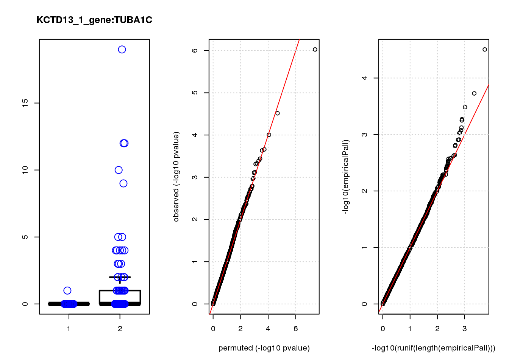
[1] "KCTD13_2_gene_edgeR-qlf_Neg1.Rd"
logFC logCPM F PValue FDR empiricalP empiricalP.FDR #in_real
RCAN1 -2.1 6.6 21 7.4e-06 0.047 0.00014 0.76 1
MYC -3.0 7.5 17 4.8e-05 0.130 0.00035 0.76 2
CMTM8 -1.9 6.6 16 8.3e-05 0.130 0.00048 0.76 3
KRT8 -2.4 7.0 16 8.4e-05 0.130 0.00048 0.76 4
IGFBP5 -2.2 6.6 15 1.4e-04 0.170 0.00060 0.76 5
NINJ1 -1.3 7.0 14 2.9e-04 0.300 0.00091 0.89 6
SLC20A2 -1.5 6.6 13 3.3e-04 0.300 0.00099 0.89 7
EFCC1 -1.5 6.5 14 7.1e-04 0.570 0.00170 1.00 8
PPP1R14C -1.7 6.8 11 1.1e-03 0.690 0.00230 1.00 9
PGAM5 -1.2 6.6 11 1.4e-03 0.690 0.00290 1.00 10
1e-04 NA NA NA NA NA NA NA 4
1e-05 NA NA NA NA NA NA NA 1
1e-06 NA NA NA NA NA NA NA 0
1e-07 NA NA NA NA NA NA NA 0
1e-08 NA NA NA NA NA NA NA 0
1e-09 NA NA NA NA NA NA NA 0
1e-10 NA NA NA NA NA NA NA 0
#in_perm EmpiricalFDR
RCAN1 0.90 0.90
MYC 2.20 1.10
CMTM8 3.00 1.00
KRT8 3.00 0.76
IGFBP5 3.80 0.76
NINJ1 5.80 0.96
SLC20A2 6.30 0.89
EFCC1 11.00 1.30
PPP1R14C 14.00 1.60
PGAM5 18.00 1.80
1e-04 3.30 0.81
1e-05 1.00 1.00
1e-06 0.53 Inf
1e-07 0.30 Inf
1e-08 0.23 Inf
1e-09 0.17 Inf
1e-10 0.17 Inf
[1] "KCTD13_3_gene_edgeR-qlf_Neg1.Rd"
logFC logCPM F PValue FDR empiricalP empiricalP.FDR #in_real
IGFBP5 2.0 6.9 17 7.1e-05 0.30 0.00015 0.53 1
TLE4 1.4 6.9 16 9.4e-05 0.30 0.00017 0.53 2
GEMIN2 1.4 6.9 15 1.7e-04 0.36 0.00028 0.58 3
IPO9 1.1 7.1 12 7.2e-04 0.72 0.00110 0.94 4
PYCRL -2.1 6.5 13 7.6e-04 0.72 0.00120 0.94 5
PPIL2 -2.1 6.5 14 7.6e-04 0.72 0.00120 0.94 6
GINM1 -2.0 6.6 11 8.7e-04 0.72 0.00140 0.94 7
QRICH1 1.3 6.6 11 9.1e-04 0.72 0.00140 0.94 8
ALDH1B1 1.2 6.6 11 1.2e-03 0.74 0.00200 0.94 9
SLC20A1 1.1 6.7 10 1.8e-03 0.74 0.00260 0.94 10
1e-04 NA NA NA NA NA NA NA 2
1e-05 NA NA NA NA NA NA NA 0
1e-06 NA NA NA NA NA NA NA 0
1e-07 NA NA NA NA NA NA NA 0
1e-08 NA NA NA NA NA NA NA 0
1e-09 NA NA NA NA NA NA NA 0
1e-10 NA NA NA NA NA NA NA 0
#in_perm EmpiricalFDR
IGFBP5 0.960 0.96
TLE4 1.100 0.53
GEMIN2 1.800 0.58
IPO9 7.200 1.80
PYCRL 7.600 1.50
PPIL2 7.600 1.30
GINM1 8.600 1.20
QRICH1 9.000 1.10
ALDH1B1 12.000 1.40
SLC20A1 17.000 1.70
1e-04 1.200 0.58
1e-05 0.560 Inf
1e-06 0.430 Inf
1e-07 0.260 Inf
1e-08 0.170 Inf
1e-09 0.170 Inf
1e-10 0.099 Inf
[1] "KMT2E_1_gene_edgeR-qlf_Neg1.Rd"
logFC logCPM F PValue FDR empiricalP empiricalP.FDR #in_real
EXOC6 1.5 6.6 14.0 0.00025 0.98 0.00062 1 1
FTH1 1.0 12.0 13.0 0.00039 0.98 0.00076 1 2
FAM161A -2.4 6.8 12.0 0.00082 0.98 0.00130 1 3
CSPP1 -2.3 6.6 11.0 0.00130 0.98 0.00180 1 4
GMCL1 -2.4 6.6 11.0 0.00130 0.98 0.00180 1 5
SLC44A2 1.4 6.6 10.0 0.00160 0.98 0.00240 1 6
B4GALT5 -2.3 6.5 10.0 0.00170 0.98 0.00250 1 7
ZMYND11 -2.3 6.5 10.0 0.00210 0.98 0.00300 1 8
BCL9 -2.3 6.5 10.0 0.00210 0.98 0.00300 1 9
NCSTN -2.3 6.8 9.7 0.00220 0.98 0.00320 1 10
1e-04 NA NA NA NA NA NA NA 0
1e-05 NA NA NA NA NA NA NA 0
1e-06 NA NA NA NA NA NA NA 0
1e-07 NA NA NA NA NA NA NA 0
1e-08 NA NA NA NA NA NA NA 0
1e-09 NA NA NA NA NA NA NA 0
1e-10 NA NA NA NA NA NA NA 0
#in_perm EmpiricalFDR
EXOC6 3.90 3.9
FTH1 4.80 2.4
FAM161A 8.30 2.8
CSPP1 11.00 2.8
GMCL1 11.00 2.3
SLC44A2 15.00 2.5
B4GALT5 16.00 2.3
ZMYND11 19.00 2.4
BCL9 19.00 2.1
NCSTN 20.00 2.0
1e-04 2.40 Inf
1e-05 0.97 Inf
1e-06 0.57 Inf
1e-07 0.40 Inf
1e-08 0.24 Inf
1e-09 0.17 Inf
1e-10 0.17 Inf
[1] "KMT2E_2_gene_edgeR-qlf_Neg1.Rd"
logFC logCPM F PValue FDR empiricalP empiricalP.FDR #in_real
EZR 1.2 7.5 19 2.4e-05 0.15 0.00024 0.62 1
QPRT -2.7 6.8 17 5.0e-05 0.16 0.00030 0.62 2
TEAD1 1.4 6.6 15 1.2e-04 0.18 0.00044 0.62 3
CMTM8 -2.7 6.7 15 1.3e-04 0.18 0.00047 0.62 4
RNF168 -2.2 6.7 15 1.4e-04 0.18 0.00049 0.62 5
RGS5 1.4 6.7 14 2.3e-04 0.24 0.00070 0.72 6
PRR5 -2.1 6.5 14 2.6e-04 0.24 0.00079 0.72 7
COQ7 1.3 6.7 13 4.7e-04 0.34 0.00110 0.81 8
TADA1 -2.0 6.5 14 4.8e-04 0.34 0.00110 0.81 9
RAB8A -1.5 7.1 12 6.9e-04 0.42 0.00150 0.84 10
1e-04 NA NA NA NA NA NA NA 2
1e-05 NA NA NA NA NA NA NA 0
1e-06 NA NA NA NA NA NA NA 0
1e-07 NA NA NA NA NA NA NA 0
1e-08 NA NA NA NA NA NA NA 0
1e-09 NA NA NA NA NA NA NA 0
1e-10 NA NA NA NA NA NA NA 0
#in_perm EmpiricalFDR
EZR 1.50 1.50
QPRT 1.90 0.96
TEAD1 2.80 0.94
CMTM8 3.00 0.74
RNF168 3.10 0.62
RGS5 4.40 0.74
PRR5 5.00 0.72
COQ7 7.20 0.91
TADA1 7.20 0.81
RAB8A 9.30 0.93
1e-04 2.50 1.20
1e-05 1.10 Inf
1e-06 0.74 Inf
1e-07 0.44 Inf
1e-08 0.37 Inf
1e-09 0.30 Inf
1e-10 0.20 Inf
[1] "KMT2E_3_gene_edgeR-qlf_Neg1.Rd"
logFC logCPM F PValue FDR empiricalP empiricalP.FDR #in_real
TP53I3 1.50 7.0 19.0 1.9e-05 0.12 0.00017 1 1
COG5 -2.10 6.5 16.0 2.1e-04 0.43 0.00057 1 2
GPT2 -1.80 6.9 14.0 2.5e-04 0.43 0.00059 1 3
BCHE -2.10 6.5 14.0 2.7e-04 0.43 0.00063 1 4
FDXR 1.20 7.1 13.0 5.1e-04 0.64 0.00100 1 5
KCTD1 1.20 6.7 12.0 7.2e-04 0.76 0.00130 1 6
LIN28B 1.20 6.7 11.0 8.7e-04 0.79 0.00150 1 7
NCSTN -1.70 6.8 11.0 1.3e-03 1.00 0.00200 1 8
MYC -2.90 7.6 9.7 2.2e-03 1.00 0.00300 1 9
HSP90AA1 -0.49 10.0 9.3 2.7e-03 1.00 0.00350 1 10
1e-04 NA NA NA NA NA NA NA 1
1e-05 NA NA NA NA NA NA NA 0
1e-06 NA NA NA NA NA NA NA 0
1e-07 NA NA NA NA NA NA NA 0
1e-08 NA NA NA NA NA NA NA 0
1e-09 NA NA NA NA NA NA NA 0
1e-10 NA NA NA NA NA NA NA 0
#in_perm EmpiricalFDR
TP53I3 1.10 1.1
COG5 3.60 1.8
GPT2 3.80 1.3
BCHE 4.00 1.0
FDXR 6.40 1.3
KCTD1 8.20 1.4
LIN28B 9.40 1.3
NCSTN 13.00 1.6
MYC 19.00 2.1
HSP90AA1 22.00 2.2
1e-04 2.50 2.5
1e-05 0.87 Inf
1e-06 0.50 Inf
1e-07 0.30 Inf
1e-08 0.20 Inf
1e-09 0.17 Inf
1e-10 0.13 Inf
[1] "LINC00637_1_gene_edgeR-qlf_Neg1.Rd"
logFC logCPM F PValue FDR empiricalP empiricalP.FDR
HSP90AA1 0.93 11.0 34 2.3e-08 0.00015 1.1e-05 0.067
MYC -3.20 7.5 25 1.2e-06 0.00380 6.3e-05 0.200
MALAT1 0.65 14.0 20 1.2e-05 0.02600 1.4e-04 0.300
PKMYT1 -1.50 6.7 19 2.2e-05 0.03500 1.9e-04 0.300
FKBP1B -1.30 6.7 15 1.3e-04 0.16000 4.2e-04 0.530
SPIN2B -1.20 6.5 13 7.0e-04 0.71000 1.2e-03 0.940
DERL1 -0.93 6.8 12 8.0e-04 0.71000 1.3e-03 0.940
DBNDD1 -1.20 6.5 12 9.0e-04 0.71000 1.4e-03 0.940
HSPH1 0.81 7.5 11 1.1e-03 0.78000 1.6e-03 0.940
JAG1 1.00 6.9 10 1.6e-03 0.92000 2.1e-03 0.940
1e-04 NA NA NA NA NA NA NA
1e-05 NA NA NA NA NA NA NA
1e-06 NA NA NA NA NA NA NA
1e-07 NA NA NA NA NA NA NA
1e-08 NA NA NA NA NA NA NA
1e-09 NA NA NA NA NA NA NA
1e-10 NA NA NA NA NA NA NA
#in_real #in_perm EmpiricalFDR
HSP90AA1 1 0.067 0.067
MYC 2 0.400 0.200
MALAT1 3 0.900 0.300
PKMYT1 4 1.200 0.300
FKBP1B 5 2.600 0.530
SPIN2B 6 7.500 1.200
DERL1 7 8.100 1.200
DBNDD1 8 8.700 1.100
HSPH1 9 10.000 1.100
JAG1 10 13.000 1.300
1e-04 4 2.300 0.570
1e-05 2 0.800 0.400
1e-06 1 0.400 0.400
1e-07 1 0.170 0.170
1e-08 0 0.067 Inf
1e-09 0 0.000 NaN
1e-10 0 0.000 NaN 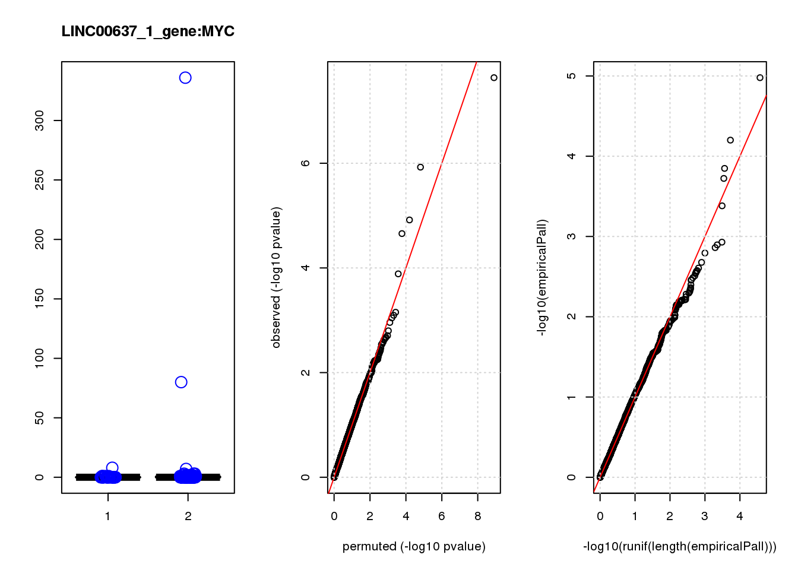
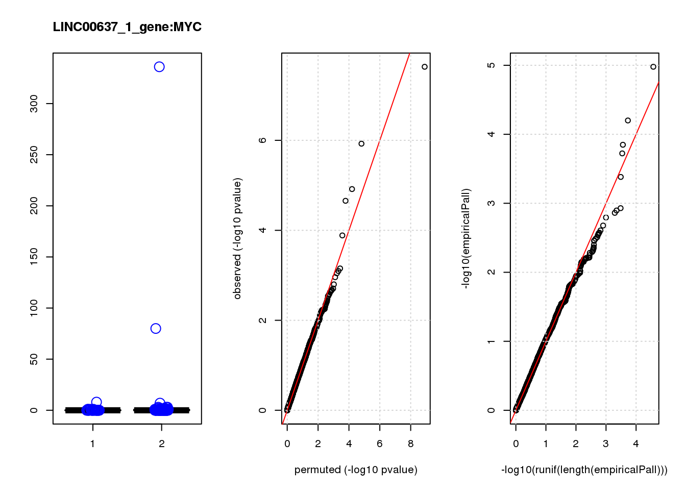
[1] "LINC00637_2_gene_edgeR-qlf_Neg1.Rd"
logFC logCPM F PValue FDR empiricalP empiricalP.FDR #in_real
MYC -3.4 7.5 20 1.3e-05 0.081 0.00018 0.82 1
TP53I3 1.2 7.0 18 3.0e-05 0.096 0.00026 0.82 2
TUBA1C -2.0 6.8 16 8.8e-05 0.190 0.00044 0.93 3
SRD5A1 -1.4 6.7 14 2.8e-04 0.440 0.00082 1.00 4
KCTD9 -1.5 6.6 13 3.9e-04 0.460 0.00099 1.00 5
MAFB -1.8 6.6 13 4.3e-04 0.460 0.00110 1.00 6
SRFBP1 -1.3 6.6 13 6.8e-04 0.620 0.00150 1.00 7
SPOCK1 1.0 6.7 11 8.9e-04 0.710 0.00180 1.00 8
SLC20A2 -1.3 6.6 11 1.1e-03 0.740 0.00200 1.00 9
COASY -1.2 6.7 11 1.3e-03 0.800 0.00240 1.00 10
1e-04 NA NA NA NA NA NA NA 3
1e-05 NA NA NA NA NA NA NA 0
1e-06 NA NA NA NA NA NA NA 0
1e-07 NA NA NA NA NA NA NA 0
1e-08 NA NA NA NA NA NA NA 0
1e-09 NA NA NA NA NA NA NA 0
1e-10 NA NA NA NA NA NA NA 0
#in_perm EmpiricalFDR
MYC 1.200 1.20
TP53I3 1.600 0.82
TUBA1C 2.800 0.93
SRD5A1 5.200 1.30
KCTD9 6.300 1.30
MAFB 6.800 1.10
SRFBP1 9.500 1.40
SPOCK1 12.000 1.40
SLC20A2 13.000 1.40
COASY 15.000 1.50
1e-04 2.900 0.98
1e-05 1.000 Inf
1e-06 0.400 Inf
1e-07 0.270 Inf
1e-08 0.100 Inf
1e-09 0.067 Inf
1e-10 0.000 NaN
[1] "LINC00637_3_gene_edgeR-qlf_Neg1.Rd"
logFC logCPM F PValue FDR empiricalP empiricalP.FDR
GADD45G -3.10 7.3 30 1.3e-07 0.0008 5.3e-05 0.33
CDC25A -1.50 6.5 21 8.4e-06 0.0270 1.9e-04 0.33
DLL3 -2.00 6.9 19 2.4e-05 0.0380 2.6e-04 0.33
CDKN1C -1.80 6.7 19 2.4e-05 0.0380 2.6e-04 0.33
MIAT -1.70 6.9 18 3.3e-05 0.0420 2.7e-04 0.33
RGS5 1.20 6.7 17 4.5e-05 0.0480 3.1e-04 0.33
TPM2 1.40 7.4 17 6.7e-05 0.0610 3.7e-04 0.33
TNFRSF12A 1.10 7.9 15 1.8e-04 0.1400 5.6e-04 0.45
TPM1 0.76 8.4 14 2.8e-04 0.2000 7.4e-04 0.49
DIO3 -1.20 7.0 13 3.1e-04 0.2000 7.7e-04 0.49
1e-04 NA NA NA NA NA NA NA
1e-05 NA NA NA NA NA NA NA
1e-06 NA NA NA NA NA NA NA
1e-07 NA NA NA NA NA NA NA
1e-08 NA NA NA NA NA NA NA
1e-09 NA NA NA NA NA NA NA
1e-10 NA NA NA NA NA NA NA
#in_real #in_perm EmpiricalFDR
GADD45G 1 0.34 0.34
CDC25A 2 1.20 0.59
DLL3 3 1.60 0.54
CDKN1C 4 1.60 0.40
MIAT 5 1.70 0.34
RGS5 6 2.00 0.33
TPM2 7 2.30 0.33
TNFRSF12A 8 3.60 0.45
TPM1 9 4.70 0.52
DIO3 10 4.90 0.49
1e-04 7 2.70 0.38
1e-05 2 1.20 0.62
1e-06 1 0.57 0.57
1e-07 0 0.34 Inf
1e-08 0 0.10 Inf
1e-09 0 0.10 Inf
1e-10 0 0.10 Inf
[1] "LOC100507431_1_gene_edgeR-qlf_Neg1.Rd"
logFC logCPM F PValue FDR empiricalP empiricalP.FDR #in_real
S100A16 2.0 6.8 27 5.8e-07 0.0037 6.8e-05 0.26 1
TPM2 2.0 7.3 22 6.8e-06 0.0190 1.2e-04 0.26 2
CDKN1C 2.2 7.1 21 9.0e-06 0.0190 1.4e-04 0.26 3
GADD45G 2.4 8.0 20 1.5e-05 0.0240 1.6e-04 0.26 4
CCND2 1.6 7.2 17 5.1e-05 0.0650 3.4e-04 0.43 5
ANAPC10 -2.3 6.5 15 1.7e-04 0.1800 6.2e-04 0.66 6
NOC3L -2.0 6.6 12 7.1e-04 0.6400 1.6e-03 1.00 7
IRS1 1.3 6.6 11 9.7e-04 0.7700 2.1e-03 1.00 8
SIGIRR -2.0 6.5 12 1.2e-03 0.7800 2.4e-03 1.00 9
MYC -3.9 7.6 11 1.2e-03 0.7800 2.4e-03 1.00 10
1e-04 NA NA NA NA NA NA NA 5
1e-05 NA NA NA NA NA NA NA 3
1e-06 NA NA NA NA NA NA NA 1
1e-07 NA NA NA NA NA NA NA 0
1e-08 NA NA NA NA NA NA NA 0
1e-09 NA NA NA NA NA NA NA 0
1e-10 NA NA NA NA NA NA NA 0
#in_perm EmpiricalFDR
S100A16 0.43 0.43
TPM2 0.77 0.38
CDKN1C 0.90 0.30
GADD45G 1.00 0.26
CCND2 2.10 0.43
ANAPC10 3.90 0.66
NOC3L 10.00 1.50
IRS1 13.00 1.70
SIGIRR 15.00 1.70
MYC 15.00 1.50
1e-04 3.00 0.60
1e-05 0.93 0.31
1e-06 0.57 0.57
1e-07 0.37 Inf
1e-08 0.13 Inf
1e-09 0.10 Inf
1e-10 0.10 Inf
[1] "LOC100507431_2_gene_edgeR-qlf_Neg1.Rd"
logFC logCPM F PValue FDR empiricalP empiricalP.FDR #in_real
S100A16 1.80 6.8 30 1.7e-07 0.0011 5.2e-05 0.33 1
S100A13 1.40 7.2 20 1.4e-05 0.0440 1.5e-04 0.34 2
DHRS7 1.30 6.7 19 2.1e-05 0.0440 1.6e-04 0.34 3
SPOCK1 1.30 6.7 17 7.0e-05 0.1100 3.1e-04 0.44 4
LAPTM4A 0.96 7.1 16 9.9e-05 0.1300 4.0e-04 0.44 5
GAP43 1.20 8.1 15 1.2e-04 0.1300 4.5e-04 0.44 6
GPM6B 0.67 8.5 15 1.5e-04 0.1400 5.0e-04 0.44 7
MYC -2.80 7.5 15 1.8e-04 0.1400 5.6e-04 0.44 8
STMN2 -2.60 7.2 14 2.9e-04 0.2000 7.6e-04 0.47 9
CRABP1 -1.80 9.9 13 3.2e-04 0.2000 8.2e-04 0.47 10
1e-04 NA NA NA NA NA NA NA 5
1e-05 NA NA NA NA NA NA NA 1
1e-06 NA NA NA NA NA NA NA 1
1e-07 NA NA NA NA NA NA NA 0
1e-08 NA NA NA NA NA NA NA 0
1e-09 NA NA NA NA NA NA NA 0
1e-10 NA NA NA NA NA NA NA 0
#in_perm EmpiricalFDR
S100A16 0.33 0.33
S100A13 0.96 0.48
DHRS7 1.00 0.34
SPOCK1 2.00 0.50
LAPTM4A 2.50 0.50
GAP43 2.80 0.47
GPM6B 3.20 0.45
MYC 3.50 0.44
STMN2 4.80 0.54
CRABP1 5.20 0.52
1e-04 2.50 0.50
1e-05 0.70 0.70
1e-06 0.43 0.43
1e-07 0.30 Inf
1e-08 0.17 Inf
1e-09 0.17 Inf
1e-10 0.17 Inf
[1] "LOC100507431_3_gene_edgeR-qlf_Neg1.Rd"
logFC logCPM F PValue FDR empiricalP empiricalP.FDR #in_real
MYC -3.20 7.4 30 1.3e-07 0.00085 3.1e-05 0.20 1
DDIT4 1.30 8.1 24 1.8e-06 0.00570 7.3e-05 0.23 2
IGFBP5 -2.00 6.5 21 9.1e-06 0.01900 1.5e-04 0.31 3
EEF2 0.40 11.0 13 3.5e-04 0.56000 8.1e-04 0.84 4
HUS1 0.94 6.5 12 5.7e-04 0.59000 1.1e-03 0.84 5
TRIB3 1.10 7.4 12 6.0e-04 0.59000 1.2e-03 0.84 6
SHMT2 0.72 7.6 12 7.6e-04 0.59000 1.4e-03 0.84 7
TAF6 0.65 7.2 11 8.5e-04 0.59000 1.5e-03 0.84 8
DBNDD1 -1.10 6.4 11 9.1e-04 0.59000 1.6e-03 0.84 9
WARS 0.79 7.4 11 9.5e-04 0.59000 1.7e-03 0.84 10
1e-04 NA NA NA NA NA NA NA 3
1e-05 NA NA NA NA NA NA NA 3
1e-06 NA NA NA NA NA NA NA 1
1e-07 NA NA NA NA NA NA NA 0
1e-08 NA NA NA NA NA NA NA 0
1e-09 NA NA NA NA NA NA NA 0
1e-10 NA NA NA NA NA NA NA 0
#in_perm EmpiricalFDR
MYC 0.200 0.20
DDIT4 0.460 0.23
IGFBP5 0.920 0.31
EEF2 5.100 1.30
HUS1 7.100 1.40
TRIB3 7.400 1.20
SHMT2 8.800 1.30
TAF6 9.600 1.20
DBNDD1 10.000 1.10
WARS 11.000 1.10
1e-04 2.300 0.78
1e-05 0.990 0.33
1e-06 0.360 0.36
1e-07 0.160 Inf
1e-08 0.130 Inf
1e-09 0.033 Inf
1e-10 0.000 NaN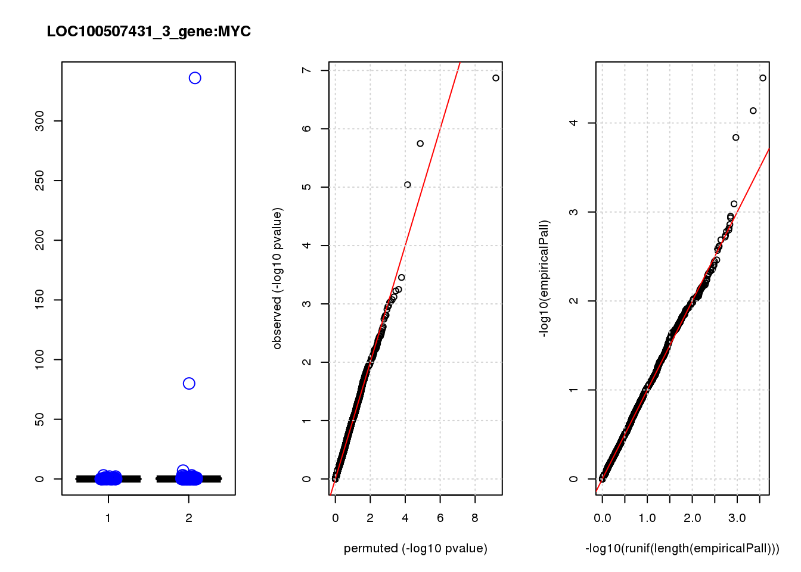
[1] "LOC105376975_1_gene_edgeR-qlf_Neg1.Rd"
logFC logCPM F PValue FDR empiricalP empiricalP.FDR #in_real
NEFM 1.6 7.9 17 5.9e-05 0.38 0.00039 0.92 1
MYC -2.6 7.5 15 1.2e-04 0.38 0.00052 0.92 2
STMN2 1.7 7.7 13 3.9e-04 0.59 0.00110 0.92 3
TPM2 1.3 7.3 13 3.9e-04 0.59 0.00110 0.92 4
FNDC3A -1.2 6.7 13 5.1e-04 0.59 0.00120 0.92 5
CSPP1 -1.3 6.5 13 5.6e-04 0.59 0.00130 0.92 6
HS6ST1 -1.3 6.7 11 1.2e-03 0.84 0.00220 0.92 7
DIO3 -1.2 7.1 10 1.5e-03 0.84 0.00260 0.92 8
HMG20A -1.3 6.5 13 1.7e-03 0.84 0.00280 0.92 9
CCDC127 -1.1 6.6 10 1.7e-03 0.84 0.00280 0.92 10
1e-04 NA NA NA NA NA NA NA 1
1e-05 NA NA NA NA NA NA NA 0
1e-06 NA NA NA NA NA NA NA 0
1e-07 NA NA NA NA NA NA NA 0
1e-08 NA NA NA NA NA NA NA 0
1e-09 NA NA NA NA NA NA NA 0
1e-10 NA NA NA NA NA NA NA 0
#in_perm EmpiricalFDR
NEFM 2.50 2.5
MYC 3.30 1.6
STMN2 6.70 2.2
TPM2 6.80 1.7
FNDC3A 7.70 1.5
CSPP1 8.40 1.4
HS6ST1 14.00 2.0
DIO3 16.00 2.0
HMG20A 17.00 1.9
CCDC127 18.00 1.8
1e-04 3.00 3.0
1e-05 1.00 Inf
1e-06 0.43 Inf
1e-07 0.30 Inf
1e-08 0.23 Inf
1e-09 0.20 Inf
1e-10 0.20 Inf
[1] "LOC105376975_2_gene_edgeR-qlf_Neg1.Rd"
logFC logCPM F PValue FDR empiricalP empiricalP.FDR #in_real
ATF5 -1.50 6.9 15 0.00016 0.44 0.00056 0.75 1
SLC7A11 -1.40 6.6 14 0.00029 0.44 0.00079 0.75 2
PSAT1 -0.75 8.3 13 0.00040 0.44 0.00097 0.75 3
MCM5 -0.97 7.1 13 0.00041 0.44 0.00097 0.75 4
PHGDH -0.73 8.6 12 0.00051 0.44 0.00110 0.75 5
MTHFD2 -0.89 7.4 12 0.00059 0.44 0.00120 0.75 6
PLP1 1.10 6.7 12 0.00061 0.44 0.00120 0.75 7
NAT9 -0.90 6.8 12 0.00071 0.44 0.00140 0.75 8
TRIP12 0.89 6.6 12 0.00080 0.44 0.00160 0.75 9
CEBPB -1.30 6.8 12 0.00082 0.44 0.00160 0.75 10
1e-04 NA NA NA NA NA NA NA 0
1e-05 NA NA NA NA NA NA NA 0
1e-06 NA NA NA NA NA NA NA 0
1e-07 NA NA NA NA NA NA NA 0
1e-08 NA NA NA NA NA NA NA 0
1e-09 NA NA NA NA NA NA NA 0
1e-10 NA NA NA NA NA NA NA 0
#in_perm EmpiricalFDR
ATF5 3.600 3.6
SLC7A11 5.000 2.5
PSAT1 6.100 2.0
MCM5 6.100 1.5
PHGDH 6.900 1.4
MTHFD2 7.700 1.3
PLP1 7.900 1.1
NAT9 8.800 1.1
TRIP12 9.900 1.1
CEBPB 10.000 1.0
1e-04 2.700 Inf
1e-05 0.770 Inf
1e-06 0.400 Inf
1e-07 0.170 Inf
1e-08 0.100 Inf
1e-09 0.067 Inf
1e-10 0.067 Inf
[1] "LOC105376975_3_gene_edgeR-qlf_Neg1.Rd"
logFC logCPM F PValue FDR empiricalP empiricalP.FDR
RP11-46C20.1 2.6 6.6 28 3.5e-07 0.0022 3.1e-05 0.20
ACBD3 1.7 6.8 14 2.4e-04 0.5300 5.5e-04 0.94
SPOCK1 1.9 6.6 14 3.1e-04 0.5300 6.2e-04 0.94
SDC2 1.4 7.7 13 3.3e-04 0.5300 6.3e-04 0.94
KIF5C -2.4 7.3 11 1.1e-03 0.7900 1.3e-03 0.94
A2M 1.8 6.6 11 1.2e-03 0.7900 1.4e-03 0.94
HES4 -2.3 7.7 11 1.4e-03 0.7900 1.6e-03 0.94
FNBP4 -3.1 6.8 10 1.6e-03 0.7900 1.8e-03 0.94
TOP2A -4.4 7.4 10 1.7e-03 0.7900 1.9e-03 0.94
OSBPL1A -3.0 6.8 10 1.8e-03 0.7900 2.0e-03 0.94
1e-04 NA NA NA NA NA NA NA
1e-05 NA NA NA NA NA NA NA
1e-06 NA NA NA NA NA NA NA
1e-07 NA NA NA NA NA NA NA
1e-08 NA NA NA NA NA NA NA
1e-09 NA NA NA NA NA NA NA
1e-10 NA NA NA NA NA NA NA
#in_real #in_perm EmpiricalFDR
RP11-46C20.1 1 0.200 0.20
ACBD3 2 3.500 1.80
SPOCK1 3 3.900 1.30
SDC2 4 4.000 1.00
KIF5C 5 8.300 1.70
A2M 6 8.800 1.50
HES4 7 10.000 1.50
FNBP4 8 11.000 1.40
TOP2A 9 12.000 1.30
OSBPL1A 10 13.000 1.30
1e-04 1 1.900 1.90
1e-05 1 0.960 0.96
1e-06 1 0.500 0.50
1e-07 0 0.100 Inf
1e-08 0 0.100 Inf
1e-09 0 0.033 Inf
1e-10 0 0.033 Inf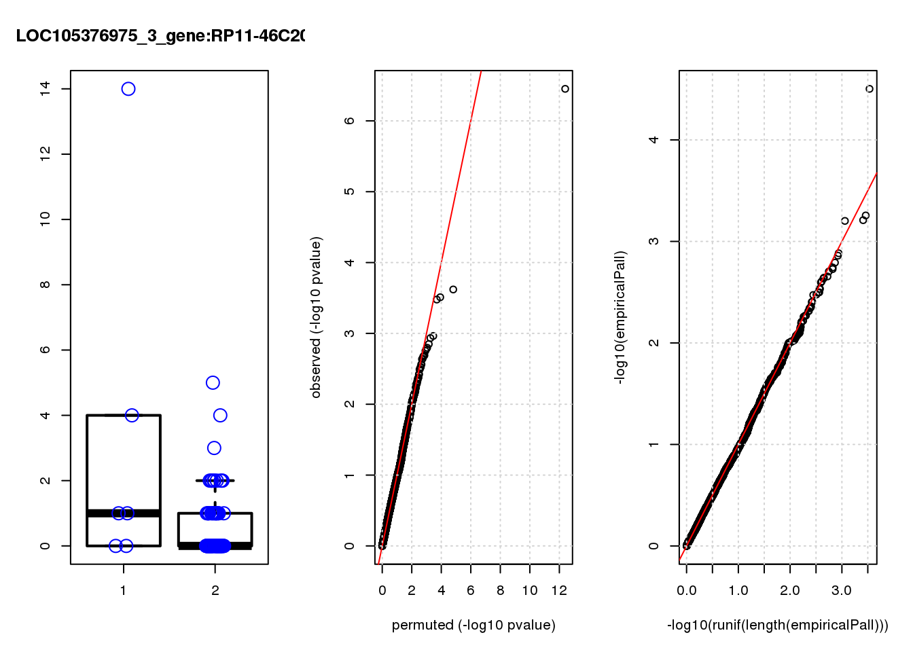
[1] "miR137_1_gene_edgeR-qlf_Neg1.Rd"
logFC logCPM F PValue FDR empiricalP empiricalP.FDR #in_real
MYC -3.10 7.5 25 1.0e-06 0.0065 0.0001 0.66 1
PKMYT1 -1.40 6.7 16 8.9e-05 0.2800 0.0005 0.98 2
CDC6 -1.30 6.9 13 4.8e-04 0.6200 0.0012 0.98 3
APMAP -0.68 7.4 12 5.8e-04 0.6200 0.0013 0.98 4
NCAM1 -1.30 6.6 12 6.3e-04 0.6200 0.0014 0.98 5
GADD45G -1.90 7.4 12 7.1e-04 0.6200 0.0015 0.98 6
ARMCX6 0.80 7.0 11 8.9e-04 0.6200 0.0017 0.98 7
EIF4A3 -0.65 7.7 11 9.0e-04 0.6200 0.0017 0.98 8
NDC80 0.99 6.8 11 9.9e-04 0.6200 0.0019 0.98 9
LRRC28 0.92 6.7 11 1.1e-03 0.6200 0.0020 0.98 10
1e-04 NA NA NA NA NA NA NA 2
1e-05 NA NA NA NA NA NA NA 1
1e-06 NA NA NA NA NA NA NA 0
1e-07 NA NA NA NA NA NA NA 0
1e-08 NA NA NA NA NA NA NA 0
1e-09 NA NA NA NA NA NA NA 0
1e-10 NA NA NA NA NA NA NA 0
#in_perm EmpiricalFDR
MYC 0.66 0.66
PKMYT1 3.20 1.60
CDC6 7.70 2.60
APMAP 8.50 2.10
NCAM1 9.00 1.80
GADD45G 9.60 1.60
ARMCX6 11.00 1.60
EIF4A3 11.00 1.40
NDC80 12.00 1.30
LRRC28 13.00 1.30
1e-04 3.40 1.70
1e-05 1.30 1.30
1e-06 0.66 Inf
1e-07 0.30 Inf
1e-08 0.17 Inf
1e-09 0.13 Inf
1e-10 0.10 Inf
[1] "miR137_2_gene_edgeR-qlf_Neg1.Rd"
logFC logCPM F PValue FDR empiricalP empiricalP.FDR #in_real
DBNDD1 -1.8 6.4 19 3.1e-05 0.20 0.00025 0.76 1
STMN2 -2.6 7.2 15 1.3e-04 0.27 0.00046 0.76 2
SLC4A1AP -1.6 6.6 15 1.5e-04 0.27 0.00048 0.76 3
MYC -2.6 7.5 14 2.0e-04 0.27 0.00058 0.76 4
IRS1 1.1 6.6 14 2.1e-04 0.27 0.00060 0.76 5
FRZB -1.7 6.9 12 5.4e-04 0.50 0.00110 0.76 6
TRIM69 1.1 6.7 12 5.5e-04 0.50 0.00110 0.76 7
STX2 1.0 6.5 12 8.2e-04 0.53 0.00140 0.76 8
HAUS6 -1.3 6.6 12 8.4e-04 0.53 0.00140 0.76 9
MTX2 -1.0 6.9 11 9.1e-04 0.53 0.00160 0.76 10
1e-04 NA NA NA NA NA NA NA 1
1e-05 NA NA NA NA NA NA NA 0
1e-06 NA NA NA NA NA NA NA 0
1e-07 NA NA NA NA NA NA NA 0
1e-08 NA NA NA NA NA NA NA 0
1e-09 NA NA NA NA NA NA NA 0
1e-10 NA NA NA NA NA NA NA 0
#in_perm EmpiricalFDR
DBNDD1 1.600 1.60
STMN2 2.900 1.50
SLC4A1AP 3.100 1.00
MYC 3.600 0.91
IRS1 3.800 0.76
FRZB 6.800 1.10
TRIM69 6.800 0.98
STX2 8.900 1.10
HAUS6 9.100 1.00
MTX2 9.900 0.99
1e-04 2.500 2.50
1e-05 0.990 Inf
1e-06 0.330 Inf
1e-07 0.099 Inf
1e-08 0.066 Inf
1e-09 0.033 Inf
1e-10 0.033 Inf
[1] "miR137_3_gene_edgeR-qlf_Neg1.Rd"
logFC logCPM F PValue FDR empiricalP empiricalP.FDR #in_real
MYC -2.40 7.4 24 2.0e-06 0.013 0.00020 0.56 1
RGS5 1.30 6.7 20 1.2e-05 0.031 0.00028 0.56 2
DST 1.10 6.7 20 1.5e-05 0.031 0.00028 0.56 3
NQO1 1.20 7.5 16 7.1e-05 0.095 0.00046 0.56 4
SLC2A3 1.00 6.6 16 7.5e-05 0.095 0.00047 0.56 5
S100A16 1.10 6.7 16 1.0e-04 0.110 0.00053 0.56 6
PDLIM7 0.58 8.5 14 2.4e-04 0.210 0.00073 0.61 7
GPN1 0.68 7.3 14 3.0e-04 0.240 0.00083 0.61 8
ACTG1 0.25 13.0 13 3.5e-04 0.240 0.00090 0.61 9
ARMCX6 0.80 7.0 13 3.8e-04 0.240 0.00096 0.61 10
1e-04 NA NA NA NA NA NA NA 5
1e-05 NA NA NA NA NA NA NA 1
1e-06 NA NA NA NA NA NA NA 0
1e-07 NA NA NA NA NA NA NA 0
1e-08 NA NA NA NA NA NA NA 0
1e-09 NA NA NA NA NA NA NA 0
1e-10 NA NA NA NA NA NA NA 0
#in_perm EmpiricalFDR
MYC 1.30 1.30
RGS5 1.80 0.88
DST 1.80 0.59
NQO1 2.90 0.73
SLC2A3 3.00 0.59
S100A16 3.30 0.56
PDLIM7 4.70 0.67
GPN1 5.20 0.65
ACTG1 5.70 0.63
ARMCX6 6.10 0.61
1e-04 3.30 0.65
1e-05 1.70 1.70
1e-06 1.10 Inf
1e-07 0.78 Inf
1e-08 0.47 Inf
1e-09 0.34 Inf
1e-10 0.30 Inf
[1] "NAB2_1_gene_edgeR-qlf_Neg1.Rd"
logFC logCPM F PValue FDR empiricalP empiricalP.FDR #in_real
DDX10 1.50 6.7 23 3.6e-06 0.019 0.00015 0.53 1
MYC -3.20 7.5 22 6.0e-06 0.019 0.00017 0.53 2
WNT7B -1.80 6.6 16 9.0e-05 0.190 0.00043 0.79 3
DTNA -1.60 6.5 17 1.4e-04 0.220 0.00050 0.79 4
CUEDC1 -1.30 6.6 13 4.3e-04 0.510 0.00090 0.92 5
CMTM8 -1.50 6.6 12 5.8e-04 0.510 0.00110 0.92 6
XPO6 0.98 6.6 12 6.3e-04 0.510 0.00110 0.92 7
ISY1 0.94 6.7 12 6.4e-04 0.510 0.00120 0.92 8
PSMA5 -0.58 7.9 11 9.9e-04 0.700 0.00150 0.98 9
HIST1H1C 1.20 6.6 11 1.1e-03 0.700 0.00170 0.98 10
1e-04 NA NA NA NA NA NA NA 3
1e-05 NA NA NA NA NA NA NA 2
1e-06 NA NA NA NA NA NA NA 0
1e-07 NA NA NA NA NA NA NA 0
1e-08 NA NA NA NA NA NA NA 0
1e-09 NA NA NA NA NA NA NA 0
1e-10 NA NA NA NA NA NA NA 0
#in_perm EmpiricalFDR
DDX10 0.93 0.93
MYC 1.10 0.53
WNT7B 2.70 0.91
DTNA 3.20 0.79
CUEDC1 5.70 1.10
CMTM8 6.90 1.20
XPO6 7.20 1.00
ISY1 7.30 0.92
PSMA5 9.80 1.10
HIST1H1C 11.00 1.10
1e-04 2.80 0.93
1e-05 1.20 0.60
1e-06 0.60 Inf
1e-07 0.27 Inf
1e-08 0.20 Inf
1e-09 0.20 Inf
1e-10 0.17 Inf
[1] "NAB2_2_gene_edgeR-qlf_Neg1.Rd"
logFC logCPM F PValue FDR empiricalP empiricalP.FDR
CLU 1.90 7.7 45 2.2e-10 1.4e-06 6.4e-05 0.19
NQO1 1.90 7.6 34 3.1e-08 9.7e-05 9.0e-05 0.19
GAP43 1.70 8.2 29 2.4e-07 5.1e-04 1.1e-04 0.19
FTH1 1.10 12.0 26 1.0e-06 1.6e-03 1.2e-04 0.19
CTD-2006C1.2 1.20 7.0 19 1.9e-05 2.4e-02 2.5e-04 0.32
IFI27L1 1.20 6.7 18 3.1e-05 3.3e-02 3.2e-04 0.34
SQSTM1 1.30 8.2 15 1.6e-04 1.3e-01 6.8e-04 0.49
FOXJ1 -1.80 6.5 15 1.6e-04 1.3e-01 6.8e-04 0.49
EIF4A2 0.73 8.1 14 2.0e-04 1.4e-01 7.9e-04 0.49
NKD1 -1.70 6.4 15 2.6e-04 1.6e-01 8.8e-04 0.49
1e-04 NA NA NA NA NA NA NA
1e-05 NA NA NA NA NA NA NA
1e-06 NA NA NA NA NA NA NA
1e-07 NA NA NA NA NA NA NA
1e-08 NA NA NA NA NA NA NA
1e-09 NA NA NA NA NA NA NA
1e-10 NA NA NA NA NA NA NA
#in_real #in_perm EmpiricalFDR
CLU 1 0.40 0.40
NQO1 2 0.57 0.29
GAP43 3 0.67 0.22
FTH1 4 0.77 0.19
CTD-2006C1.2 5 1.60 0.32
IFI27L1 6 2.00 0.34
SQSTM1 7 4.30 0.61
FOXJ1 8 4.30 0.54
EIF4A2 9 5.00 0.56
NKD1 10 5.60 0.56
1e-04 6 3.30 0.55
1e-05 4 1.20 0.31
1e-06 3 0.77 0.26
1e-07 2 0.57 0.29
1e-08 1 0.50 0.50
1e-09 1 0.47 0.47
1e-10 0 0.40 Inf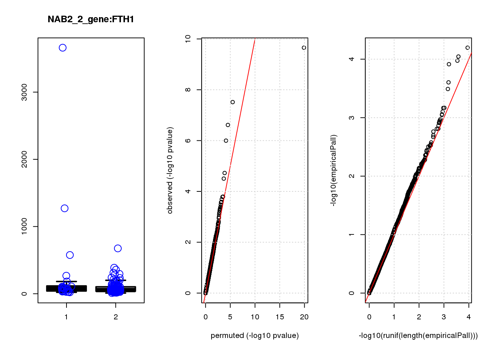
[1] "NAB2_3_gene_edgeR-qlf_Neg1.Rd"
logFC logCPM F PValue FDR empiricalP empiricalP.FDR #in_real
SLC19A1 -2.00 6.5 19 5.3e-05 0.32 0.00027 0.98 1
EVA1B 1.30 6.6 16 1.0e-04 0.32 0.00038 0.98 2
MT-ATP6 0.63 11.0 14 3.1e-04 0.66 0.00077 0.98 3
PKMYT1 -1.60 6.7 13 4.7e-04 0.70 0.00100 0.98 4
AP5S1 -1.60 6.5 15 7.5e-04 0.70 0.00140 0.98 5
ARHGAP21 -1.50 6.6 12 7.6e-04 0.70 0.00140 0.98 6
ASCL1 1.30 7.1 11 8.7e-04 0.70 0.00160 0.98 7
TP53 -1.10 7.1 11 9.9e-04 0.70 0.00180 0.98 8
DLGAP5 1.20 6.7 11 1.1e-03 0.70 0.00200 0.98 9
TMCO3 -1.50 6.6 12 1.1e-03 0.70 0.00200 0.98 10
1e-04 NA NA NA NA NA NA NA 1
1e-05 NA NA NA NA NA NA NA 0
1e-06 NA NA NA NA NA NA NA 0
1e-07 NA NA NA NA NA NA NA 0
1e-08 NA NA NA NA NA NA NA 0
1e-09 NA NA NA NA NA NA NA 0
1e-10 NA NA NA NA NA NA NA 0
#in_perm EmpiricalFDR
SLC19A1 1.70 1.7
EVA1B 2.40 1.2
MT-ATP6 4.90 1.6
PKMYT1 6.40 1.6
AP5S1 9.00 1.8
ARHGAP21 9.00 1.5
ASCL1 10.00 1.5
TP53 11.00 1.4
DLGAP5 12.00 1.4
TMCO3 12.00 1.2
1e-04 2.40 2.4
1e-05 0.70 Inf
1e-06 0.33 Inf
1e-07 0.27 Inf
1e-08 0.23 Inf
1e-09 0.13 Inf
1e-10 0.10 Inf
[1] "NGEF_1_gene_edgeR-qlf_Neg1.Rd"
logFC logCPM F PValue FDR empiricalP empiricalP.FDR #in_real
NQO1 1.70 7.4 15 0.00013 0.64 0.00045 0.96 1
CTTN 1.40 7.0 13 0.00033 0.64 0.00076 0.96 2
SKP1 -0.73 8.9 13 0.00040 0.64 0.00086 0.96 3
CMBL -2.40 6.8 12 0.00056 0.64 0.00110 0.96 4
AKAP8L -2.70 6.7 12 0.00059 0.64 0.00110 0.96 5
TPX2 1.40 7.1 11 0.00089 0.64 0.00160 0.96 6
PHLDA3 -1.90 7.8 11 0.00097 0.64 0.00170 0.96 7
APRT -0.99 8.3 11 0.00100 0.64 0.00180 0.96 8
TTC39C 1.40 6.5 11 0.00110 0.64 0.00180 0.96 9
DEF8 -1.30 7.4 11 0.00110 0.64 0.00190 0.96 10
1e-04 NA NA NA NA NA NA NA 0
1e-05 NA NA NA NA NA NA NA 0
1e-06 NA NA NA NA NA NA NA 0
1e-07 NA NA NA NA NA NA NA 0
1e-08 NA NA NA NA NA NA NA 0
1e-09 NA NA NA NA NA NA NA 0
1e-10 NA NA NA NA NA NA NA 0
#in_perm EmpiricalFDR
NQO1 2.90 2.9
CTTN 4.80 2.4
SKP1 5.50 1.8
CMBL 6.90 1.7
AKAP8L 7.30 1.5
TPX2 10.00 1.7
PHLDA3 11.00 1.6
APRT 11.00 1.4
TTC39C 12.00 1.3
DEF8 12.00 1.2
1e-04 2.60 Inf
1e-05 1.20 Inf
1e-06 0.86 Inf
1e-07 0.63 Inf
1e-08 0.43 Inf
1e-09 0.30 Inf
1e-10 0.23 Inf
[1] "NGEF_2_gene_edgeR-qlf_Neg1.Rd"
logFC logCPM F PValue FDR empiricalP empiricalP.FDR #in_real
C2orf69 2.7 6.6 16 9.8e-05 0.62 0.00042 0.85 1
MSANTD2 2.4 6.5 13 5.1e-04 0.84 0.00081 0.85 2
EMG1 1.8 7.7 12 7.1e-04 0.84 0.00094 0.85 3
SKA3 2.4 6.6 12 7.3e-04 0.84 0.00097 0.85 4
SGO2 2.4 6.8 12 7.8e-04 0.84 0.00098 0.85 5
NDC80 2.4 6.7 12 8.5e-04 0.84 0.00100 0.85 6
TROAP 2.4 6.7 11 9.6e-04 0.84 0.00110 0.85 7
CDCA3 2.4 6.9 11 1.3e-03 0.84 0.00120 0.85 8
FAM83D 2.5 6.6 10 1.7e-03 0.84 0.00140 0.85 9
SRD5A3 2.2 6.6 10 1.9e-03 0.84 0.00150 0.85 10
1e-04 NA NA NA NA NA NA NA 1
1e-05 NA NA NA NA NA NA NA 0
1e-06 NA NA NA NA NA NA NA 0
1e-07 NA NA NA NA NA NA NA 0
1e-08 NA NA NA NA NA NA NA 0
1e-09 NA NA NA NA NA NA NA 0
1e-10 NA NA NA NA NA NA NA 0
#in_perm EmpiricalFDR
C2orf69 2.60 2.60
MSANTD2 5.20 2.60
EMG1 5.90 2.00
SKA3 6.10 1.50
SGO2 6.20 1.20
NDC80 6.40 1.10
TROAP 6.90 0.99
CDCA3 7.70 0.97
FAM83D 9.00 1.00
SRD5A3 9.80 0.98
1e-04 2.60 2.60
1e-05 1.60 Inf
1e-06 1.10 Inf
1e-07 0.64 Inf
1e-08 0.44 Inf
1e-09 0.30 Inf
1e-10 0.13 Inf
[1] "PBRM1_1_gene_edgeR-qlf_Neg1.Rd"
logFC logCPM F PValue FDR empiricalP empiricalP.FDR
NDC80 2.6 6.7 23 3.5e-06 0.021 7.4e-05 0.24
PLK1 2.7 7.5 22 6.5e-06 0.021 9.0e-05 0.24
CDC25B 2.5 7.2 16 7.6e-05 0.120 1.7e-04 0.24
RP11-339B21.12 2.3 7.0 16 7.7e-05 0.120 1.7e-04 0.24
DLL1 2.7 7.0 16 1.1e-04 0.140 2.1e-04 0.24
JUN 1.8 7.9 15 1.3e-04 0.140 2.3e-04 0.24
TPX2 2.1 7.0 14 2.7e-04 0.230 3.4e-04 0.24
DLGAP5 2.3 6.7 14 2.9e-04 0.230 3.5e-04 0.24
PTTG1 2.0 8.5 13 3.8e-04 0.250 4.1e-04 0.24
ECT2 2.2 6.5 13 4.1e-04 0.250 4.1e-04 0.24
1e-04 NA NA NA NA NA NA NA
1e-05 NA NA NA NA NA NA NA
1e-06 NA NA NA NA NA NA NA
1e-07 NA NA NA NA NA NA NA
1e-08 NA NA NA NA NA NA NA
1e-09 NA NA NA NA NA NA NA
1e-10 NA NA NA NA NA NA NA
#in_real #in_perm EmpiricalFDR
NDC80 1 0.470 0.47
PLK1 2 0.570 0.28
CDC25B 3 1.100 0.36
RP11-339B21.12 4 1.100 0.27
DLL1 5 1.300 0.27
JUN 6 1.500 0.24
TPX2 7 2.200 0.31
DLGAP5 8 2.200 0.28
PTTG1 9 2.600 0.29
ECT2 10 2.600 0.26
1e-04 4 1.300 0.33
1e-05 2 0.570 0.28
1e-06 0 0.300 Inf
1e-07 0 0.170 Inf
1e-08 0 0.067 Inf
1e-09 0 0.000 NaN
1e-10 0 0.000 NaN
[1] "PBRM1_2_gene_edgeR-qlf_Neg1.Rd"
logFC logCPM F PValue FDR empiricalP empiricalP.FDR #in_real
A2M 1.9 6.7 19 2.3e-05 0.14 0.00017 0.55 1
INTU 1.5 6.8 16 7.7e-05 0.18 0.00027 0.55 2
IFITM3 1.6 8.7 16 1.1e-04 0.18 0.00032 0.55 3
TPM2 1.9 7.3 16 1.1e-04 0.18 0.00035 0.55 4
PRC1 1.5 6.7 14 2.8e-04 0.35 0.00062 0.79 5
RGS5 1.5 6.6 13 3.7e-04 0.39 0.00075 0.79 6
CD9 1.5 6.7 12 7.2e-04 0.65 0.00120 0.98 7
MKI67 1.3 7.3 11 9.9e-04 0.66 0.00160 0.98 8
TFPT -2.0 6.8 11 1.0e-03 0.66 0.00160 0.98 9
PDCD2L -2.2 6.5 12 1.0e-03 0.66 0.00170 0.98 10
1e-04 NA NA NA NA NA NA NA 2
1e-05 NA NA NA NA NA NA NA 0
1e-06 NA NA NA NA NA NA NA 0
1e-07 NA NA NA NA NA NA NA 0
1e-08 NA NA NA NA NA NA NA 0
1e-09 NA NA NA NA NA NA NA 0
1e-10 NA NA NA NA NA NA NA 0
#in_perm EmpiricalFDR
A2M 1.10 1.10
INTU 1.70 0.87
IFITM3 2.00 0.68
TPM2 2.20 0.55
PRC1 4.00 0.79
RGS5 4.70 0.79
CD9 7.90 1.10
MKI67 10.00 1.30
TFPT 10.00 1.20
PDCD2L 11.00 1.10
1e-04 2.00 1.00
1e-05 0.90 Inf
1e-06 0.50 Inf
1e-07 0.33 Inf
1e-08 0.20 Inf
1e-09 0.17 Inf
1e-10 0.17 Inf
[1] "PBRM1_3_gene_edgeR-qlf_Neg1.Rd"
logFC logCPM F PValue FDR empiricalP empiricalP.FDR #in_real
TPM2 3.9 7.4 47 1.3e-10 8.2e-07 3.2e-05 0.10 1
RGS5 3.1 6.7 35 2.1e-08 6.6e-05 4.7e-05 0.10 2
TPPP3 3.1 6.6 28 3.3e-07 5.3e-04 6.3e-05 0.10 3
IGFBP5 3.3 6.8 28 3.3e-07 5.3e-04 6.3e-05 0.10 4
SPARC 1.6 8.6 20 1.5e-05 1.6e-02 1.3e-04 0.14 5
SESN3 2.6 6.6 20 1.5e-05 1.6e-02 1.3e-04 0.14 6
HDAC2 -2.0 8.5 16 1.1e-04 9.9e-02 2.5e-04 0.19 7
CCND2 2.3 7.1 15 1.5e-04 1.1e-01 2.8e-04 0.19 8
HEBP1 1.9 6.9 15 1.6e-04 1.1e-01 2.8e-04 0.19 9
CEBPD 2.3 6.7 14 2.4e-04 1.5e-01 3.5e-04 0.19 10
1e-04 NA NA NA NA NA NA NA 6
1e-05 NA NA NA NA NA NA NA 4
1e-06 NA NA NA NA NA NA NA 4
1e-07 NA NA NA NA NA NA NA 2
1e-08 NA NA NA NA NA NA NA 1
1e-09 NA NA NA NA NA NA NA 1
1e-10 NA NA NA NA NA NA NA 0
#in_perm EmpiricalFDR
TPM2 0.20 0.20
RGS5 0.30 0.15
TPPP3 0.40 0.13
IGFBP5 0.40 0.10
SPARC 0.83 0.17
SESN3 0.83 0.14
HDAC2 1.60 0.22
CCND2 1.80 0.22
HEBP1 1.80 0.20
CEBPD 2.20 0.22
1e-04 1.60 0.26
1e-05 0.77 0.19
1e-06 0.50 0.12
1e-07 0.37 0.18
1e-08 0.30 0.30
1e-09 0.27 0.27
1e-10 0.20 Inf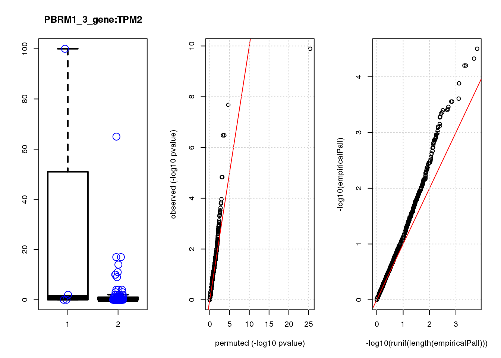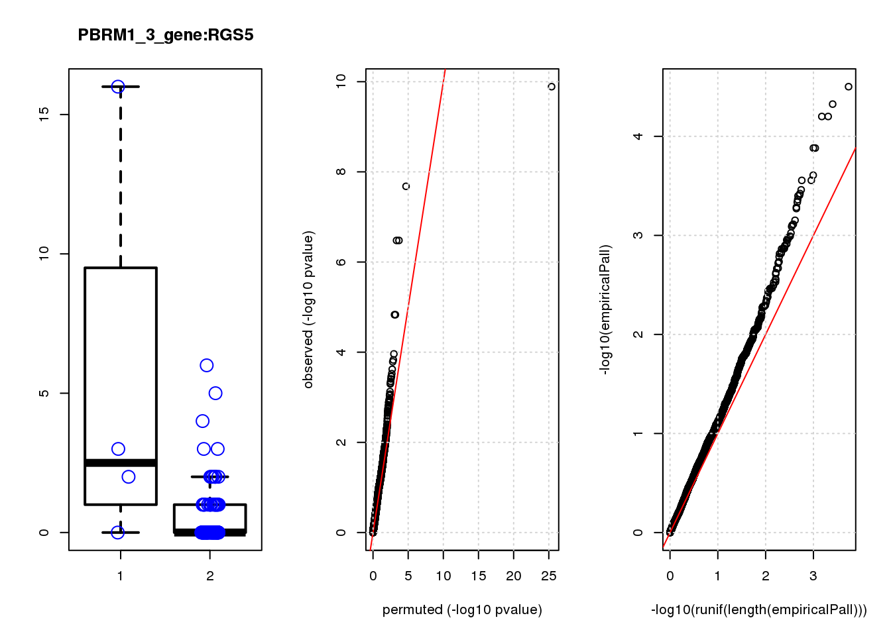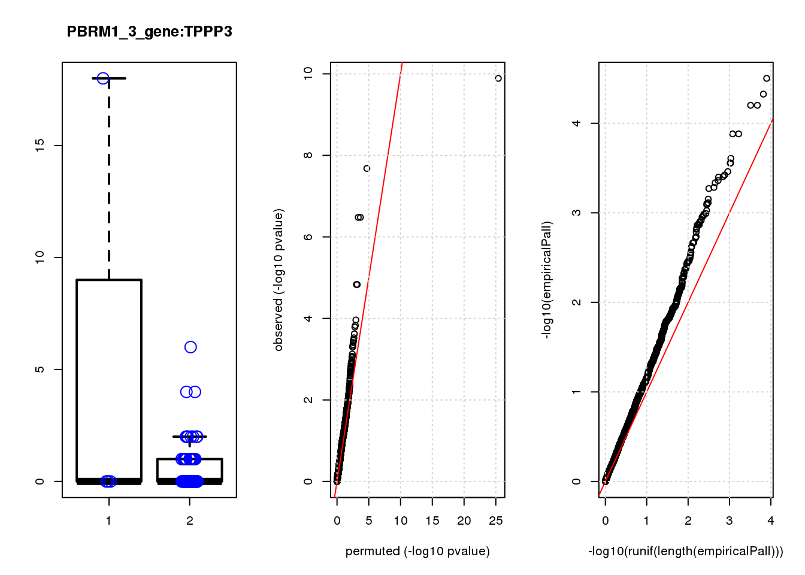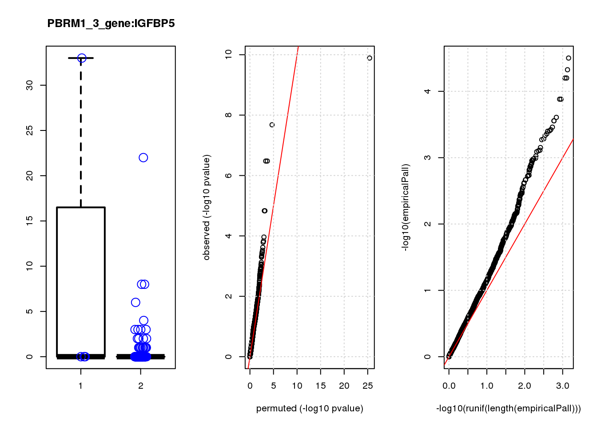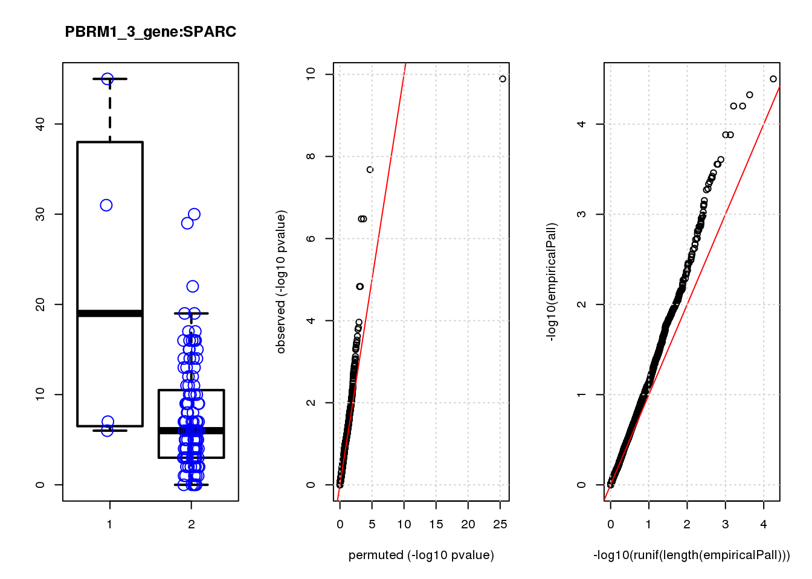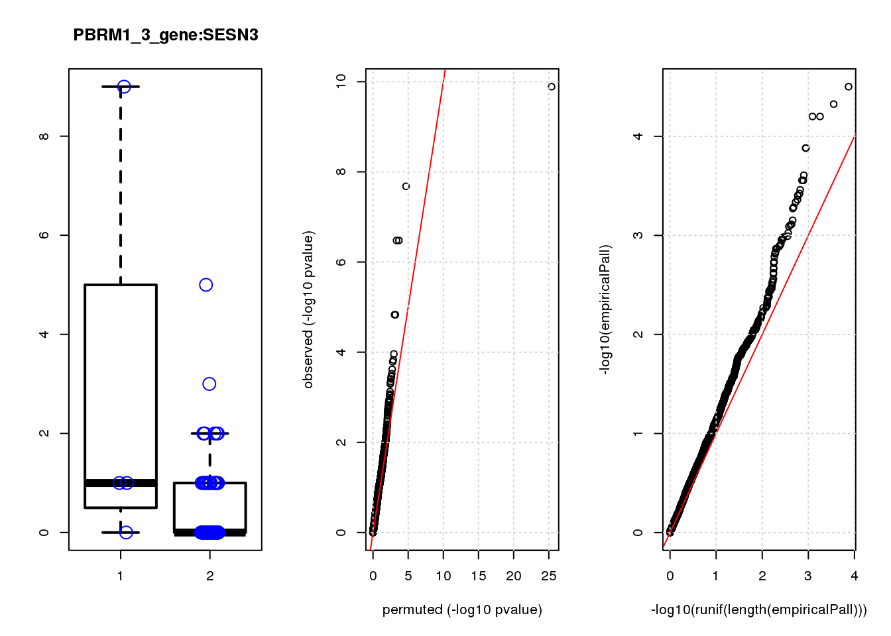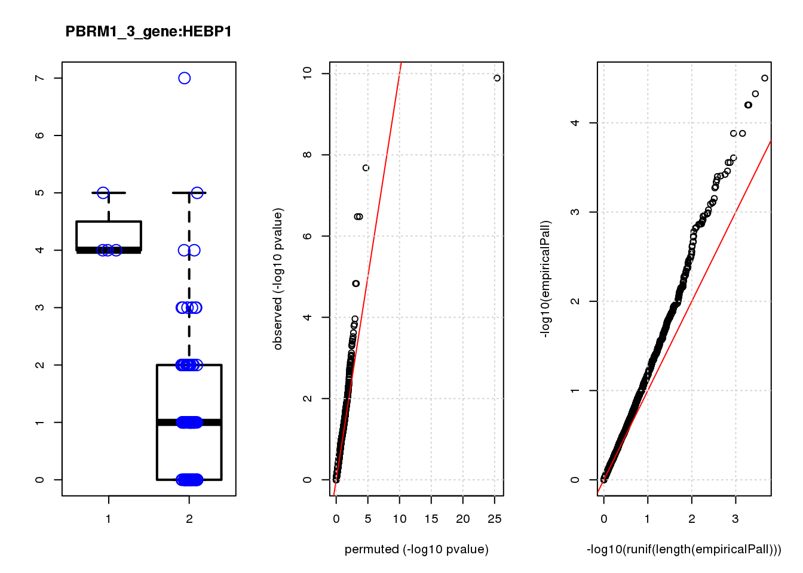
[1] "PCDHA123_1_gene_edgeR-qlf_Neg1.Rd"
logFC logCPM F PValue FDR empiricalP empiricalP.FDR #in_real
RGS5 1.40 6.7 27 5.4e-07 0.0034 0.00011 0.53 1
ARMCX6 0.90 7.0 17 5.7e-05 0.1800 0.00031 0.53 2
NUP58 -1.20 6.6 16 9.5e-05 0.2000 0.00041 0.53 3
GAP43 0.92 8.1 14 2.8e-04 0.2500 0.00070 0.53 4
PHLDA1 1.10 7.1 14 3.0e-04 0.2500 0.00072 0.53 5
PDLIM2 0.79 7.4 13 3.2e-04 0.2500 0.00075 0.53 6
DST 0.96 6.7 13 3.3e-04 0.2500 0.00075 0.53 7
FAM111B -1.20 6.5 13 3.6e-04 0.2500 0.00079 0.53 8
MYC -1.70 7.5 13 3.6e-04 0.2500 0.00080 0.53 9
SSR3 0.52 8.0 13 4.0e-04 0.2500 0.00083 0.53 10
1e-04 NA NA NA NA NA NA NA 3
1e-05 NA NA NA NA NA NA NA 1
1e-06 NA NA NA NA NA NA NA 1
1e-07 NA NA NA NA NA NA NA 0
1e-08 NA NA NA NA NA NA NA 0
1e-09 NA NA NA NA NA NA NA 0
1e-10 NA NA NA NA NA NA NA 0
#in_perm EmpiricalFDR
RGS5 0.700 0.70
ARMCX6 2.000 0.99
NUP58 2.600 0.87
GAP43 4.400 1.10
PHLDA1 4.600 0.92
PDLIM2 4.800 0.80
DST 4.800 0.68
FAM111B 5.000 0.63
MYC 5.100 0.56
SSR3 5.300 0.53
1e-04 2.700 0.90
1e-05 1.300 1.30
1e-06 0.770 0.77
1e-07 0.200 Inf
1e-08 0.067 Inf
1e-09 0.033 Inf
1e-10 0.033 Inf
[1] "PCDHA123_2_gene_edgeR-qlf_Neg1.Rd"
logFC logCPM F PValue FDR empiricalP empiricalP.FDR #in_real
MYC -3.40 7.3 43 3.8e-10 2.4e-06 0.00000 0.00 1
SNAPC1 1.20 6.7 17 5.9e-05 1.7e-01 0.00025 0.57 2
KCTD10 0.95 6.6 16 8.2e-05 1.7e-01 0.00031 0.57 3
CDCA7 -1.00 6.6 14 2.1e-04 3.3e-01 0.00057 0.57 4
CTGF 0.85 8.5 14 2.6e-04 3.3e-01 0.00064 0.57 5
MARCH7 0.85 6.6 13 5.6e-04 3.8e-01 0.00100 0.57 6
LASP1 0.83 6.8 12 5.7e-04 3.8e-01 0.00100 0.57 7
MSRA 0.87 6.6 12 5.9e-04 3.8e-01 0.00100 0.57 8
SPIN2B -1.00 6.4 14 6.1e-04 3.8e-01 0.00110 0.57 9
RACGAP1 0.88 6.6 12 6.3e-04 3.8e-01 0.00110 0.57 10
1e-04 NA NA NA NA NA NA NA 3
1e-05 NA NA NA NA NA NA NA 1
1e-06 NA NA NA NA NA NA NA 1
1e-07 NA NA NA NA NA NA NA 1
1e-08 NA NA NA NA NA NA NA 1
1e-09 NA NA NA NA NA NA NA 1
1e-10 NA NA NA NA NA NA NA 0
#in_perm EmpiricalFDR
MYC 0.000 0.000
SNAPC1 1.600 0.790
KCTD10 2.000 0.660
CDCA7 3.600 0.900
CTGF 4.100 0.820
MARCH7 6.300 1.100
LASP1 6.500 0.920
MSRA 6.500 0.820
SPIN2B 6.700 0.740
RACGAP1 6.800 0.680
1e-04 2.200 0.750
1e-05 0.640 0.640
1e-06 0.370 0.370
1e-07 0.230 0.230
1e-08 0.067 0.067
1e-09 0.033 0.033
1e-10 0.000 NaN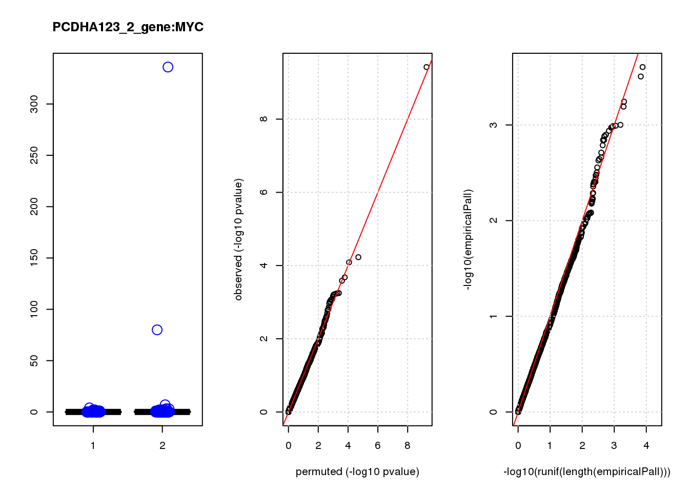
[1] "PCDHA123_3_gene_edgeR-qlf_Neg1.Rd"
logFC logCPM F PValue FDR empiricalP empiricalP.FDR #in_real
MYC -3.40 7.3 42 5.4e-10 3.4e-06 0.00001 0.065 1
SMG1 1.00 6.6 17 5.6e-05 1.8e-01 0.00027 0.610 2
STMN2 -1.80 7.1 16 9.9e-05 2.1e-01 0.00035 0.610 3
GPM6B 0.46 8.5 14 2.2e-04 2.7e-01 0.00054 0.610 4
NRDC -0.82 7.0 14 2.5e-04 2.7e-01 0.00057 0.610 5
PTPN11 0.84 6.6 14 2.6e-04 2.7e-01 0.00058 0.610 6
NUP214 -0.94 6.5 12 8.0e-04 7.0e-01 0.00130 1.000 7
HPCAL1 0.82 6.6 11 8.9e-04 7.0e-01 0.00130 1.000 8
MSRA 0.84 6.6 11 1.2e-03 8.6e-01 0.00180 1.000 9
EVA1B 0.82 6.6 10 1.5e-03 9.2e-01 0.00210 1.000 10
1e-04 NA NA NA NA NA NA NA 3
1e-05 NA NA NA NA NA NA NA 1
1e-06 NA NA NA NA NA NA NA 1
1e-07 NA NA NA NA NA NA NA 1
1e-08 NA NA NA NA NA NA NA 1
1e-09 NA NA NA NA NA NA NA 1
1e-10 NA NA NA NA NA NA NA 0
#in_perm EmpiricalFDR
MYC 0.065 0.065
SMG1 1.700 0.850
STMN2 2.200 0.740
GPM6B 3.400 0.850
NRDC 3.600 0.720
PTPN11 3.700 0.610
NUP214 8.000 1.100
HPCAL1 8.500 1.100
MSRA 11.000 1.200
EVA1B 13.000 1.300
1e-04 2.200 0.740
1e-05 0.750 0.750
1e-06 0.390 0.390
1e-07 0.160 0.160
1e-08 0.130 0.130
1e-09 0.065 0.065
1e-10 0.000 NaN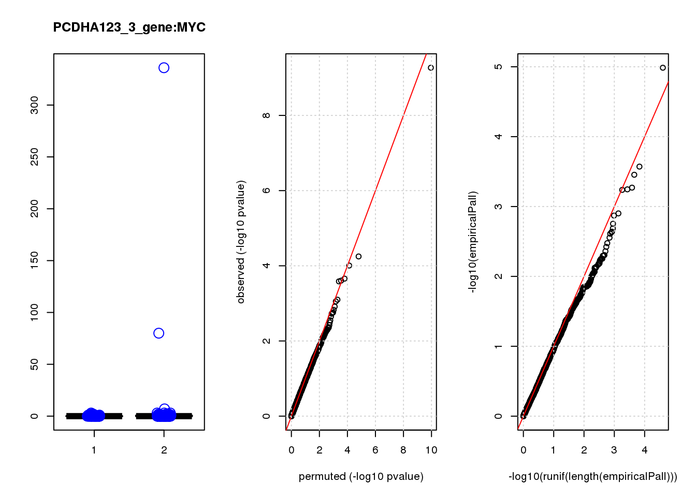
[1] "pos_SNAP91_2_gene_edgeR-qlf_Neg1.Rd"
logFC logCPM F PValue FDR empiricalP empiricalP.FDR
EDC3 2.2 6.6 10.0 0.0018 0.83 0.0014 1
GUF1 2.1 6.6 9.6 0.0023 0.83 0.0017 1
NHLRC3 2.1 6.7 9.5 0.0024 0.83 0.0017 1
DTX3 2.1 6.6 9.3 0.0027 0.83 0.0019 1
TDG -4.1 7.3 8.8 0.0035 0.83 0.0025 1
EFCC1 2.1 6.6 8.6 0.0039 0.83 0.0028 1
RP11-357C3.3 1.9 6.6 8.2 0.0048 0.83 0.0034 1
USP16 -4.0 7.2 7.9 0.0055 0.83 0.0039 1
RP11-329L6.2 -4.3 7.3 7.9 0.0056 0.83 0.0039 1
LLPH -4.0 7.2 7.7 0.0062 0.83 0.0043 1
1e-04 NA NA NA NA NA NA NA
1e-05 NA NA NA NA NA NA NA
1e-06 NA NA NA NA NA NA NA
1e-07 NA NA NA NA NA NA NA
1e-08 NA NA NA NA NA NA NA
1e-09 NA NA NA NA NA NA NA
1e-10 NA NA NA NA NA NA NA
#in_real #in_perm EmpiricalFDR
EDC3 1 8.90 8.9
GUF1 2 11.00 5.3
NHLRC3 3 11.00 3.6
DTX3 4 12.00 3.0
TDG 5 16.00 3.2
EFCC1 6 18.00 3.0
RP11-357C3.3 7 22.00 3.1
USP16 8 25.00 3.1
RP11-329L6.2 9 25.00 2.8
LLPH 10 27.00 2.7
1e-04 0 1.50 Inf
1e-05 0 0.70 Inf
1e-06 0 0.30 Inf
1e-07 0 0.17 Inf
1e-08 0 0.17 Inf
1e-09 0 0.17 Inf
1e-10 0 0.13 Inf
[1] "pos_SNAP91_3_gene_edgeR-qlf_Neg1.Rd"
logFC logCPM F PValue FDR empiricalP empiricalP.FDR #in_real
RGS5 1.80 6.7 29 2.3e-07 0.0014 3.1e-05 0.20 1
WDFY1 1.60 6.6 21 1.1e-05 0.0340 1.1e-04 0.35 2
THG1L 1.10 6.9 16 1.0e-04 0.2100 3.5e-04 0.70 3
MYC -3.10 7.5 15 1.6e-04 0.2100 5.1e-04 0.70 4
SLC25A17 -1.60 6.6 15 1.7e-04 0.2100 5.5e-04 0.70 5
LIN28B 1.00 6.7 12 7.0e-04 0.7400 1.4e-03 1.00 6
RSRP1 1.10 6.6 11 9.5e-04 0.8300 1.7e-03 1.00 7
PRSS23 0.77 8.2 11 1.1e-03 0.8300 1.8e-03 1.00 8
ARMC9 -1.50 6.5 11 1.2e-03 0.8400 2.0e-03 1.00 9
CAV1 1.20 7.3 11 1.3e-03 0.8400 2.2e-03 1.00 10
1e-04 NA NA NA NA NA NA NA 2
1e-05 NA NA NA NA NA NA NA 1
1e-06 NA NA NA NA NA NA NA 1
1e-07 NA NA NA NA NA NA NA 0
1e-08 NA NA NA NA NA NA NA 0
1e-09 NA NA NA NA NA NA NA 0
1e-10 NA NA NA NA NA NA NA 0
#in_perm EmpiricalFDR
RGS5 0.200 0.20
WDFY1 0.700 0.35
THG1L 2.200 0.73
MYC 3.300 0.81
SLC25A17 3.500 0.70
LIN28B 9.000 1.50
RSRP1 11.000 1.60
PRSS23 12.000 1.50
ARMC9 13.000 1.40
CAV1 14.000 1.40
1e-04 2.200 1.10
1e-05 0.700 0.70
1e-06 0.230 0.23
1e-07 0.130 Inf
1e-08 0.100 Inf
1e-09 0.100 Inf
1e-10 0.033 Inf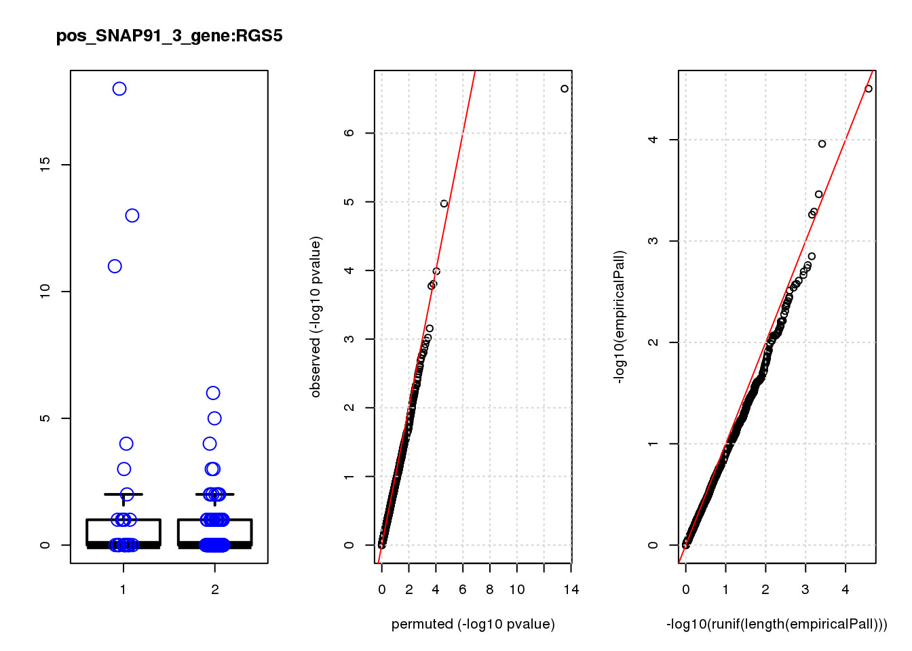
[1] "PPP1R16B_1_gene_edgeR-qlf_Neg1.Rd"
logFC logCPM F PValue FDR empiricalP empiricalP.FDR #in_real
MYC -2.50 7.4 20 1.6e-05 0.097 0.00027 0.74 1
ELMO1 -1.50 6.4 20 3.1e-05 0.097 0.00031 0.74 2
CAV1 1.30 7.4 16 1.0e-04 0.210 0.00049 0.74 3
ZNF273 -1.30 6.4 16 2.1e-04 0.330 0.00064 0.74 4
IGFBP5 -1.60 6.6 14 2.8e-04 0.360 0.00081 0.74 5
POLR3A -1.20 6.5 13 4.1e-04 0.430 0.00098 0.74 6
SRPK2 0.65 7.4 12 7.1e-04 0.600 0.00140 0.74 7
KCTD10 0.92 6.6 12 7.6e-04 0.600 0.00140 0.74 8
NEFM 1.30 7.8 11 1.1e-03 0.620 0.00190 0.74 9
RAD54L -1.10 6.5 11 1.1e-03 0.620 0.00200 0.74 10
1e-04 NA NA NA NA NA NA NA 2
1e-05 NA NA NA NA NA NA NA 0
1e-06 NA NA NA NA NA NA NA 0
1e-07 NA NA NA NA NA NA NA 0
1e-08 NA NA NA NA NA NA NA 0
1e-09 NA NA NA NA NA NA NA 0
1e-10 NA NA NA NA NA NA NA 0
#in_perm EmpiricalFDR
MYC 1.70 1.70
ELMO1 2.00 0.99
CAV1 3.10 1.00
ZNF273 4.10 1.00
IGFBP5 5.20 1.00
POLR3A 6.20 1.00
SRPK2 8.70 1.20
KCTD10 9.00 1.10
NEFM 12.00 1.40
RAD54L 12.00 1.20
1e-04 3.10 1.60
1e-05 1.60 Inf
1e-06 0.74 Inf
1e-07 0.37 Inf
1e-08 0.27 Inf
1e-09 0.17 Inf
1e-10 0.10 Inf
[1] "PPP1R16B_2_gene_edgeR-qlf_Neg1.Rd"
logFC logCPM F PValue FDR empiricalP empiricalP.FDR #in_real
DDX10 1.50 6.7 20 1.1e-05 0.072 0.00012 0.77 1
HIST1H1C 1.60 6.6 17 5.0e-05 0.150 0.00032 0.79 2
MYC -2.90 7.5 17 7.0e-05 0.150 0.00037 0.79 3
CCNE2 -1.60 6.5 13 3.6e-04 0.500 0.00096 1.00 4
PMP22 -1.50 6.5 13 5.1e-04 0.500 0.00130 1.00 5
EZR 0.83 7.5 12 5.4e-04 0.500 0.00130 1.00 6
GADD45G 1.60 7.9 12 5.6e-04 0.500 0.00140 1.00 7
TMX3 -1.30 6.5 12 6.4e-04 0.500 0.00150 1.00 8
ZNF512 0.95 6.7 11 9.4e-04 0.670 0.00190 1.00 9
DBNDD1 -1.30 6.5 11 1.1e-03 0.720 0.00220 1.00 10
1e-04 NA NA NA NA NA NA NA 3
1e-05 NA NA NA NA NA NA NA 0
1e-06 NA NA NA NA NA NA NA 0
1e-07 NA NA NA NA NA NA NA 0
1e-08 NA NA NA NA NA NA NA 0
1e-09 NA NA NA NA NA NA NA 0
1e-10 NA NA NA NA NA NA NA 0
#in_perm EmpiricalFDR
DDX10 0.77 0.77
HIST1H1C 2.00 1.00
MYC 2.40 0.79
CCNE2 6.10 1.50
PMP22 8.10 1.60
EZR 8.40 1.40
GADD45G 8.60 1.20
TMX3 9.60 1.20
ZNF512 12.00 1.30
DBNDD1 14.00 1.40
1e-04 2.80 0.92
1e-05 0.77 Inf
1e-06 0.43 Inf
1e-07 0.27 Inf
1e-08 0.23 Inf
1e-09 0.17 Inf
1e-10 0.17 Inf
[1] "PPP1R16B_3_gene_edgeR-qlf_Neg1.Rd"
logFC logCPM F PValue FDR empiricalP empiricalP.FDR #in_real
MYC -3.20 7.5 21 7.5e-06 0.047 8.9e-05 0.56 1
EIF4ENIF1 -1.60 6.5 19 7.0e-05 0.220 2.6e-04 0.62 2
PROM1 -1.60 6.5 16 1.9e-04 0.300 4.8e-04 0.62 3
FAM83D -1.60 6.5 15 1.9e-04 0.300 4.8e-04 0.62 4
VGF -1.80 6.7 14 2.7e-04 0.320 5.6e-04 0.62 5
ASCL1 1.30 7.2 14 3.0e-04 0.320 5.9e-04 0.62 6
LIX1 -1.40 6.5 13 5.4e-04 0.440 9.2e-04 0.73 7
PTRF -1.70 7.0 12 6.1e-04 0.440 1.0e-03 0.73 8
SMG1 0.99 6.6 12 6.3e-04 0.440 1.0e-03 0.73 9
SNAPC2 0.83 7.1 11 1.0e-03 0.520 1.5e-03 0.75 10
1e-04 NA NA NA NA NA NA NA 2
1e-05 NA NA NA NA NA NA NA 1
1e-06 NA NA NA NA NA NA NA 0
1e-07 NA NA NA NA NA NA NA 0
1e-08 NA NA NA NA NA NA NA 0
1e-09 NA NA NA NA NA NA NA 0
1e-10 NA NA NA NA NA NA NA 0
#in_perm EmpiricalFDR
MYC 0.560 0.56
EIF4ENIF1 1.700 0.83
PROM1 3.000 1.00
FAM83D 3.000 0.75
VGF 3.600 0.71
ASCL1 3.700 0.62
LIX1 5.800 0.83
PTRF 6.400 0.80
SMG1 6.600 0.73
SNAPC2 9.800 0.98
1e-04 2.000 1.00
1e-05 0.630 0.63
1e-06 0.230 Inf
1e-07 0.130 Inf
1e-08 0.066 Inf
1e-09 0.066 Inf
1e-10 0.033 Inf
[1] "RERE_1_gene_edgeR-qlf_Neg1.Rd"
logFC logCPM F PValue FDR empiricalP empiricalP.FDR #in_real
TSC22D4 -1.60 6.6 23 7.4e-06 0.047 0.00017 0.90 1
MYC -2.40 7.5 18 3.2e-05 0.100 0.00031 0.90 2
DBNDD1 -1.50 6.5 18 6.9e-05 0.150 0.00043 0.90 3
STMN2 -2.00 7.2 14 2.4e-04 0.390 0.00076 0.98 4
EIF1AD -1.30 6.5 14 3.1e-04 0.390 0.00085 0.98 5
TPX2 0.96 7.1 12 5.3e-04 0.490 0.00110 0.98 6
ASGR1 -1.20 6.7 12 6.2e-04 0.490 0.00130 0.98 7
SNX27 0.85 6.8 12 6.2e-04 0.490 0.00130 0.98 8
NDC80 0.97 6.8 12 7.4e-04 0.520 0.00140 0.98 9
ISG20L2 -0.92 6.9 11 9.2e-04 0.560 0.00170 0.98 10
1e-04 NA NA NA NA NA NA NA 3
1e-05 NA NA NA NA NA NA NA 1
1e-06 NA NA NA NA NA NA NA 0
1e-07 NA NA NA NA NA NA NA 0
1e-08 NA NA NA NA NA NA NA 0
1e-09 NA NA NA NA NA NA NA 0
1e-10 NA NA NA NA NA NA NA 0
#in_perm EmpiricalFDR
TSC22D4 1.10 1.10
MYC 2.00 0.99
DBNDD1 2.70 0.90
STMN2 4.80 1.20
EIF1AD 5.40 1.10
TPX2 7.20 1.20
ASGR1 8.00 1.10
SNX27 8.10 1.00
NDC80 9.10 1.00
ISG20L2 11.00 1.10
1e-04 3.10 1.00
1e-05 1.20 1.20
1e-06 0.64 Inf
1e-07 0.47 Inf
1e-08 0.37 Inf
1e-09 0.23 Inf
1e-10 0.10 Inf
[1] "RERE_2_gene_edgeR-qlf_Neg1.Rd"
logFC logCPM F PValue FDR empiricalP empiricalP.FDR #in_real
MYC -3.20 7.5 26 6.9e-07 0.0044 5.3e-05 0.33 1
USMG5 -0.46 8.7 15 1.8e-04 0.5600 5.2e-04 1.00 2
KDELR2 -0.61 8.0 13 3.2e-04 0.6500 7.5e-04 1.00 3
FBXO5 -1.20 6.9 12 5.2e-04 0.6500 1.1e-03 1.00 4
KCTD10 0.98 6.6 12 5.6e-04 0.6500 1.1e-03 1.00 5
MRPL23 -0.69 7.5 12 7.3e-04 0.6500 1.3e-03 1.00 6
TAGLN3 1.20 7.5 12 7.6e-04 0.6500 1.3e-03 1.00 7
HIST1H1C 1.10 6.6 12 8.2e-04 0.6500 1.4e-03 1.00 8
ZNF48 0.84 6.7 11 1.1e-03 0.7500 1.7e-03 1.00 9
N4BP2 0.86 6.7 10 1.4e-03 0.7700 2.2e-03 1.00 10
1e-04 NA NA NA NA NA NA NA 1
1e-05 NA NA NA NA NA NA NA 1
1e-06 NA NA NA NA NA NA NA 1
1e-07 NA NA NA NA NA NA NA 0
1e-08 NA NA NA NA NA NA NA 0
1e-09 NA NA NA NA NA NA NA 0
1e-10 NA NA NA NA NA NA NA 0
#in_perm EmpiricalFDR
MYC 0.330 0.33
USMG5 3.300 1.70
KDELR2 4.700 1.60
FBXO5 6.700 1.70
KCTD10 7.200 1.40
MRPL23 8.300 1.40
TAGLN3 8.500 1.20
HIST1H1C 8.900 1.10
ZNF48 11.000 1.20
N4BP2 14.000 1.40
1e-04 2.200 2.20
1e-05 0.800 0.80
1e-06 0.430 0.43
1e-07 0.130 Inf
1e-08 0.067 Inf
1e-09 0.067 Inf
1e-10 0.067 Inf
[1] "RERE_3_gene_edgeR-qlf_Neg1.Rd"
logFC logCPM F PValue FDR empiricalP empiricalP.FDR #in_real
MAFF -2.50 6.6 19 2.3e-05 0.14 0.00027 1 1
AC093323.3 -1.70 6.6 16 1.1e-04 0.32 0.00061 1 2
GLIPR1 1.40 6.7 15 1.5e-04 0.32 0.00076 1 3
BRCA1 1.10 6.7 12 6.0e-04 0.93 0.00170 1 4
SLC2A3 1.10 6.6 11 9.5e-04 0.93 0.00230 1 5
HIPK2 0.92 7.0 11 1.1e-03 0.93 0.00270 1 6
TADA1 -1.60 6.5 13 1.1e-03 0.93 0.00270 1 7
METTL8 -1.50 6.6 10 1.4e-03 0.93 0.00310 1 8
CADM1 1.00 7.0 10 1.4e-03 0.93 0.00310 1 9
STMN2 -2.40 7.3 10 1.5e-03 0.93 0.00310 1 10
1e-04 NA NA NA NA NA NA NA 1
1e-05 NA NA NA NA NA NA NA 0
1e-06 NA NA NA NA NA NA NA 0
1e-07 NA NA NA NA NA NA NA 0
1e-08 NA NA NA NA NA NA NA 0
1e-09 NA NA NA NA NA NA NA 0
1e-10 NA NA NA NA NA NA NA 0
#in_perm EmpiricalFDR
MAFF 1.70 1.7
AC093323.3 3.90 1.9
GLIPR1 4.80 1.6
BRCA1 11.00 2.7
SLC2A3 15.00 2.9
HIPK2 17.00 2.8
TADA1 17.00 2.4
METTL8 20.00 2.4
CADM1 20.00 2.2
STMN2 20.00 2.0
1e-04 3.80 3.8
1e-05 1.20 Inf
1e-06 0.50 Inf
1e-07 0.37 Inf
1e-08 0.27 Inf
1e-09 0.20 Inf
1e-10 0.17 Inf
[1] "SETD1A_1st_exon_1_gene_edgeR-qlf_Neg1.Rd"
logFC logCPM F PValue FDR empiricalP empiricalP.FDR #in_real
EMP3 -2.6 6.7 19 1.9e-05 0.12 0.00031 1 1
ZNF33A -2.0 6.6 17 5.9e-05 0.19 0.00047 1 2
DLL3 -3.1 7.1 15 1.6e-04 0.29 0.00071 1 3
KLHL8 -1.9 6.4 16 2.0e-04 0.29 0.00083 1 4
AGPAT2 -1.9 6.6 14 2.3e-04 0.29 0.00090 1 5
JAKMIP2 -1.7 6.6 13 4.7e-04 0.50 0.00130 1 6
SCPEP1 1.2 6.6 12 5.8e-04 0.50 0.00150 1 7
SKA3 1.2 6.6 12 6.3e-04 0.50 0.00160 1 8
TRIM26 -1.7 6.5 13 9.3e-04 0.61 0.00210 1 9
SNAPC3 1.1 6.8 11 9.9e-04 0.61 0.00220 1 10
1e-04 NA NA NA NA NA NA NA 2
1e-05 NA NA NA NA NA NA NA 0
1e-06 NA NA NA NA NA NA NA 0
1e-07 NA NA NA NA NA NA NA 0
1e-08 NA NA NA NA NA NA NA 0
1e-09 NA NA NA NA NA NA NA 0
1e-10 NA NA NA NA NA NA NA 0
#in_perm EmpiricalFDR
EMP3 2.00 2.0
ZNF33A 3.00 1.5
DLL3 4.50 1.5
KLHL8 5.30 1.3
AGPAT2 5.70 1.1
JAKMIP2 8.60 1.4
SCPEP1 9.80 1.4
SKA3 10.00 1.3
TRIM26 13.00 1.5
SNAPC3 14.00 1.4
1e-04 3.70 1.9
1e-05 1.70 Inf
1e-06 0.97 Inf
1e-07 0.73 Inf
1e-08 0.67 Inf
1e-09 0.63 Inf
1e-10 0.53 Inf
[1] "SETD1A_1st_exon_2_gene_edgeR-qlf_Neg1.Rd"
logFC logCPM F PValue FDR empiricalP empiricalP.FDR #in_real
SERPINE2 1.60 6.7 25 1.3e-06 0.0046 0.00016 0.29 1
RGS5 1.60 6.7 25 1.5e-06 0.0046 0.00016 0.29 2
RAB13 0.86 8.0 22 4.9e-06 0.0100 0.00019 0.29 3
KCTD10 1.40 6.6 21 7.3e-06 0.0110 0.00022 0.29 4
CALD1 1.10 8.1 21 8.7e-06 0.0110 0.00024 0.29 5
MMP2 1.30 6.5 19 1.9e-05 0.0200 0.00030 0.29 6
TPM2 1.60 7.3 19 2.2e-05 0.0200 0.00031 0.29 7
ASRGL1 -1.50 7.0 18 4.4e-05 0.0350 0.00040 0.29 8
TAGLN 1.30 9.3 17 6.0e-05 0.0390 0.00047 0.29 9
S100A16 1.30 6.7 17 6.1e-05 0.0390 0.00048 0.29 10
1e-04 NA NA NA NA NA NA NA 12
1e-05 NA NA NA NA NA NA NA 5
1e-06 NA NA NA NA NA NA NA 0
1e-07 NA NA NA NA NA NA NA 0
1e-08 NA NA NA NA NA NA NA 0
1e-09 NA NA NA NA NA NA NA 0
1e-10 NA NA NA NA NA NA NA 0
#in_perm EmpiricalFDR
SERPINE2 1.00 1.00
RGS5 1.00 0.51
RAB13 1.20 0.41
KCTD10 1.40 0.35
CALD1 1.50 0.30
MMP2 1.90 0.32
TPM2 2.00 0.29
ASRGL1 2.50 0.32
TAGLN 3.00 0.33
S100A16 3.00 0.30
1e-04 3.90 0.32
1e-05 1.60 0.32
1e-06 0.95 Inf
1e-07 0.47 Inf
1e-08 0.44 Inf
1e-09 0.37 Inf
1e-10 0.27 Inf
[1] "SETD1A_1st_exon_3_gene_edgeR-qlf_Neg1.Rd"
logFC logCPM F PValue FDR empiricalP empiricalP.FDR #in_real
UBB -4.0 9.5 17 5.4e-05 0.35 0.00020 0.66 1
FXYD6 -3.5 8.0 14 2.5e-04 0.69 0.00036 0.66 2
BEX2 2.3 6.9 13 4.0e-04 0.69 0.00050 0.66 3
MSTO1 2.2 6.5 13 4.7e-04 0.69 0.00055 0.66 4
PTN 2.0 8.0 12 5.4e-04 0.69 0.00064 0.66 5
FTH1 1.3 12.0 11 1.1e-03 0.74 0.00110 0.66 6
COX11 -4.1 7.3 11 1.1e-03 0.74 0.00110 0.66 7
CST3 -2.1 8.2 11 1.2e-03 0.74 0.00110 0.66 8
TMSB10 1.0 12.0 11 1.4e-03 0.74 0.00120 0.66 9
MGRN1 2.0 6.6 11 1.4e-03 0.74 0.00130 0.66 10
1e-04 NA NA NA NA NA NA NA 1
1e-05 NA NA NA NA NA NA NA 0
1e-06 NA NA NA NA NA NA NA 0
1e-07 NA NA NA NA NA NA NA 0
1e-08 NA NA NA NA NA NA NA 0
1e-09 NA NA NA NA NA NA NA 0
1e-10 NA NA NA NA NA NA NA 0
#in_perm EmpiricalFDR
UBB 1.20 1.20
FXYD6 2.30 1.10
BEX2 3.10 1.00
MSTO1 3.50 0.88
PTN 4.00 0.81
FTH1 6.70 1.10
COX11 6.90 0.98
CST3 7.20 0.90
TMSB10 7.90 0.88
MGRN1 8.10 0.81
1e-04 1.60 1.60
1e-05 0.50 Inf
1e-06 0.17 Inf
1e-07 0.10 Inf
1e-08 0.00 NaN
1e-09 0.00 NaN
1e-10 0.00 NaN
[1] "STAT6_1_gene_edgeR-qlf_Neg1.Rd"
logFC logCPM F PValue FDR empiricalP empiricalP.FDR #in_real
MYC -3.60 7.5 17.0 5.1e-05 0.32 0.00021 1 1
IGFBP5 -2.40 6.6 15.0 1.8e-04 0.57 0.00039 1 2
DHODH 1.20 6.6 12.0 5.8e-04 1.00 0.00094 1 3
EMP3 -1.80 6.7 12.0 6.5e-04 1.00 0.00100 1 4
SOX21 1.00 6.7 10.0 1.6e-03 1.00 0.00210 1 5
CCDC138 0.98 6.6 10.0 1.8e-03 1.00 0.00240 1 6
PDCD11 -1.20 6.7 10.0 1.8e-03 1.00 0.00240 1 7
MYO6 -1.30 6.6 9.7 2.2e-03 1.00 0.00290 1 8
EIF2D -1.10 6.8 9.5 2.3e-03 1.00 0.00310 1 9
RAB28 0.89 6.9 9.4 2.5e-03 1.00 0.00330 1 10
1e-04 NA NA NA NA NA NA NA 1
1e-05 NA NA NA NA NA NA NA 0
1e-06 NA NA NA NA NA NA NA 0
1e-07 NA NA NA NA NA NA NA 0
1e-08 NA NA NA NA NA NA NA 0
1e-09 NA NA NA NA NA NA NA 0
1e-10 NA NA NA NA NA NA NA 0
#in_perm EmpiricalFDR
MYC 1.400 1.4
IGFBP5 2.500 1.2
DHODH 6.000 2.0
EMP3 6.500 1.6
SOX21 13.000 2.7
CCDC138 15.000 2.5
PDCD11 16.000 2.2
MYO6 18.000 2.3
EIF2D 19.000 2.2
RAB28 21.000 2.1
1e-04 1.900 1.9
1e-05 0.660 Inf
1e-06 0.430 Inf
1e-07 0.270 Inf
1e-08 0.100 Inf
1e-09 0.033 Inf
1e-10 0.033 Inf
[1] "STAT6_2_gene_edgeR-qlf_Neg1.Rd"
logFC logCPM F PValue FDR empiricalP empiricalP.FDR #in_real
TP53I3 1.30 7.1 18 3.6e-05 0.23 0.00030 0.82 1
IMPA2 -1.40 6.8 16 1.0e-04 0.29 0.00044 0.82 2
CYFIP2 0.97 6.9 14 2.0e-04 0.29 0.00068 0.82 3
ZNF561 -1.40 6.5 14 2.0e-04 0.29 0.00068 0.82 4
DHFR -0.94 7.7 14 2.3e-04 0.29 0.00073 0.82 5
LTBP1 -1.50 6.5 17 2.9e-04 0.31 0.00083 0.82 6
STMN2 -2.10 7.2 13 3.6e-04 0.32 0.00091 0.82 7
CDKN1C 1.40 7.1 12 6.1e-04 0.40 0.00130 0.87 8
CCNH 0.89 6.7 12 6.5e-04 0.40 0.00140 0.87 9
LAMTOR5 0.49 8.4 12 6.7e-04 0.40 0.00150 0.87 10
1e-04 NA NA NA NA NA NA NA 1
1e-05 NA NA NA NA NA NA NA 0
1e-06 NA NA NA NA NA NA NA 0
1e-07 NA NA NA NA NA NA NA 0
1e-08 NA NA NA NA NA NA NA 0
1e-09 NA NA NA NA NA NA NA 0
1e-10 NA NA NA NA NA NA NA 0
#in_perm EmpiricalFDR
TP53I3 1.900 1.90
IMPA2 2.800 1.40
CYFIP2 4.300 1.40
ZNF561 4.300 1.10
DHFR 4.600 0.92
LTBP1 5.200 0.87
STMN2 5.800 0.82
CDKN1C 8.500 1.10
CCNH 9.200 1.00
LAMTOR5 9.400 0.94
1e-04 2.800 2.80
1e-05 1.200 Inf
1e-06 0.470 Inf
1e-07 0.130 Inf
1e-08 0.100 Inf
1e-09 0.100 Inf
1e-10 0.034 Inf
[1] "STAT6_3_gene_edgeR-qlf_Neg1.Rd"
logFC logCPM F PValue FDR empiricalP empiricalP.FDR #in_real
MYC -2.40 7.4 22 5.7e-06 0.036 0.00020 1 1
GADD45G 1.60 8.1 14 2.0e-04 0.570 0.00069 1 2
MPZL1 0.80 6.8 13 3.5e-04 0.570 0.00100 1 3
TACC3 -1.10 6.9 13 3.6e-04 0.570 0.00100 1 4
LIX1 1.00 6.7 12 5.1e-04 0.640 0.00120 1 5
CCNDBP1 -0.98 6.7 11 8.7e-04 0.750 0.00170 1 6
PLK1 -1.10 7.2 11 9.1e-04 0.750 0.00180 1 7
TUBA1C -1.20 6.8 11 1.1e-03 0.750 0.00200 1 8
OLMALINC -1.10 6.5 11 1.2e-03 0.750 0.00220 1 9
NFKBIE -1.00 6.5 11 1.2e-03 0.750 0.00220 1 10
1e-04 NA NA NA NA NA NA NA 1
1e-05 NA NA NA NA NA NA NA 1
1e-06 NA NA NA NA NA NA NA 0
1e-07 NA NA NA NA NA NA NA 0
1e-08 NA NA NA NA NA NA NA 0
1e-09 NA NA NA NA NA NA NA 0
1e-10 NA NA NA NA NA NA NA 0
#in_perm EmpiricalFDR
MYC 1.30 1.3
GADD45G 4.40 2.2
MPZL1 6.40 2.1
TACC3 6.40 1.6
LIX1 7.80 1.6
CCNDBP1 11.00 1.8
PLK1 11.00 1.6
TUBA1C 13.00 1.6
OLMALINC 14.00 1.5
NFKBIE 14.00 1.4
1e-04 3.00 3.0
1e-05 1.40 1.4
1e-06 0.85 Inf
1e-07 0.59 Inf
1e-08 0.26 Inf
1e-09 0.13 Inf
1e-10 0.13 Inf
[1] "TCF4-ITF2_1_gene_edgeR-qlf_Neg1.Rd"
logFC logCPM F PValue FDR empiricalP empiricalP.FDR #in_real
TSPAN15 -1.50 6.7 18 2.8e-05 0.17 0.00019 0.97 1
SLC20A2 -1.20 6.6 14 2.5e-04 0.54 0.00060 0.97 2
IDI1 -0.62 8.2 13 3.6e-04 0.54 0.00076 0.97 3
CLK3 0.89 6.8 13 4.1e-04 0.54 0.00083 0.97 4
SCD5 -1.20 6.6 14 4.2e-04 0.54 0.00084 0.97 5
FAM111B -1.20 6.5 12 5.4e-04 0.58 0.00110 0.97 6
GPATCH11 -1.20 6.5 16 7.7e-04 0.70 0.00130 0.97 7
HMBS -0.72 7.2 11 9.1e-04 0.72 0.00150 0.97 8
GPI -0.77 7.1 11 1.0e-03 0.73 0.00160 0.97 9
SEC16A -1.10 6.6 12 1.2e-03 0.74 0.00170 0.97 10
1e-04 NA NA NA NA NA NA NA 1
1e-05 NA NA NA NA NA NA NA 0
1e-06 NA NA NA NA NA NA NA 0
1e-07 NA NA NA NA NA NA NA 0
1e-08 NA NA NA NA NA NA NA 0
1e-09 NA NA NA NA NA NA NA 0
1e-10 NA NA NA NA NA NA NA 0
#in_perm EmpiricalFDR
TSPAN15 1.200 1.2
SLC20A2 3.800 1.9
IDI1 4.800 1.6
CLK3 5.300 1.3
SCD5 5.400 1.1
FAM111B 6.700 1.1
GPATCH11 8.300 1.2
HMBS 9.200 1.2
GPI 10.000 1.1
SEC16A 11.000 1.1
1e-04 2.200 2.2
1e-05 0.770 Inf
1e-06 0.340 Inf
1e-07 0.270 Inf
1e-08 0.200 Inf
1e-09 0.067 Inf
1e-10 0.000 NaN
[1] "TCF4-ITF2_2_gene_edgeR-qlf_Neg1.Rd"
logFC logCPM F PValue FDR empiricalP empiricalP.FDR #in_real
MYC -3.00 7.5 25 1.2e-06 0.0079 0.00011 0.55 1
RGS5 1.40 6.7 20 1.4e-05 0.0440 0.00020 0.55 2
STMN2 -2.40 7.2 18 3.4e-05 0.0720 0.00026 0.55 3
ATPIF1 0.54 8.3 15 1.2e-04 0.1900 0.00040 0.63 4
CMTR2 -1.30 6.5 16 3.4e-04 0.4300 0.00079 0.86 5
GADD45G -1.90 7.4 13 4.9e-04 0.4500 0.00095 0.86 6
JAKMIP2 -1.20 6.6 13 5.0e-04 0.4500 0.00095 0.86 7
FOS 1.00 6.9 12 6.4e-04 0.5000 0.00110 0.87 8
KCTD10 0.92 6.6 11 1.2e-03 0.7200 0.00170 0.90 9
PLSCR1 -1.00 6.6 11 1.2e-03 0.7200 0.00170 0.90 10
1e-04 NA NA NA NA NA NA NA 3
1e-05 NA NA NA NA NA NA NA 1
1e-06 NA NA NA NA NA NA NA 0
1e-07 NA NA NA NA NA NA NA 0
1e-08 NA NA NA NA NA NA NA 0
1e-09 NA NA NA NA NA NA NA 0
1e-10 NA NA NA NA NA NA NA 0
#in_perm EmpiricalFDR
MYC 0.67 0.67
RGS5 1.30 0.63
STMN2 1.60 0.55
ATPIF1 2.50 0.63
CMTR2 5.00 1.00
GADD45G 6.00 1.00
JAKMIP2 6.00 0.86
FOS 7.00 0.87
KCTD10 10.00 1.20
PLSCR1 11.00 1.10
1e-04 2.40 0.80
1e-05 1.10 1.10
1e-06 0.60 Inf
1e-07 0.23 Inf
1e-08 0.20 Inf
1e-09 0.13 Inf
1e-10 0.13 Inf
[1] "TCF4-ITF2_3_gene_edgeR-qlf_Neg1.Rd"
logFC logCPM F PValue FDR empiricalP empiricalP.FDR #in_real
SNAPC1 3.1 6.8 57 2.6e-12 1.7e-08 1.6e-05 0.10 1
CLN8 -2.8 6.7 14 3.1e-04 5.8e-01 6.9e-04 0.94 2
SLC7A11 1.7 6.8 13 4.9e-04 5.8e-01 9.0e-04 0.94 3
RNF25 -2.7 6.7 12 5.6e-04 5.8e-01 1.0e-03 0.94 4
MRPS28 -2.4 6.8 12 5.9e-04 5.8e-01 1.0e-03 0.94 5
CHMP4A -2.6 6.6 12 6.6e-04 5.8e-01 1.1e-03 0.94 6
DIO3 1.5 7.3 12 7.6e-04 5.8e-01 1.2e-03 0.94 7
PTRH1 -2.5 6.6 12 8.1e-04 5.8e-01 1.3e-03 0.94 8
TWF1 1.4 6.7 12 8.2e-04 5.8e-01 1.3e-03 0.94 9
CCDC160 -2.4 6.6 11 1.1e-03 6.4e-01 1.8e-03 1.00 10
1e-04 NA NA NA NA NA NA NA 1
1e-05 NA NA NA NA NA NA NA 1
1e-06 NA NA NA NA NA NA NA 1
1e-07 NA NA NA NA NA NA NA 1
1e-08 NA NA NA NA NA NA NA 1
1e-09 NA NA NA NA NA NA NA 1
1e-10 NA NA NA NA NA NA NA 1
#in_perm EmpiricalFDR
SNAPC1 0.10 0.10
CLN8 4.40 2.20
SLC7A11 5.70 1.90
RNF25 6.30 1.60
MRPS28 6.60 1.30
CHMP4A 7.10 1.20
DIO3 7.90 1.10
PTRH1 8.40 1.00
TWF1 8.50 0.94
CCDC160 11.00 1.10
1e-04 2.10 2.10
1e-05 1.00 1.00
1e-06 0.67 0.67
1e-07 0.43 0.43
1e-08 0.23 0.23
1e-09 0.20 0.20
1e-10 0.20 0.20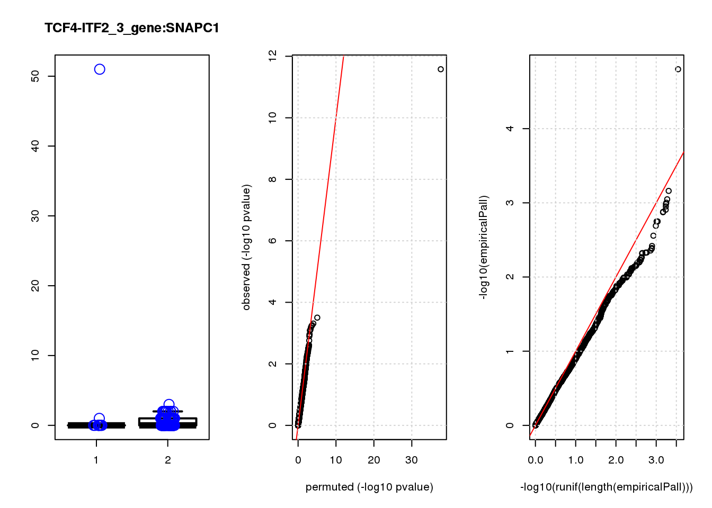
[1] "TRANK1_1_gene_edgeR-qlf_Neg1.Rd"
logFC logCPM F PValue FDR empiricalP empiricalP.FDR #in_real
HMGCS1 1.6 8.1 12.0 0.00068 0.86 0.00099 1 1
CKAP2L 2.3 6.6 11.0 0.00100 0.86 0.00130 1 2
SDF2L1 2.0 7.3 11.0 0.00120 0.86 0.00150 1 3
INIP 1.9 7.0 11.0 0.00140 0.86 0.00160 1 4
PYCR1 2.3 7.0 10.0 0.00170 0.86 0.00200 1 5
STX2 2.2 6.5 9.9 0.00200 0.86 0.00220 1 6
MRPS34 -1.8 8.4 8.9 0.00320 0.86 0.00310 1 7
HSPB11 -4.4 7.4 8.6 0.00380 0.86 0.00350 1 8
EEF2KMT 1.9 6.8 8.4 0.00440 0.86 0.00390 1 9
KRT8 2.4 7.2 8.3 0.00450 0.86 0.00400 1 10
1e-04 NA NA NA NA NA NA NA 0
1e-05 NA NA NA NA NA NA NA 0
1e-06 NA NA NA NA NA NA NA 0
1e-07 NA NA NA NA NA NA NA 0
1e-08 NA NA NA NA NA NA NA 0
1e-09 NA NA NA NA NA NA NA 0
1e-10 NA NA NA NA NA NA NA 0
#in_perm EmpiricalFDR
HMGCS1 6.30 6.3
CKAP2L 8.50 4.3
SDF2L1 9.20 3.1
INIP 10.00 2.6
PYCR1 13.00 2.6
STX2 14.00 2.3
MRPS34 20.00 2.8
HSPB11 22.00 2.8
EEF2KMT 25.00 2.8
KRT8 26.00 2.6
1e-04 2.60 Inf
1e-05 1.50 Inf
1e-06 0.64 Inf
1e-07 0.40 Inf
1e-08 0.27 Inf
1e-09 0.17 Inf
1e-10 0.10 Inf
[1] "TRANK1_2_gene_edgeR-qlf_Neg1.Rd"
logFC logCPM F PValue FDR empiricalP empiricalP.FDR #in_real
CDKN1C 1.70 7.0 14.0 0.00020 1 0.00059 1 1
MYC -3.80 7.6 13.0 0.00032 1 0.00074 1 2
LOXL1 -1.90 6.6 12.0 0.00081 1 0.00140 1 3
IGF1R 1.20 6.6 11.0 0.00110 1 0.00180 1 4
UGP2 -1.20 7.2 10.0 0.00150 1 0.00220 1 5
STMN2 -2.70 7.3 9.6 0.00220 1 0.00310 1 6
ALDH1B1 1.10 6.6 10.0 0.00230 1 0.00320 1 7
BTBD7 -1.60 6.5 11.0 0.00290 1 0.00370 1 8
FZD3 0.66 7.6 9.1 0.00290 1 0.00380 1 9
PIM1 -1.50 6.6 9.1 0.00300 1 0.00390 1 10
1e-04 NA NA NA NA NA NA NA 0
1e-05 NA NA NA NA NA NA NA 0
1e-06 NA NA NA NA NA NA NA 0
1e-07 NA NA NA NA NA NA NA 0
1e-08 NA NA NA NA NA NA NA 0
1e-09 NA NA NA NA NA NA NA 0
1e-10 NA NA NA NA NA NA NA 0
#in_perm EmpiricalFDR
CDKN1C 3.70 3.7
MYC 4.70 2.3
LOXL1 8.90 3.0
IGF1R 11.00 2.8
UGP2 14.00 2.8
STMN2 20.00 3.3
ALDH1B1 20.00 2.9
BTBD7 24.00 3.0
FZD3 24.00 2.6
PIM1 25.00 2.5
1e-04 2.40 Inf
1e-05 1.10 Inf
1e-06 0.66 Inf
1e-07 0.49 Inf
1e-08 0.33 Inf
1e-09 0.30 Inf
1e-10 0.20 Inf
[1] "TRANK1_3_gene_edgeR-qlf_Neg1.Rd"
logFC logCPM F PValue FDR empiricalP empiricalP.FDR #in_real
MYC -3.20 7.3 40 1.6e-09 9.9e-06 5.3e-06 0.033 1
NUP155 -1.10 6.4 16 1.5e-04 4.8e-01 5.2e-04 1.000 2
DOLK 0.84 6.6 13 4.5e-04 8.6e-01 9.9e-04 1.000 3
CLK3 0.76 6.8 12 6.9e-04 8.6e-01 1.3e-03 1.000 4
KCTD10 0.84 6.6 12 7.2e-04 8.6e-01 1.3e-03 1.000 5
RPUSD1 -0.78 6.8 12 8.1e-04 8.6e-01 1.4e-03 1.000 6
NAB2 -0.94 6.6 11 1.0e-03 9.4e-01 1.7e-03 1.000 7
NDC80 0.89 6.7 11 1.4e-03 9.9e-01 2.0e-03 1.000 8
RND3 0.77 6.9 10 1.6e-03 9.9e-01 2.3e-03 1.000 9
RPRD1A 0.64 6.9 10 1.8e-03 9.9e-01 2.5e-03 1.000 10
1e-04 NA NA NA NA NA NA NA 1
1e-05 NA NA NA NA NA NA NA 1
1e-06 NA NA NA NA NA NA NA 1
1e-07 NA NA NA NA NA NA NA 1
1e-08 NA NA NA NA NA NA NA 1
1e-09 NA NA NA NA NA NA NA 0
1e-10 NA NA NA NA NA NA NA 0
#in_perm EmpiricalFDR
MYC 0.033 0.033
NUP155 3.300 1.600
DOLK 6.300 2.100
CLK3 8.100 2.000
KCTD10 8.300 1.700
RPUSD1 8.900 1.500
NAB2 11.000 1.500
NDC80 13.000 1.600
RND3 15.000 1.600
RPRD1A 16.000 1.600
1e-04 2.600 2.600
1e-05 0.870 0.870
1e-06 0.440 0.440
1e-07 0.270 0.270
1e-08 0.067 0.067
1e-09 0.033 Inf
1e-10 0.000 NaN
[1] "UBE2Q2P1_1_gene_edgeR-qlf_Neg1.Rd"
logFC logCPM F PValue FDR empiricalP empiricalP.FDR #in_real
JAG1 2.20 6.9 29 2.0e-07 0.0013 4.3e-05 0.22 1
SERPINH1 1.10 7.8 17 5.5e-05 0.1500 1.8e-04 0.22 2
TPM2 1.90 7.2 16 9.5e-05 0.1500 2.5e-04 0.22 3
NQO1 1.70 7.4 16 9.7e-05 0.1500 2.5e-04 0.22 4
HSP90AA1 0.72 10.0 15 1.3e-04 0.1600 2.8e-04 0.22 5
SHPRH -2.60 6.6 15 2.0e-04 0.1600 3.4e-04 0.22 6
SGO1 -2.60 6.8 14 2.4e-04 0.1600 3.6e-04 0.22 7
PPP1CB 1.20 7.4 14 2.5e-04 0.1600 3.7e-04 0.22 8
RGS5 1.60 6.6 14 2.7e-04 0.1600 4.1e-04 0.22 9
COX7A2 0.56 9.4 14 2.8e-04 0.1600 4.1e-04 0.22 10
1e-04 NA NA NA NA NA NA NA 4
1e-05 NA NA NA NA NA NA NA 1
1e-06 NA NA NA NA NA NA NA 1
1e-07 NA NA NA NA NA NA NA 0
1e-08 NA NA NA NA NA NA NA 0
1e-09 NA NA NA NA NA NA NA 0
1e-10 NA NA NA NA NA NA NA 0
#in_perm EmpiricalFDR
JAG1 0.270 0.27
SERPINH1 1.100 0.56
TPM2 1.600 0.52
NQO1 1.600 0.39
HSP90AA1 1.800 0.35
SHPRH 2.100 0.35
SGO1 2.300 0.33
PPP1CB 2.400 0.30
RGS5 2.600 0.29
COX7A2 2.600 0.26
1e-04 1.600 0.39
1e-05 0.640 0.64
1e-06 0.410 0.41
1e-07 0.270 Inf
1e-08 0.140 Inf
1e-09 0.068 Inf
1e-10 0.068 Inf
[1] "UBE2Q2P1_2_gene_edgeR-qlf_Neg1.Rd"
logFC logCPM F PValue FDR empiricalP empiricalP.FDR #in_real
TERF2IP 1.60 7.4 16 8.5e-05 0.33 0.00032 0.87 1
AFF4 1.80 6.7 16 1.0e-04 0.33 0.00037 0.87 2
SPOCK1 1.80 6.7 15 1.9e-04 0.41 0.00049 0.87 3
MALAT1 0.93 14.0 13 3.8e-04 0.60 0.00077 0.87 4
UFSP2 -2.50 6.9 12 6.0e-04 0.64 0.00097 0.87 5
SFRP1 -3.80 7.0 12 8.6e-04 0.64 0.00130 0.87 6
PPP1R2 1.40 6.9 11 8.8e-04 0.64 0.00130 0.87 7
ATP5B 0.73 9.6 11 9.1e-04 0.64 0.00130 0.87 8
C1orf21 -2.50 6.9 11 1.1e-03 0.64 0.00150 0.87 9
IDH3A 1.50 6.7 11 1.3e-03 0.64 0.00170 0.87 10
1e-04 NA NA NA NA NA NA NA 1
1e-05 NA NA NA NA NA NA NA 0
1e-06 NA NA NA NA NA NA NA 0
1e-07 NA NA NA NA NA NA NA 0
1e-08 NA NA NA NA NA NA NA 0
1e-09 NA NA NA NA NA NA NA 0
1e-10 NA NA NA NA NA NA NA 0
#in_perm EmpiricalFDR
TERF2IP 2.000 2.0
AFF4 2.400 1.2
SPOCK1 3.100 1.0
MALAT1 4.900 1.2
UFSP2 6.100 1.2
SFRP1 8.000 1.3
PPP1R2 8.200 1.2
ATP5B 8.300 1.0
C1orf21 9.300 1.0
IDH3A 11.000 1.1
1e-04 2.300 2.3
1e-05 0.930 Inf
1e-06 0.430 Inf
1e-07 0.300 Inf
1e-08 0.170 Inf
1e-09 0.100 Inf
1e-10 0.067 Inf
[1] "UBE2Q2P1_3_gene_edgeR-qlf_Neg1.Rd"
logFC logCPM F PValue FDR empiricalP empiricalP.FDR #in_real
NAV1 1.5 6.8 16 7.5e-05 0.48 0.00041 1 1
GNG12 -2.7 6.6 12 8.4e-04 1.00 0.00190 1 2
A2M 1.5 6.6 11 8.9e-04 1.00 0.00200 1 3
METTL8 -2.5 6.6 11 9.7e-04 1.00 0.00220 1 4
ARFIP1 -2.3 6.5 11 1.1e-03 1.00 0.00240 1 5
CCNH 1.3 6.7 11 1.1e-03 1.00 0.00250 1 6
ZNHIT2 -2.3 6.5 11 1.3e-03 1.00 0.00290 1 7
CEBPD -2.5 6.6 11 1.4e-03 1.00 0.00310 1 8
REEP2 -2.2 6.9 10 1.6e-03 1.00 0.00330 1 9
CDKN1B -2.0 6.8 10 1.9e-03 1.00 0.00400 1 10
1e-04 NA NA NA NA NA NA NA 1
1e-05 NA NA NA NA NA NA NA 0
1e-06 NA NA NA NA NA NA NA 0
1e-07 NA NA NA NA NA NA NA 0
1e-08 NA NA NA NA NA NA NA 0
1e-09 NA NA NA NA NA NA NA 0
1e-10 NA NA NA NA NA NA NA 0
#in_perm EmpiricalFDR
NAV1 2.600 2.6
GNG12 12.000 6.1
A2M 13.000 4.3
METTL8 14.000 3.5
ARFIP1 15.000 3.0
CCNH 16.000 2.6
ZNHIT2 18.000 2.6
CEBPD 19.000 2.4
REEP2 21.000 2.3
CDKN1B 25.000 2.5
1e-04 2.900 2.9
1e-05 0.940 Inf
1e-06 0.440 Inf
1e-07 0.370 Inf
1e-08 0.300 Inf
1e-09 0.200 Inf
1e-10 0.067 Inf
[1] "VPS45_1_gene_edgeR-qlf_Neg1.Rd"
logFC logCPM F PValue FDR empiricalP empiricalP.FDR #in_real
A2M 3.0 6.8 77 2.0e-15 1.3e-11 5.3e-06 0.033 1
IFITM3 2.2 8.9 39 3.0e-09 9.6e-06 2.1e-05 0.067 2
PTN 2.0 8.2 31 9.6e-08 2.0e-04 4.8e-05 0.080 3
GPM6B 1.2 8.5 30 1.4e-07 2.3e-04 5.3e-05 0.080 4
CLU 1.8 7.6 29 2.8e-07 3.5e-04 6.3e-05 0.080 5
SULF2 1.7 6.7 19 2.0e-05 2.1e-02 2.3e-04 0.200 6
WLS 1.5 7.2 19 2.7e-05 2.4e-02 2.6e-04 0.200 7
TTC17 1.6 6.6 18 3.0e-05 2.4e-02 2.6e-04 0.200 8
CTSC 1.6 6.9 18 3.8e-05 2.7e-02 3.0e-04 0.200 9
GAP43 1.6 8.1 18 4.4e-05 2.8e-02 3.2e-04 0.200 10
1e-04 NA NA NA NA NA NA NA 12
1e-05 NA NA NA NA NA NA NA 5
1e-06 NA NA NA NA NA NA NA 5
1e-07 NA NA NA NA NA NA NA 3
1e-08 NA NA NA NA NA NA NA 2
1e-09 NA NA NA NA NA NA NA 1
1e-10 NA NA NA NA NA NA NA 1
#in_perm EmpiricalFDR
A2M 0.033 0.033
IFITM3 0.130 0.067
PTN 0.300 0.100
GPM6B 0.330 0.084
CLU 0.400 0.080
SULF2 1.400 0.240
WLS 1.600 0.230
TTC17 1.700 0.210
CTSC 1.900 0.210
GAP43 2.000 0.200
1e-04 2.700 0.230
1e-05 1.100 0.220
1e-06 0.600 0.120
1e-07 0.300 0.100
1e-08 0.230 0.120
1e-09 0.130 0.130
1e-10 0.067 0.067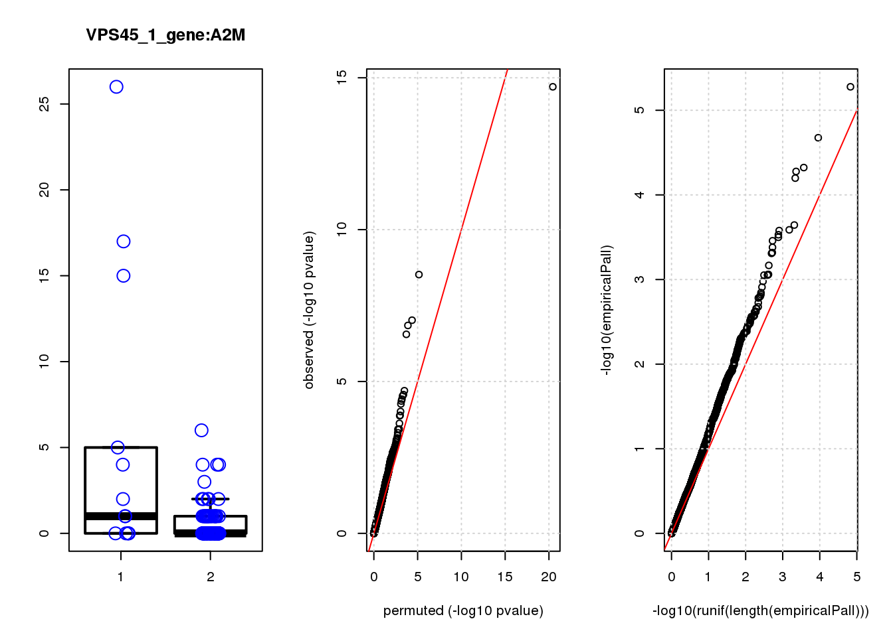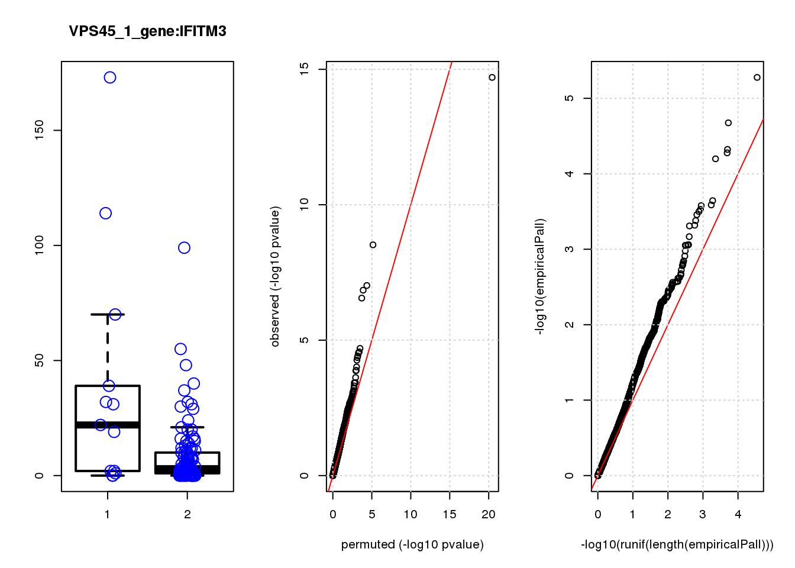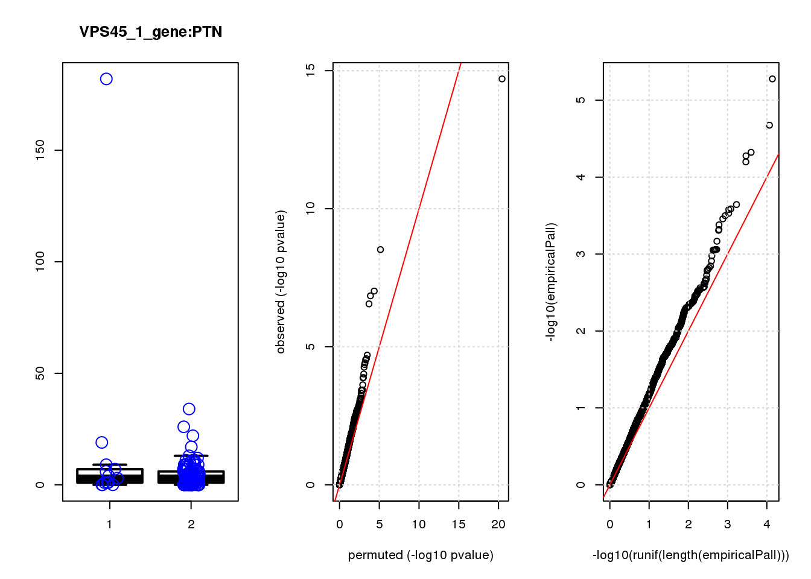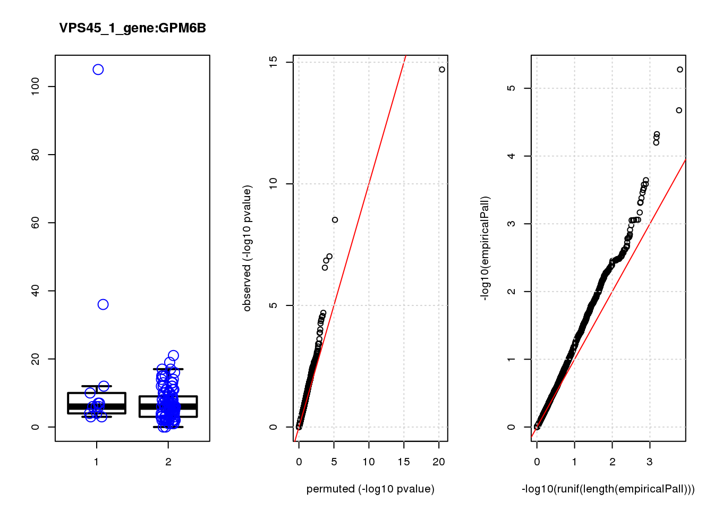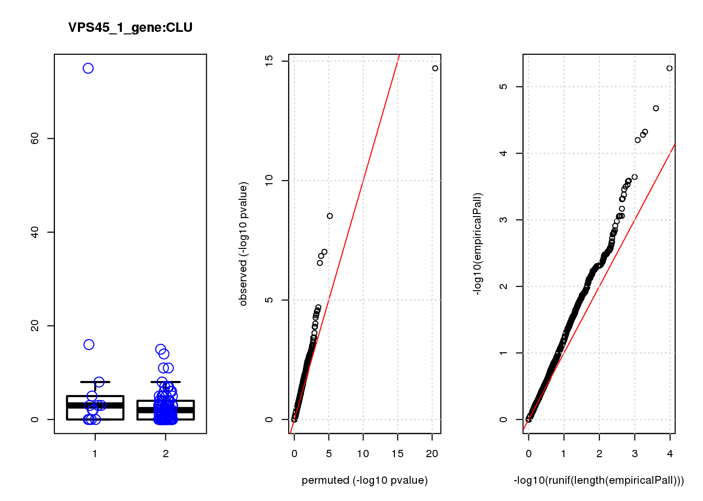
[1] "VPS45_2_gene_edgeR-qlf_Neg1.Rd"
logFC logCPM F PValue FDR empiricalP empiricalP.FDR #in_real
A2M 1.30 6.8 21 7.6e-06 0.048 0.00012 0.47 1
SLF2 -1.20 6.5 23 1.5e-05 0.048 0.00015 0.47 2
NINJ1 -0.97 6.9 17 4.4e-05 0.094 0.00028 0.60 3
TRMT2A -0.93 6.6 14 2.2e-04 0.350 0.00068 0.78 4
CMTM8 -1.00 6.6 13 4.0e-04 0.350 0.00098 0.78 5
GAP43 0.86 8.2 13 4.0e-04 0.350 0.00098 0.78 6
SUMO3 -0.48 7.9 13 4.0e-04 0.350 0.00099 0.78 7
QRICH1 0.84 6.6 13 4.5e-04 0.350 0.00100 0.78 8
KCTD10 0.82 6.6 12 5.4e-04 0.380 0.00110 0.78 9
RACGAP1 0.89 6.6 12 7.4e-04 0.470 0.00140 0.87 10
1e-04 NA NA NA NA NA NA NA 3
1e-05 NA NA NA NA NA NA NA 1
1e-06 NA NA NA NA NA NA NA 0
1e-07 NA NA NA NA NA NA NA 0
1e-08 NA NA NA NA NA NA NA 0
1e-09 NA NA NA NA NA NA NA 0
1e-10 NA NA NA NA NA NA NA 0
#in_perm EmpiricalFDR
A2M 0.77 0.77
SLF2 0.93 0.47
NINJ1 1.80 0.60
TRMT2A 4.30 1.10
CMTM8 6.20 1.20
GAP43 6.20 1.00
SUMO3 6.30 0.90
QRICH1 6.40 0.80
KCTD10 7.00 0.78
RACGAP1 8.90 0.89
1e-04 2.80 0.92
1e-05 0.83 0.83
1e-06 0.43 Inf
1e-07 0.27 Inf
1e-08 0.20 Inf
1e-09 0.20 Inf
1e-10 0.13 Inf
[1] "VPS45_3_gene_edgeR-qlf_Neg1.Rd"
logFC logCPM F PValue FDR empiricalP empiricalP.FDR #in_real
NKAIN4 2.1 7.0 18 3.6e-05 0.23 0.00021 0.74 1
PCGF2 -3.5 6.9 16 9.2e-05 0.29 0.00032 0.74 2
UCK2 -2.9 6.7 13 4.2e-04 0.54 0.00074 0.74 3
JUNB 1.8 6.7 13 4.7e-04 0.54 0.00077 0.74 4
GNPDA1 1.7 6.9 13 5.2e-04 0.54 0.00083 0.74 5
TXNRD1 1.6 7.3 12 5.9e-04 0.54 0.00091 0.74 6
NADK -2.8 6.7 12 7.5e-04 0.54 0.00100 0.74 7
AKAP8 -2.9 6.7 12 8.3e-04 0.54 0.00110 0.74 8
CTDSP2 -2.9 6.7 11 9.7e-04 0.54 0.00130 0.74 9
NDUFAF6 -2.7 6.7 11 1.1e-03 0.54 0.00150 0.74 10
1e-04 NA NA NA NA NA NA NA 2
1e-05 NA NA NA NA NA NA NA 0
1e-06 NA NA NA NA NA NA NA 0
1e-07 NA NA NA NA NA NA NA 0
1e-08 NA NA NA NA NA NA NA 0
1e-09 NA NA NA NA NA NA NA 0
1e-10 NA NA NA NA NA NA NA 0
#in_perm EmpiricalFDR
NKAIN4 1.30 1.30
PCGF2 2.00 1.00
UCK2 4.70 1.60
JUNB 4.90 1.20
GNPDA1 5.20 1.00
TXNRD1 5.80 0.97
NADK 6.60 0.95
AKAP8 7.10 0.89
CTDSP2 8.10 0.90
NDUFAF6 9.80 0.98
1e-04 2.10 1.00
1e-05 0.83 Inf
1e-06 0.53 Inf
1e-07 0.43 Inf
1e-08 0.27 Inf
1e-09 0.17 Inf
1e-10 0.13 InfUsing all cells except the ones with targeted gRNA as controls
source("code/empiricalFDR.R")
pbins <- 10** (-4:-10)
for (gRNAfile in list.files("data/gRNA_edgeR-QLF/", "*edgeR-qlf_Neg2.Rd")){
print(gRNAfile)
gRNA <- strsplit(gRNAfile, "_edgeR")[[1]][1]
gRNAlocus <- strsplit(gRNA, split = "_")[[1]][1]
load(paste0("data/gRNA_edgeR-QLF/", gRNAfile))
# fdrmetricall <- empiricalFDR(res2$table$PValue, res2$table$PValue, unlist(lapply(permres2, function(x) x$table$PValue)))
# empiricalPall <- empiricalPvalue(res2$table$PValue, unlist(lapply(permres2, function(x) x$table$PValue)))
# empiricalPfdrall <- p.adjust(empiricalPall, method="BH")
# resEmpiricalp <- cbind(res2$table, fdrmetricall,empiricalPall,empiricalPfdrall)
# save(resEmpiricalp, file=paste0("data/gRNA_edgeR-QLF/", gRNA,"_edgeR-qlf_Neg2_Empricialp.Rd"))
load(paste0("data/gRNA_edgeR-QLF/", gRNA,"_edgeR-qlf_Neg2_Empricialp.Rd"))
fdrmetrical <- resEmpiricalp[,6:8]
empiricalPall <- resEmpiricalp[,9]
empiricalPfdrall <- resEmpiricalp[,10]
outpvalues <- c(res2$table[1:10,"PValue"], pbins)
outpbins <- matrix(NA, nrow=length(pbins), ncol=dim(res2$table)[2])
rownames(outpbins) <- pbins
colnames(outpbins) <- colnames(res2$table)
outm <- rbind(res2$table[1:10,], outpbins)
fdrmetric <- empiricalFDR(outpvalues, res2$table$PValue, unlist(lapply(permres2, function(x) x$table$PValue)))
empiricalP <- c(empiricalPall[1:10], rep(NA,length(pbins)))
empiricalP.FDR <- c(empiricalPfdrall[1:10], rep(NA,length(pbins)))
outm <- cbind(outm,empiricalP,empiricalP.FDR, fdrmetric)
outm$logFC <- -outm$logFC
print(signif(outm,2))
plotgn <- rownames(outm[1:10,][outm[1:10, "EmpiricalFDR"] <0.2,])
if (length(plotgn)!=0){
for (gn in plotgn){
gcount <- dm[gn, gRNAdm0[gRNA,] >0 & colSums(gRNAdm0[rownames(gRNAdm0) != gRNA,]) == 0]
ncount2 <- dm[gn, colnames(dm1dfagg)[dm1dfagg[gRNAlocus,] == 0]]
a <- rbind(cbind(gcount,1),cbind(ncount2,2))
colnames(a) <- c("count","categ")
par(mfrow=c(1,3))
boxplot(count ~categ, data = a, lwd = 2, main=paste(gRNA, gn, sep=":"), outcol="white")
stripchart(count ~categ, data=a, vertical = TRUE, method = "jitter", add = TRUE, pch = 21, cex=2, col = 'blue')
qqplot( -log10(unlist(lapply(permres2, function(x) x$table$PValue))),-log10(res2$table$PValue), xlab="permuted (-log10 pvalue)", ylab="observed (-log10 pvalue)")
abline(a=0, b=1, col="red")
grid()
qqplot(-log10(runif(length(empiricalPall))),-log10(empiricalPall))
abline(a=0, b=1, col="red")
grid()
}
}
}[1] "BAG5_1_gene_edgeR-qlf_Neg2.Rd"
logFC logCPM F PValue FDR empiricalP empiricalP.FDR #in_real
LARP1 -0.85 7.3 13 0.00025 0.44 0.00069 0.88 1
CCND1 -0.92 8.2 13 0.00027 0.44 0.00071 0.88 2
ARPC3 -0.45 8.5 13 0.00028 0.44 0.00071 0.88 3
FAXC -1.50 6.4 14 0.00028 0.44 0.00071 0.88 4
CNOT11 -1.10 6.7 12 0.00052 0.66 0.00100 0.88 5
PCF11 -1.20 6.6 12 0.00068 0.67 0.00120 0.88 6
USP36 -1.30 6.4 12 0.00080 0.67 0.00140 0.88 7
SBK1 -1.30 6.5 11 0.00086 0.67 0.00140 0.88 8
TTC17 -1.20 6.5 11 0.00097 0.67 0.00150 0.88 9
RMDN1 -1.00 6.7 11 0.00110 0.67 0.00170 0.88 10
1e-04 NA NA NA NA NA NA NA 0
1e-05 NA NA NA NA NA NA NA 0
1e-06 NA NA NA NA NA NA NA 0
1e-07 NA NA NA NA NA NA NA 0
1e-08 NA NA NA NA NA NA NA 0
1e-09 NA NA NA NA NA NA NA 0
1e-10 NA NA NA NA NA NA NA 0
#in_perm EmpiricalFDR
LARP1 4.30 4.3
CCND1 4.50 2.2
ARPC3 4.50 1.5
FAXC 4.50 1.1
CNOT11 6.50 1.3
PCF11 7.70 1.3
USP36 8.60 1.2
SBK1 9.10 1.1
TTC17 9.70 1.1
RMDN1 11.00 1.1
1e-04 2.70 Inf
1e-05 1.10 Inf
1e-06 0.67 Inf
1e-07 0.50 Inf
1e-08 0.30 Inf
1e-09 0.20 Inf
1e-10 0.13 Inf
[1] "BAG5_2_gene_edgeR-qlf_Neg2.Rd"
logFC logCPM F PValue FDR empiricalP empiricalP.FDR #in_real
RAB32 -1.60 6.6 13 0.00036 0.57 0.00084 0.81 1
RPL14 -0.28 11.0 12 0.00045 0.57 0.00100 0.81 2
MIAT 1.20 7.0 12 0.00050 0.57 0.00110 0.81 3
FKBP5 -1.40 6.4 12 0.00051 0.57 0.00110 0.81 4
RPS23 -0.31 12.0 12 0.00058 0.57 0.00120 0.81 5
NIN 0.86 6.7 12 0.00060 0.57 0.00130 0.81 6
ADAT1 0.89 6.4 12 0.00063 0.57 0.00130 0.81 7
DLL3 1.20 7.0 11 0.00110 0.70 0.00190 0.81 8
RPL35A -0.25 12.0 11 0.00120 0.70 0.00200 0.81 9
RPL31 -0.31 11.0 10 0.00140 0.70 0.00230 0.81 10
1e-04 NA NA NA NA NA NA NA 0
1e-05 NA NA NA NA NA NA NA 0
1e-06 NA NA NA NA NA NA NA 0
1e-07 NA NA NA NA NA NA NA 0
1e-08 NA NA NA NA NA NA NA 0
1e-09 NA NA NA NA NA NA NA 0
1e-10 NA NA NA NA NA NA NA 0
#in_perm EmpiricalFDR
RAB32 5.300 5.3
RPL14 6.600 3.3
MIAT 7.100 2.4
FKBP5 7.100 1.8
RPS23 7.700 1.5
NIN 8.100 1.3
ADAT1 8.400 1.2
DLL3 12.000 1.5
RPL35A 13.000 1.4
RPL31 15.000 1.5
1e-04 2.200 Inf
1e-05 0.730 Inf
1e-06 0.430 Inf
1e-07 0.230 Inf
1e-08 0.170 Inf
1e-09 0.067 Inf
1e-10 0.033 Inf
[1] "BAG5_3_gene_edgeR-qlf_Neg2.Rd"
logFC logCPM F PValue FDR empiricalP empiricalP.FDR
DFFA 0.82 7.0 17 3.7e-05 0.23 0.00016 0.79
ASCL1 -2.20 7.1 14 2.4e-04 0.74 0.00045 0.79
ZYG11B -1.40 6.4 13 4.2e-04 0.74 0.00067 0.79
CDKN1A -1.60 8.1 11 7.6e-04 0.74 0.00098 0.79
MED4 -0.68 7.3 11 8.8e-04 0.74 0.00110 0.79
DLL1 -2.10 6.9 11 9.8e-04 0.74 0.00110 0.79
LAMTOR5 -0.49 8.3 11 1.0e-03 0.74 0.00110 0.79
RP11-220I1.1 -1.30 6.4 11 1.1e-03 0.74 0.00120 0.79
TIGAR -1.20 6.8 11 1.1e-03 0.74 0.00120 0.79
BIN3 -1.00 6.7 11 1.2e-03 0.74 0.00130 0.79
1e-04 NA NA NA NA NA NA NA
1e-05 NA NA NA NA NA NA NA
1e-06 NA NA NA NA NA NA NA
1e-07 NA NA NA NA NA NA NA
1e-08 NA NA NA NA NA NA NA
1e-09 NA NA NA NA NA NA NA
1e-10 NA NA NA NA NA NA NA
#in_real #in_perm EmpiricalFDR
DFFA 1 1.000 1.00
ASCL1 2 2.800 1.40
ZYG11B 3 4.200 1.40
CDKN1A 4 6.200 1.60
MED4 5 6.600 1.30
DLL1 6 7.100 1.20
LAMTOR5 7 7.100 1.00
RP11-220I1.1 8 7.600 0.95
TIGAR 9 7.800 0.86
BIN3 10 7.900 0.79
1e-04 1 1.700 1.70
1e-05 0 0.700 Inf
1e-06 0 0.270 Inf
1e-07 0 0.100 Inf
1e-08 0 0.067 Inf
1e-09 0 0.067 Inf
1e-10 0 0.067 Inf
[1] "BCL11B_1_gene_edgeR-qlf_Neg2.Rd"
logFC logCPM F PValue FDR empiricalP empiricalP.FDR #in_real
MLXIP -2.4 6.4 13.0 0.00037 1 0.00067 0.97 1
ZCCHC8 -2.4 6.4 13.0 0.00053 1 0.00089 0.97 2
POMGNT2 -2.3 6.4 12.0 0.00067 1 0.00100 0.97 3
UBR7 -2.3 6.4 12.0 0.00077 1 0.00120 0.97 4
ATF7IP2 -2.3 6.4 11.0 0.00095 1 0.00130 0.97 5
CADM4 1.2 6.5 11.0 0.00098 1 0.00140 0.97 6
ZHX1 -2.2 6.4 11.0 0.00130 1 0.00170 0.97 7
SFT2D2 -2.2 6.4 11.0 0.00150 1 0.00190 0.97 8
KIAA0895L -2.1 6.4 11.0 0.00180 1 0.00220 0.97 9
FARS2 1.1 6.5 9.5 0.00200 1 0.00240 0.97 10
1e-04 NA NA NA NA NA NA NA 0
1e-05 NA NA NA NA NA NA NA 0
1e-06 NA NA NA NA NA NA NA 0
1e-07 NA NA NA NA NA NA NA 0
1e-08 NA NA NA NA NA NA NA 0
1e-09 NA NA NA NA NA NA NA 0
1e-10 NA NA NA NA NA NA NA 0
#in_perm EmpiricalFDR
MLXIP 4.200 4.2
ZCCHC8 5.600 2.8
POMGNT2 6.500 2.2
UBR7 7.300 1.8
ATF7IP2 8.400 1.7
CADM4 8.700 1.4
ZHX1 11.000 1.5
SFT2D2 12.000 1.5
KIAA0895L 14.000 1.5
FARS2 15.000 1.5
1e-04 1.500 Inf
1e-05 0.470 Inf
1e-06 0.230 Inf
1e-07 0.170 Inf
1e-08 0.130 Inf
1e-09 0.033 Inf
1e-10 0.033 Inf
[1] "BCL11B_2_gene_edgeR-qlf_Neg2.Rd"
logFC logCPM F PValue FDR empiricalP empiricalP.FDR #in_real
SLC12A2 1.10 6.4 20 6.1e-06 0.039 6.3e-05 0.33 1
CCP110 -1.70 6.4 17 4.1e-05 0.110 1.8e-04 0.33 2
JAG1 1.10 6.8 16 5.4e-05 0.110 2.1e-04 0.33 3
PHLDA1 1.10 7.0 16 7.7e-05 0.120 2.4e-04 0.33 4
RPRML -1.60 6.6 14 1.4e-04 0.160 3.5e-04 0.33 5
CACYBP -0.64 8.1 14 1.7e-04 0.160 3.9e-04 0.33 6
APLP1 -0.90 7.4 14 1.9e-04 0.160 4.0e-04 0.33 7
GCSH -0.51 8.5 14 2.1e-04 0.160 4.2e-04 0.33 8
DDX6 -1.10 6.8 14 2.3e-04 0.160 4.8e-04 0.33 9
RMI2 -1.30 6.6 12 4.9e-04 0.290 7.9e-04 0.34 10
1e-04 NA NA NA NA NA NA NA 4
1e-05 NA NA NA NA NA NA NA 1
1e-06 NA NA NA NA NA NA NA 0
1e-07 NA NA NA NA NA NA NA 0
1e-08 NA NA NA NA NA NA NA 0
1e-09 NA NA NA NA NA NA NA 0
1e-10 NA NA NA NA NA NA NA 0
#in_perm EmpiricalFDR
SLC12A2 0.400 0.40
CCP110 1.200 0.58
JAG1 1.300 0.44
PHLDA1 1.500 0.38
RPRML 2.200 0.45
CACYBP 2.400 0.41
APLP1 2.500 0.36
GCSH 2.700 0.33
DDX6 3.000 0.33
RMI2 5.000 0.50
1e-04 1.800 0.45
1e-05 0.500 0.50
1e-06 0.200 Inf
1e-07 0.130 Inf
1e-08 0.067 Inf
1e-09 0.067 Inf
1e-10 0.067 Inf
[1] "BCL11B_3_gene_edgeR-qlf_Neg2.Rd"
logFC logCPM F PValue FDR empiricalP empiricalP.FDR #in_real
MGRN1 -2.40 6.4 13 0.00038 1 0.00083 1 1
DKK3 1.30 6.6 12 0.00045 1 0.00091 1 2
SPEN -2.30 6.4 12 0.00080 1 0.00140 1 3
CCP110 -2.30 6.4 11 0.00088 1 0.00150 1 4
MXRA7 -2.10 6.5 10 0.00140 1 0.00210 1 5
FASTK -1.50 6.9 10 0.00150 1 0.00220 1 6
DYRK2 -2.20 6.4 12 0.00150 1 0.00220 1 7
EIF5 -0.77 8.9 10 0.00150 1 0.00220 1 8
DUSP1 -2.50 6.7 10 0.00160 1 0.00240 1 9
MFSD3 -2.20 6.4 11 0.00160 1 0.00240 1 10
1e-04 NA NA NA NA NA NA NA 0
1e-05 NA NA NA NA NA NA NA 0
1e-06 NA NA NA NA NA NA NA 0
1e-07 NA NA NA NA NA NA NA 0
1e-08 NA NA NA NA NA NA NA 0
1e-09 NA NA NA NA NA NA NA 0
1e-10 NA NA NA NA NA NA NA 0
#in_perm EmpiricalFDR
MGRN1 5.200 5.2
DKK3 5.800 2.9
SPEN 8.900 3.0
CCP110 9.500 2.4
MXRA7 13.000 2.7
FASTK 14.000 2.3
DYRK2 14.000 2.0
EIF5 14.000 1.8
DUSP1 15.000 1.7
MFSD3 15.000 1.5
1e-04 2.100 Inf
1e-05 0.530 Inf
1e-06 0.370 Inf
1e-07 0.300 Inf
1e-08 0.200 Inf
1e-09 0.100 Inf
1e-10 0.067 Inf
[1] "CHRNA3_1_gene_edgeR-qlf_Neg2.Rd"
logFC logCPM F PValue FDR empiricalP empiricalP.FDR #in_real
ABHD17A 1.9 6.6 10.0 0.0013 0.78 0.00064 0.78 1
ACVR2B 1.9 6.5 10.0 0.0014 0.78 0.00071 0.78 2
BTBD7 2.0 6.4 9.9 0.0016 0.78 0.00083 0.78 3
FBXW11 1.9 6.4 9.8 0.0018 0.78 0.00094 0.78 4
ISG15 1.8 6.8 9.0 0.0027 0.78 0.00140 0.78 5
CCDC92 1.9 6.4 9.0 0.0028 0.78 0.00150 0.78 6
PHAX -2.8 7.3 8.4 0.0037 0.78 0.00190 0.78 7
ENHO 1.9 6.5 8.4 0.0037 0.78 0.00190 0.78 8
C8orf59 1.2 7.5 7.9 0.0049 0.78 0.00270 0.78 9
SEPN1 1.8 6.5 7.9 0.0049 0.78 0.00270 0.78 10
1e-04 NA NA NA NA NA NA NA 0
1e-05 NA NA NA NA NA NA NA 0
1e-06 NA NA NA NA NA NA NA 0
1e-07 NA NA NA NA NA NA NA 0
1e-08 NA NA NA NA NA NA NA 0
1e-09 NA NA NA NA NA NA NA 0
1e-10 NA NA NA NA NA NA NA 0
#in_perm EmpiricalFDR
ABHD17A 4.000 4.0
ACVR2B 4.500 2.2
BTBD7 5.200 1.7
FBXW11 5.900 1.5
ISG15 8.900 1.8
CCDC92 9.300 1.5
PHAX 12.000 1.7
ENHO 12.000 1.5
C8orf59 17.000 1.9
SEPN1 17.000 1.7
1e-04 0.400 Inf
1e-05 0.100 Inf
1e-06 0.067 Inf
1e-07 0.067 Inf
1e-08 0.067 Inf
1e-09 0.067 Inf
1e-10 0.067 Inf
[1] "CHRNA3_2_gene_edgeR-qlf_Neg2.Rd"
logFC logCPM F PValue FDR empiricalP empiricalP.FDR
RCAN1 1.3 6.5 20 7.3e-06 0.046 0.00012 0.56
RP11-46C20.1 1.2 6.4 15 9.3e-05 0.290 0.00031 0.56
ARFGAP3 -1.8 6.5 14 1.8e-04 0.310 0.00046 0.56
SLC25A26 -1.5 6.6 14 2.1e-04 0.310 0.00048 0.56
MKNK1 -1.6 6.4 13 3.4e-04 0.310 0.00062 0.56
JOSD1 -1.7 6.4 14 3.4e-04 0.310 0.00062 0.56
TPD52 1.1 6.4 13 3.4e-04 0.310 0.00062 0.56
HEMK1 -1.6 6.4 12 5.6e-04 0.440 0.00085 0.61
FIZ1 -1.6 6.4 12 7.8e-04 0.490 0.00110 0.61
RMND5B -1.4 6.6 11 9.1e-04 0.490 0.00120 0.61
1e-04 NA NA NA NA NA NA NA
1e-05 NA NA NA NA NA NA NA
1e-06 NA NA NA NA NA NA NA
1e-07 NA NA NA NA NA NA NA
1e-08 NA NA NA NA NA NA NA
1e-09 NA NA NA NA NA NA NA
1e-10 NA NA NA NA NA NA NA
#in_real #in_perm EmpiricalFDR
RCAN1 1 0.73 0.73
RP11-46C20.1 2 2.00 0.98
ARFGAP3 3 2.90 0.97
SLC25A26 4 3.00 0.76
MKNK1 5 3.90 0.78
JOSD1 6 3.90 0.66
TPD52 7 3.90 0.56
HEMK1 8 5.40 0.67
FIZ1 9 6.80 0.75
RMND5B 10 7.60 0.76
1e-04 2 2.10 1.00
1e-05 1 0.77 0.77
1e-06 0 0.37 Inf
1e-07 0 0.20 Inf
1e-08 0 0.13 Inf
1e-09 0 0.13 Inf
1e-10 0 0.10 Inf
[1] "CHRNA3_3_gene_edgeR-qlf_Neg2.Rd"
logFC logCPM F PValue FDR empiricalP empiricalP.FDR
VGF 2.0 6.6 28 1.6e-07 0.00098 0.00009 0.25
ARF4 1.1 8.3 24 9.9e-07 0.00310 0.00013 0.25
NANS 1.3 6.9 22 3.5e-06 0.00680 0.00015 0.25
CDC42EP3 1.5 6.6 21 4.3e-06 0.00680 0.00016 0.25
OXR1 -2.6 6.5 18 2.8e-05 0.03500 0.00025 0.31
TUBB2A 1.0 8.8 16 6.6e-05 0.06900 0.00035 0.37
ALG3 1.0 7.1 15 1.0e-04 0.08400 0.00048 0.38
TTC28 -2.4 6.4 15 1.1e-04 0.08400 0.00049 0.38
PTRF 1.5 6.8 14 1.7e-04 0.12000 0.00060 0.42
RRP9 1.0 7.0 14 2.2e-04 0.14000 0.00068 0.43
1e-04 NA NA NA NA NA NA NA
1e-05 NA NA NA NA NA NA NA
1e-06 NA NA NA NA NA NA NA
1e-07 NA NA NA NA NA NA NA
1e-08 NA NA NA NA NA NA NA
1e-09 NA NA NA NA NA NA NA
1e-10 NA NA NA NA NA NA NA
#in_real #in_perm EmpiricalFDR
VGF 1 0.57 0.57
ARF4 2 0.80 0.40
NANS 3 0.93 0.31
CDC42EP3 4 1.00 0.25
OXR1 5 1.60 0.31
TUBB2A 6 2.20 0.37
ALG3 7 3.00 0.43
TTC28 8 3.10 0.38
PTRF 9 3.80 0.42
RRP9 10 4.30 0.43
1e-04 6 2.90 0.49
1e-05 4 1.20 0.30
1e-06 2 0.80 0.40
1e-07 0 0.53 Inf
1e-08 0 0.43 Inf
1e-09 0 0.27 Inf
1e-10 0 0.20 Inf
[1] "DPYD_1_gene_edgeR-qlf_Neg2.Rd"
logFC logCPM F PValue FDR empiricalP empiricalP.FDR
CTD-2006C1.2 1.80 6.8 130 2.4e-29 1.5e-25 0.0e+00 0.000
DUSP4 1.20 6.6 31 2.9e-08 9.0e-05 2.6e-05 0.042
RCAN1 1.10 6.5 30 5.2e-08 1.1e-04 2.6e-05 0.042
TACC1 1.20 6.4 29 9.2e-08 1.5e-04 2.6e-05 0.042
TUBA1C 1.30 6.8 26 2.8e-07 3.6e-04 3.7e-05 0.047
RP11-14N7.2 0.88 7.3 19 1.3e-05 1.3e-02 1.5e-04 0.082
SQSTM1 0.99 8.0 19 1.6e-05 1.3e-02 1.7e-04 0.082
UROD 0.72 7.1 18 1.9e-05 1.3e-02 1.7e-04 0.082
PITHD1 0.63 7.3 18 2.1e-05 1.3e-02 1.7e-04 0.082
IFI16 1.00 6.4 18 2.3e-05 1.3e-02 1.7e-04 0.082
1e-04 NA NA NA NA NA NA NA
1e-05 NA NA NA NA NA NA NA
1e-06 NA NA NA NA NA NA NA
1e-07 NA NA NA NA NA NA NA
1e-08 NA NA NA NA NA NA NA
1e-09 NA NA NA NA NA NA NA
1e-10 NA NA NA NA NA NA NA
#in_real #in_perm EmpiricalFDR
CTD-2006C1.2 1 0.000 0.000
DUSP4 2 0.170 0.083
RCAN1 3 0.170 0.056
TACC1 4 0.170 0.042
TUBA1C 5 0.230 0.047
RP11-14N7.2 6 0.970 0.160
SQSTM1 7 1.100 0.150
UROD 8 1.100 0.140
PITHD1 9 1.100 0.120
IFI16 10 1.100 0.110
1e-04 24 2.200 0.092
1e-05 5 0.900 0.180
1e-06 5 0.470 0.093
1e-07 4 0.170 0.042
1e-08 1 0.130 0.130
1e-09 1 0.130 0.130
1e-10 1 0.067 0.067 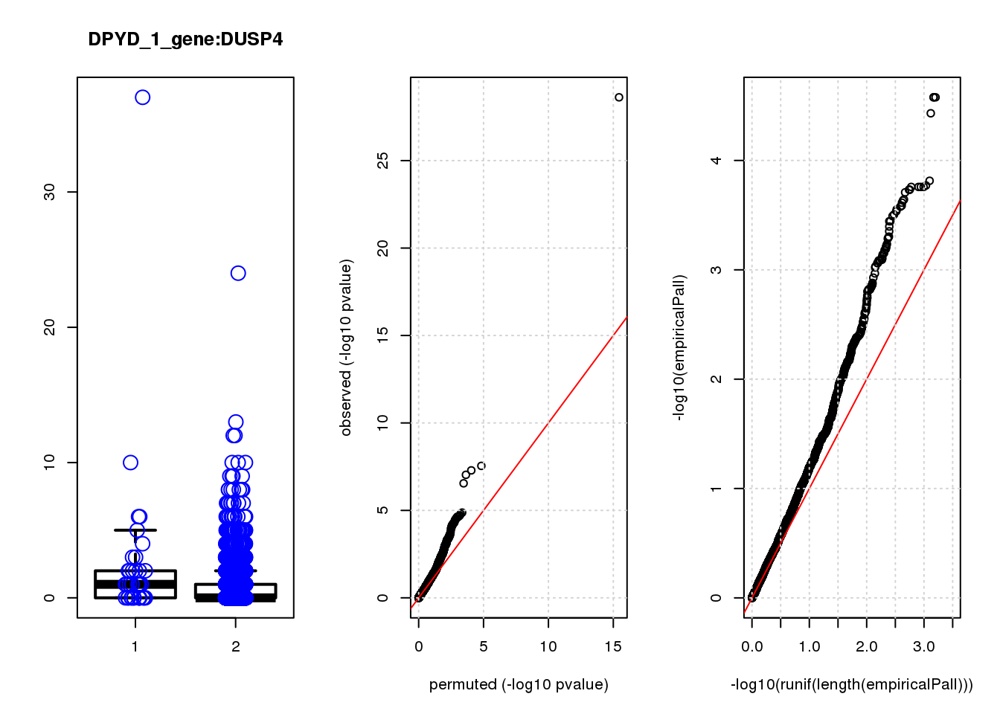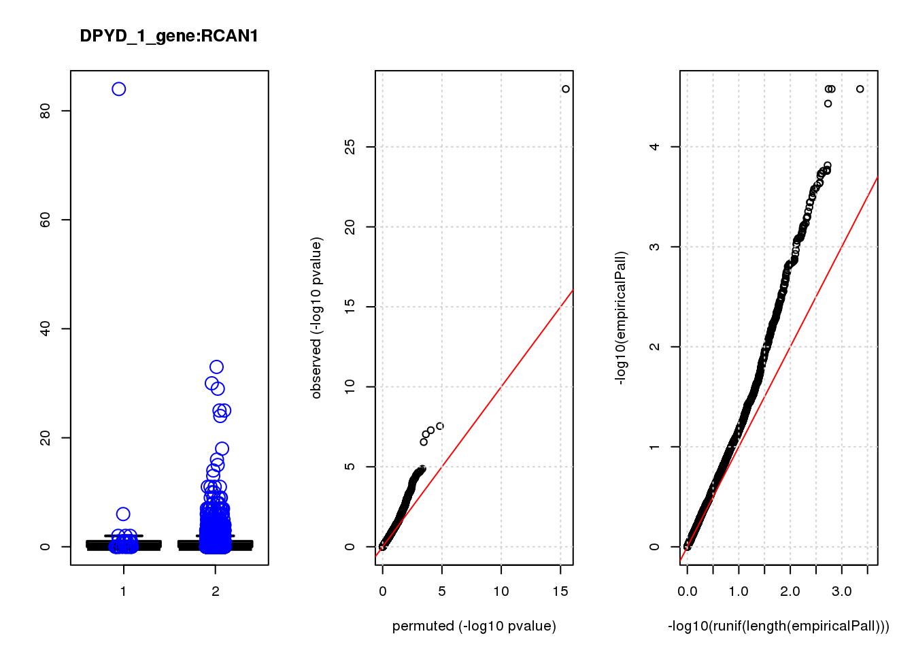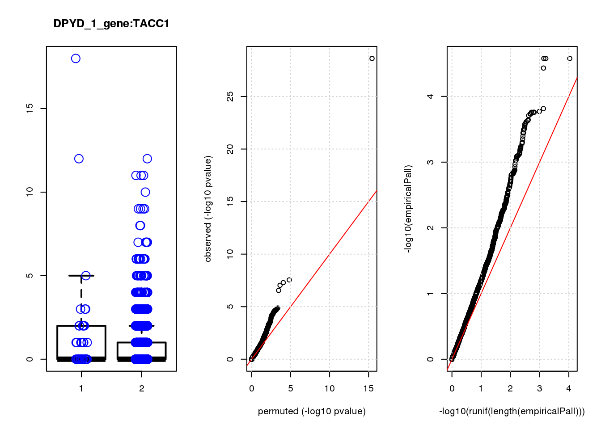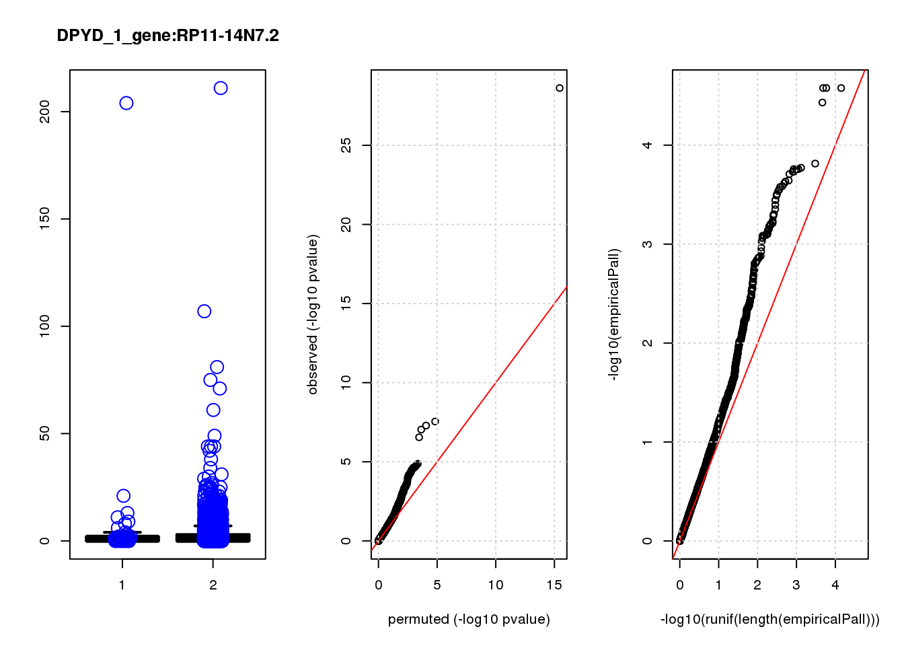
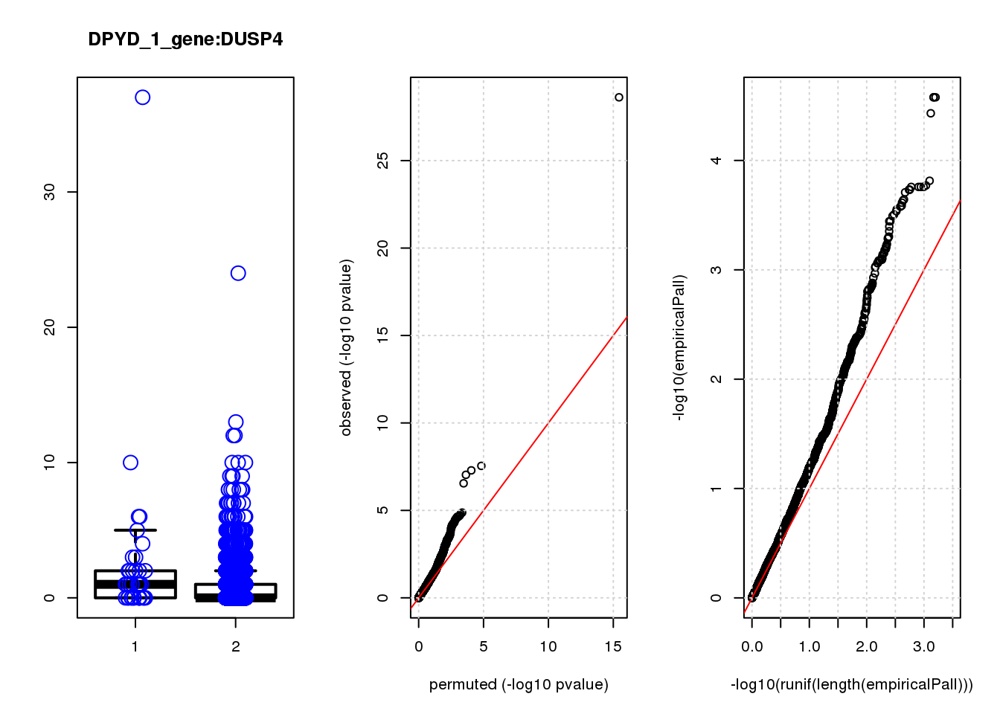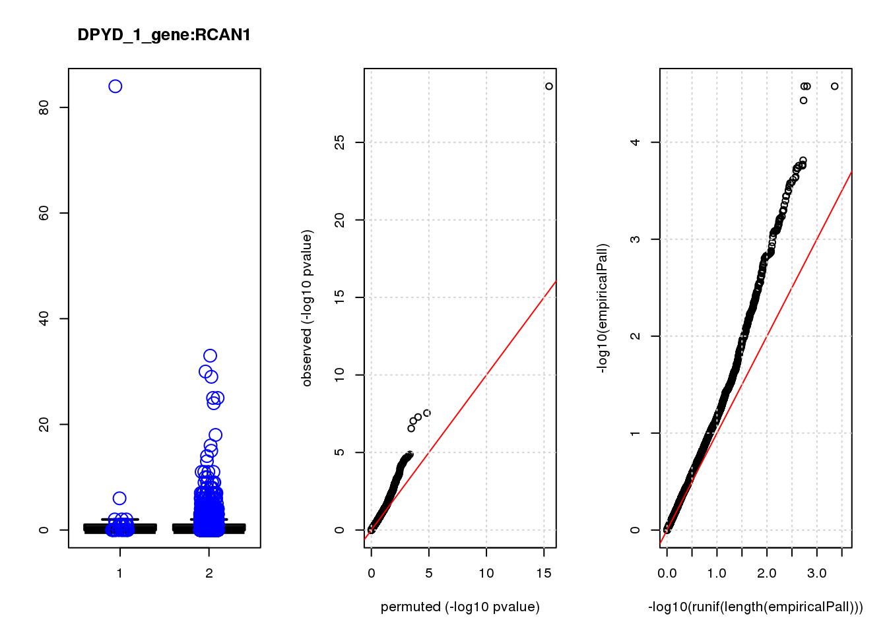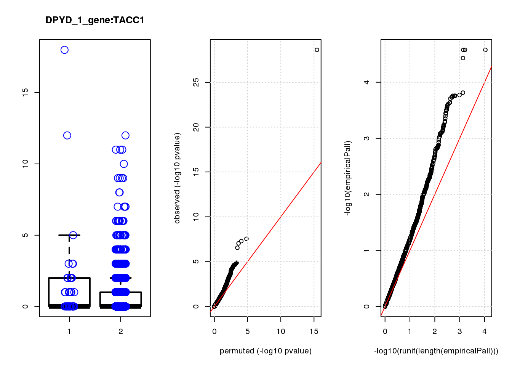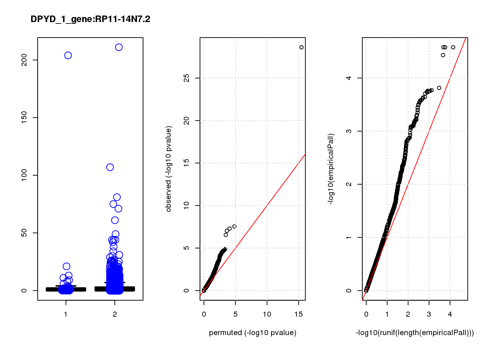 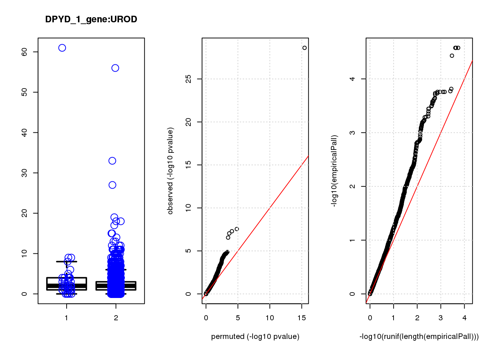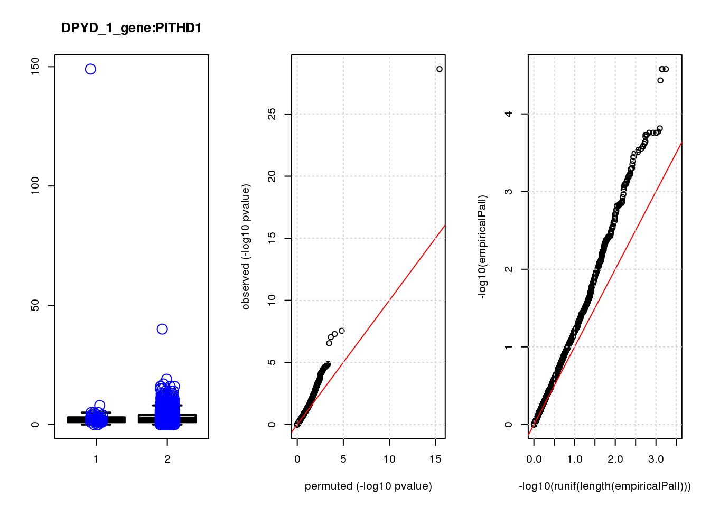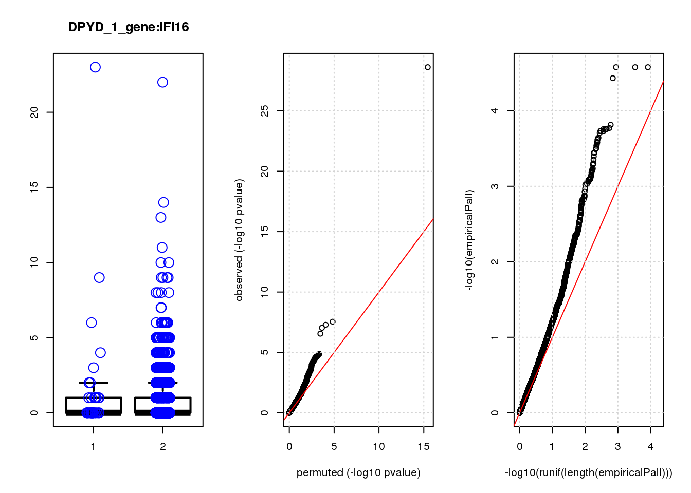
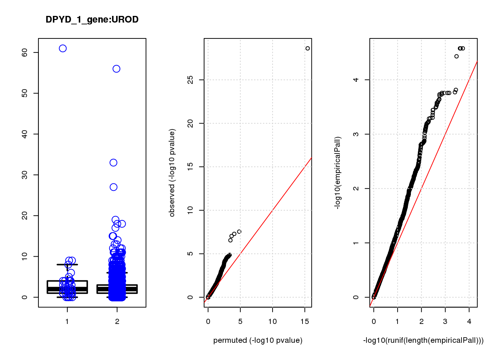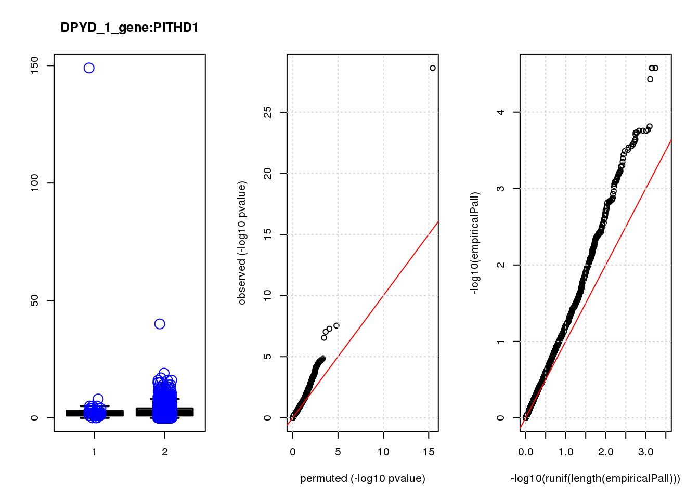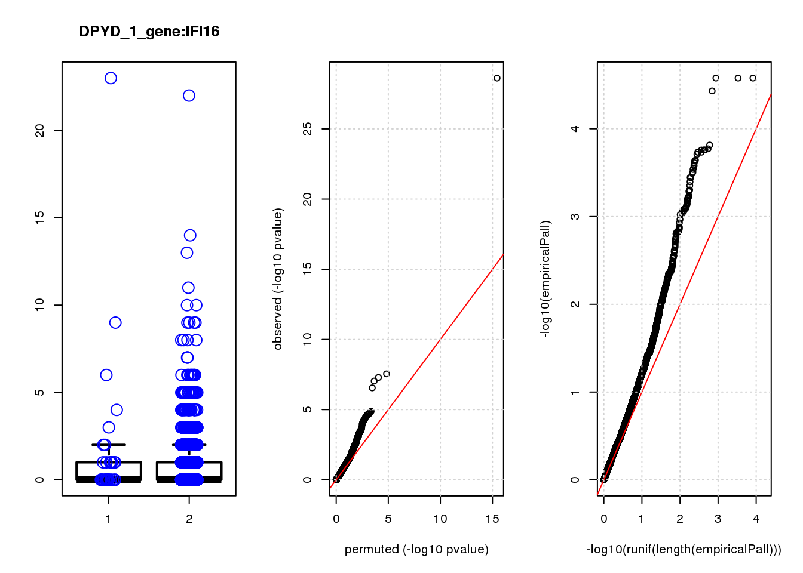
[1] "DPYD_2_gene_edgeR-qlf_Neg2.Rd"
logFC logCPM F PValue FDR empiricalP empiricalP.FDR #in_real
MEG3 0.86 7.5 28 1.1e-07 0.00071 0.00013 0.53 1
CSRP1 0.94 7.0 24 1.0e-06 0.00320 0.00017 0.53 2
SMPD4 -0.83 6.7 16 5.4e-05 0.11000 0.00043 0.71 3
NUDT3 -0.76 6.8 15 1.1e-04 0.17000 0.00054 0.71 4
CRNDE -0.47 8.3 14 1.8e-04 0.23000 0.00069 0.71 5
MYL9 0.77 7.5 13 2.6e-04 0.27000 0.00084 0.71 6
WASL -0.81 6.4 12 4.7e-04 0.41000 0.00110 0.71 7
VTA1 -0.64 6.7 11 8.0e-04 0.41000 0.00160 0.71 8
MRFAP1 -0.23 8.9 11 8.1e-04 0.41000 0.00160 0.71 9
ANKRD11 -0.47 7.5 11 8.3e-04 0.41000 0.00160 0.71 10
1e-04 NA NA NA NA NA NA NA 3
1e-05 NA NA NA NA NA NA NA 2
1e-06 NA NA NA NA NA NA NA 1
1e-07 NA NA NA NA NA NA NA 0
1e-08 NA NA NA NA NA NA NA 0
1e-09 NA NA NA NA NA NA NA 0
1e-10 NA NA NA NA NA NA NA 0
#in_perm EmpiricalFDR
MEG3 0.83 0.83
CSRP1 1.10 0.53
SMPD4 2.70 0.90
NUDT3 3.40 0.85
CRNDE 4.30 0.87
MYL9 5.30 0.88
WASL 6.70 0.96
VTA1 10.00 1.30
MRFAP1 10.00 1.10
ANKRD11 10.00 1.00
1e-04 3.30 1.10
1e-05 1.80 0.90
1e-06 1.10 1.10
1e-07 0.83 Inf
1e-08 0.63 Inf
1e-09 0.50 Inf
1e-10 0.33 Inf
[1] "DPYD_3_gene_edgeR-qlf_Neg2.Rd"
logFC logCPM F PValue FDR empiricalP empiricalP.FDR #in_real
NEAT1 -2.00 8.5 17.0 0.00004 0.25 0.00024 0.87 1
DUSP16 -1.50 6.4 12.0 0.00046 0.89 0.00078 0.87 2
RAB32 -1.60 6.6 11.0 0.00078 0.89 0.00110 0.87 3
CEP164 -1.30 6.5 11.0 0.00079 0.89 0.00110 0.87 4
FAM98B -1.30 6.4 11.0 0.00086 0.89 0.00120 0.87 5
C4orf48 -0.63 7.9 11.0 0.00087 0.89 0.00120 0.87 6
BEST1 -1.30 6.4 11.0 0.00150 0.89 0.00190 0.87 7
REXO2 -0.87 7.2 9.9 0.00170 0.89 0.00210 0.87 8
PREPL -1.20 6.5 9.6 0.00190 0.89 0.00230 0.87 9
SERINC2 -1.20 6.7 9.6 0.00200 0.89 0.00240 0.87 10
1e-04 NA NA NA NA NA NA NA 1
1e-05 NA NA NA NA NA NA NA 0
1e-06 NA NA NA NA NA NA NA 0
1e-07 NA NA NA NA NA NA NA 0
1e-08 NA NA NA NA NA NA NA 0
1e-09 NA NA NA NA NA NA NA 0
1e-10 NA NA NA NA NA NA NA 0
#in_perm EmpiricalFDR
NEAT1 1.50 1.5
DUSP16 4.90 2.5
RAB32 6.80 2.3
CEP164 6.90 1.7
FAM98B 7.50 1.5
C4orf48 7.50 1.2
BEST1 12.00 1.7
REXO2 13.00 1.6
PREPL 14.00 1.6
SERINC2 15.00 1.5
1e-04 2.60 2.6
1e-05 1.20 Inf
1e-06 0.73 Inf
1e-07 0.53 Inf
1e-08 0.50 Inf
1e-09 0.43 Inf
1e-10 0.23 Inf
[1] "GALNT10_1_gene_edgeR-qlf_Neg2.Rd"
logFC logCPM F PValue FDR empiricalP empiricalP.FDR #in_real
RPRD2 -1.60 6.4 20 8.8e-06 0.054 8.4e-05 0.42 1
CDKN1C 1.40 6.9 19 1.7e-05 0.054 1.3e-04 0.42 2
FAM104B -1.00 6.9 15 9.6e-05 0.200 3.5e-04 0.70 3
MED7 -1.20 6.4 13 3.8e-04 0.450 7.7e-04 0.70 4
SRD5A1 0.83 6.5 13 4.1e-04 0.450 8.0e-04 0.70 5
WSB1 -0.67 7.6 12 4.3e-04 0.450 8.0e-04 0.70 6
DCAF15 -1.00 6.7 12 6.0e-04 0.540 1.0e-03 0.70 7
AKAP13 -1.10 6.5 11 8.7e-04 0.600 1.3e-03 0.70 8
MAT2B 0.67 6.8 11 8.9e-04 0.600 1.4e-03 0.70 9
OGFR 0.76 6.6 11 9.6e-04 0.600 1.4e-03 0.70 10
1e-04 NA NA NA NA NA NA NA 3
1e-05 NA NA NA NA NA NA NA 1
1e-06 NA NA NA NA NA NA NA 0
1e-07 NA NA NA NA NA NA NA 0
1e-08 NA NA NA NA NA NA NA 0
1e-09 NA NA NA NA NA NA NA 0
1e-10 NA NA NA NA NA NA NA 0
#in_perm EmpiricalFDR
RPRD2 0.530 0.53
CDKN1C 0.830 0.42
FAM104B 2.200 0.73
MED7 4.900 1.20
SRD5A1 5.000 1.00
WSB1 5.100 0.84
DCAF15 6.300 0.90
AKAP13 8.300 1.00
MAT2B 8.500 0.95
OGFR 9.100 0.91
1e-04 2.200 0.73
1e-05 0.570 0.57
1e-06 0.330 Inf
1e-07 0.170 Inf
1e-08 0.130 Inf
1e-09 0.033 Inf
1e-10 0.033 Inf
[1] "GALNT10_2_gene_edgeR-qlf_Neg2.Rd"
logFC logCPM F PValue FDR empiricalP empiricalP.FDR #in_real
STMN2 1.60 7.1 15.0 0.00009 0.57 0.00026 0.99 1
TFE3 0.86 6.4 13.0 0.00040 1.00 0.00065 0.99 2
C14orf2 -0.29 9.2 10.0 0.00130 1.00 0.00180 0.99 3
COQ10B -1.10 6.5 10.0 0.00150 1.00 0.00220 0.99 4
SYPL1 -0.80 7.0 10.0 0.00150 1.00 0.00220 0.99 5
ST7L 0.77 6.4 10.0 0.00160 1.00 0.00220 0.99 6
RNF175 -1.10 6.5 9.5 0.00210 1.00 0.00280 0.99 7
PYURF -0.45 7.8 9.4 0.00220 1.00 0.00290 0.99 8
LGMN -1.00 6.5 9.2 0.00240 1.00 0.00310 0.99 9
CYP20A1 0.73 6.4 9.0 0.00280 1.00 0.00360 0.99 10
1e-04 NA NA NA NA NA NA NA 1
1e-05 NA NA NA NA NA NA NA 0
1e-06 NA NA NA NA NA NA NA 0
1e-07 NA NA NA NA NA NA NA 0
1e-08 NA NA NA NA NA NA NA 0
1e-09 NA NA NA NA NA NA NA 0
1e-10 NA NA NA NA NA NA NA 0
#in_perm EmpiricalFDR
STMN2 1.700 1.7
TFE3 4.100 2.1
C14orf2 12.000 3.9
COQ10B 14.000 3.4
SYPL1 14.000 2.7
ST7L 14.000 2.4
RNF175 18.000 2.5
PYURF 19.000 2.3
LGMN 19.000 2.2
CYP20A1 23.000 2.3
1e-04 1.700 1.7
1e-05 0.630 Inf
1e-06 0.330 Inf
1e-07 0.200 Inf
1e-08 0.130 Inf
1e-09 0.100 Inf
1e-10 0.033 Inf
[1] "GALNT10_3_gene_edgeR-qlf_Neg2.Rd"
logFC logCPM F PValue FDR empiricalP empiricalP.FDR #in_real
NEAT1 0.97 8.5 17.0 4.8e-05 0.18 0.00021 0.72 1
STMN2 -2.50 7.1 16.0 5.7e-05 0.18 0.00023 0.72 2
CHAF1B 0.83 6.5 15.0 1.3e-04 0.27 0.00036 0.76 3
SCAF4 -0.97 6.5 12.0 5.0e-04 0.78 0.00078 0.79 4
CUTC 0.67 6.5 11.0 7.2e-04 0.79 0.00110 0.79 5
GADD45G 1.10 7.5 11.0 7.5e-04 0.79 0.00110 0.79 6
NAV1 -0.91 6.6 11.0 9.1e-04 0.82 0.00130 0.79 7
RGMB -0.96 6.5 10.0 1.3e-03 0.82 0.00160 0.79 8
CDC25B -0.98 6.9 10.0 1.6e-03 0.82 0.00200 0.79 9
SPARC 0.39 8.5 9.5 2.0e-03 0.82 0.00250 0.79 10
1e-04 NA NA NA NA NA NA NA 2
1e-05 NA NA NA NA NA NA NA 0
1e-06 NA NA NA NA NA NA NA 0
1e-07 NA NA NA NA NA NA NA 0
1e-08 NA NA NA NA NA NA NA 0
1e-09 NA NA NA NA NA NA NA 0
1e-10 NA NA NA NA NA NA NA 0
#in_perm EmpiricalFDR
NEAT1 1.300 1.30
STMN2 1.400 0.72
CHAF1B 2.300 0.76
SCAF4 4.900 1.20
CUTC 6.700 1.30
GADD45G 6.800 1.10
NAV1 7.900 1.10
RGMB 10.000 1.30
CDC25B 12.000 1.40
SPARC 15.000 1.50
1e-04 2.000 0.98
1e-05 0.770 Inf
1e-06 0.330 Inf
1e-07 0.170 Inf
1e-08 0.170 Inf
1e-09 0.100 Inf
1e-10 0.067 Inf
[1] "KCTD13_1_gene_edgeR-qlf_Neg2.Rd"
logFC logCPM F PValue FDR empiricalP empiricalP.FDR #in_real
TUBA1C -3.10 6.8 20 6.5e-06 0.041 7.9e-05 0.36 1
FUOM 1.10 6.4 17 4.2e-05 0.120 2.1e-04 0.36 2
CTTNBP2NL -1.70 6.4 16 7.4e-05 0.120 2.6e-04 0.36 3
SLC25A39 -0.84 7.5 16 7.4e-05 0.120 2.6e-04 0.36 4
NDUFB2 -0.48 8.7 13 3.0e-04 0.230 5.4e-04 0.36 5
ARAF -1.40 6.5 13 3.3e-04 0.230 5.7e-04 0.36 6
TMSB10 -0.66 12.0 13 3.4e-04 0.230 5.9e-04 0.36 7
SRGAP1 -1.10 7.0 13 3.5e-04 0.230 6.0e-04 0.36 8
CYTOR -1.30 7.7 13 3.6e-04 0.230 6.1e-04 0.36 9
MXD3 -1.70 6.4 13 3.8e-04 0.230 6.2e-04 0.36 10
1e-04 NA NA NA NA NA NA NA 4
1e-05 NA NA NA NA NA NA NA 1
1e-06 NA NA NA NA NA NA NA 0
1e-07 NA NA NA NA NA NA NA 0
1e-08 NA NA NA NA NA NA NA 0
1e-09 NA NA NA NA NA NA NA 0
1e-10 NA NA NA NA NA NA NA 0
#in_perm EmpiricalFDR
TUBA1C 0.500 0.50
FUOM 1.300 0.65
CTTNBP2NL 1.600 0.54
SLC25A39 1.700 0.42
NDUFB2 3.400 0.68
ARAF 3.600 0.59
TMSB10 3.700 0.53
SRGAP1 3.800 0.47
CYTOR 3.800 0.43
MXD3 3.900 0.39
1e-04 1.900 0.48
1e-05 0.630 0.63
1e-06 0.270 Inf
1e-07 0.130 Inf
1e-08 0.100 Inf
1e-09 0.100 Inf
1e-10 0.067 Inf
[1] "KCTD13_2_gene_edgeR-qlf_Neg2.Rd"
logFC logCPM F PValue FDR empiricalP empiricalP.FDR #in_real
RCAN1 -2.20 6.5 20 7.0e-06 0.044 6.3e-05 0.27 1
OPTN -2.10 6.4 18 2.3e-05 0.072 8.5e-05 0.27 2
LPP -1.50 6.7 15 1.4e-04 0.290 3.2e-04 0.55 3
TENM3 -1.40 6.6 14 2.0e-04 0.310 4.0e-04 0.55 4
NDUFB8 -0.38 8.7 11 7.6e-04 0.550 1.2e-03 0.55 5
FAM63B -1.00 7.0 11 7.9e-04 0.550 1.2e-03 0.55 6
PTPN1 -1.10 6.7 11 8.4e-04 0.550 1.3e-03 0.55 7
PLP1 1.00 6.4 11 9.6e-04 0.550 1.4e-03 0.55 8
KPNA4 -1.10 6.6 11 9.8e-04 0.550 1.4e-03 0.55 9
SEC14L1 -1.10 6.6 11 1.1e-03 0.550 1.5e-03 0.55 10
1e-04 NA NA NA NA NA NA NA 2
1e-05 NA NA NA NA NA NA NA 1
1e-06 NA NA NA NA NA NA NA 0
1e-07 NA NA NA NA NA NA NA 0
1e-08 NA NA NA NA NA NA NA 0
1e-09 NA NA NA NA NA NA NA 0
1e-10 NA NA NA NA NA NA NA 0
#in_perm EmpiricalFDR
RCAN1 0.400 0.40
OPTN 0.530 0.27
LPP 2.000 0.68
TENM3 2.500 0.63
NDUFB8 7.400 1.50
FAM63B 7.500 1.30
PTPN1 8.000 1.10
PLP1 8.500 1.10
KPNA4 8.700 0.96
SEC14L1 9.300 0.93
1e-04 1.700 0.83
1e-05 0.400 0.40
1e-06 0.230 Inf
1e-07 0.130 Inf
1e-08 0.067 Inf
1e-09 0.067 Inf
1e-10 0.033 Inf
[1] "KCTD13_3_gene_edgeR-qlf_Neg2.Rd"
logFC logCPM F PValue FDR empiricalP empiricalP.FDR #in_real
GEMIN2 1.10 6.7 13.0 0.00030 0.89 0.00091 0.92 1
GINM1 -2.10 6.5 12.0 0.00042 0.89 0.00110 0.92 2
STK24 1.10 6.5 12.0 0.00070 0.89 0.00140 0.92 3
IPO9 0.93 7.0 11.0 0.00073 0.89 0.00150 0.92 4
HSPA14 1.10 6.6 11.0 0.00100 0.89 0.00190 0.92 5
HNRNPL 0.93 6.9 11.0 0.00110 0.89 0.00210 0.92 6
KMT2A 0.88 7.0 10.0 0.00140 0.89 0.00230 0.92 7
OSGIN1 -3.00 6.6 9.9 0.00160 0.89 0.00270 0.92 8
UBFD1 -1.70 6.5 9.9 0.00170 0.89 0.00270 0.92 9
TLE4 0.99 6.9 9.8 0.00180 0.89 0.00280 0.92 10
1e-04 NA NA NA NA NA NA NA 0
1e-05 NA NA NA NA NA NA NA 0
1e-06 NA NA NA NA NA NA NA 0
1e-07 NA NA NA NA NA NA NA 0
1e-08 NA NA NA NA NA NA NA 0
1e-09 NA NA NA NA NA NA NA 0
1e-10 NA NA NA NA NA NA NA 0
#in_perm EmpiricalFDR
GEMIN2 5.80 5.8
GINM1 6.90 3.4
STK24 9.00 3.0
IPO9 9.30 2.3
HSPA14 12.00 2.4
HNRNPL 13.00 2.2
KMT2A 15.00 2.1
OSGIN1 17.00 2.1
UBFD1 17.00 1.9
TLE4 18.00 1.8
1e-04 3.20 Inf
1e-05 1.40 Inf
1e-06 0.60 Inf
1e-07 0.30 Inf
1e-08 0.20 Inf
1e-09 0.13 Inf
1e-10 0.13 Inf
[1] "KMT2E_1_gene_edgeR-qlf_Neg2.Rd"
logFC logCPM F PValue FDR empiricalP empiricalP.FDR #in_real
EXOC6 1.5 6.4 14.0 0.00021 0.84 0.00069 0.98 1
CNRIP1 1.3 6.6 12.0 0.00063 0.84 0.00130 0.98 2
ZMYND11 -2.6 6.4 12.0 0.00064 0.84 0.00130 0.98 3
NCSTN -2.3 6.7 11.0 0.00085 0.84 0.00170 0.98 4
GMCL1 -2.5 6.4 11.0 0.00088 0.84 0.00170 0.98 5
FAM161A -2.4 6.7 11.0 0.00094 0.84 0.00180 0.98 6
BIN1 1.3 6.6 11.0 0.00110 0.84 0.00200 0.98 7
B4GALT5 -2.4 6.4 10.0 0.00170 0.84 0.00280 0.98 8
BET1 -1.8 6.8 9.9 0.00170 0.84 0.00280 0.98 9
UCKL1 -2.3 6.4 10.0 0.00180 0.84 0.00300 0.98 10
1e-04 NA NA NA NA NA NA NA 0
1e-05 NA NA NA NA NA NA NA 0
1e-06 NA NA NA NA NA NA NA 0
1e-07 NA NA NA NA NA NA NA 0
1e-08 NA NA NA NA NA NA NA 0
1e-09 NA NA NA NA NA NA NA 0
1e-10 NA NA NA NA NA NA NA 0
#in_perm EmpiricalFDR
EXOC6 4.40 4.4
CNRIP1 8.20 4.1
ZMYND11 8.30 2.8
NCSTN 11.00 2.6
GMCL1 11.00 2.2
FAM161A 11.00 1.9
BIN1 13.00 1.8
B4GALT5 18.00 2.2
BET1 18.00 2.0
UCKL1 19.00 1.9
1e-04 3.20 Inf
1e-05 1.70 Inf
1e-06 1.30 Inf
1e-07 0.87 Inf
1e-08 0.57 Inf
1e-09 0.47 Inf
1e-10 0.30 Inf
[1] "KMT2E_2_gene_edgeR-qlf_Neg2.Rd"
logFC logCPM F PValue FDR empiricalP empiricalP.FDR #in_real
OSGIN1 1.6 6.6 16 5.9e-05 0.14 0.00024 0.37 1
CCDC107 -1.7 6.9 16 6.2e-05 0.14 0.00025 0.37 2
RNF168 -2.3 6.6 16 6.9e-05 0.14 0.00029 0.37 3
CCDC28B -2.1 6.6 15 1.4e-04 0.15 0.00039 0.37 4
RAB8A -1.5 7.0 14 1.4e-04 0.15 0.00040 0.37 5
DCLK1 -2.2 6.4 15 1.6e-04 0.15 0.00042 0.37 6
PRR5 -2.2 6.4 15 1.8e-04 0.15 0.00045 0.37 7
CSNK1D -1.4 7.1 14 1.9e-04 0.15 0.00047 0.37 8
QPRT -2.7 6.7 13 2.8e-04 0.20 0.00057 0.40 9
SLC2A3 -2.0 6.5 13 3.9e-04 0.25 0.00071 0.43 10
1e-04 NA NA NA NA NA NA NA 3
1e-05 NA NA NA NA NA NA NA 0
1e-06 NA NA NA NA NA NA NA 0
1e-07 NA NA NA NA NA NA NA 0
1e-08 NA NA NA NA NA NA NA 0
1e-09 NA NA NA NA NA NA NA 0
1e-10 NA NA NA NA NA NA NA 0
#in_perm EmpiricalFDR
OSGIN1 1.500 1.50
CCDC107 1.600 0.78
RNF168 1.800 0.61
CCDC28B 2.500 0.62
RAB8A 2.500 0.50
DCLK1 2.700 0.44
PRR5 2.800 0.40
CSNK1D 2.900 0.37
QPRT 3.600 0.40
SLC2A3 4.500 0.45
1e-04 2.100 0.69
1e-05 0.800 Inf
1e-06 0.370 Inf
1e-07 0.230 Inf
1e-08 0.200 Inf
1e-09 0.100 Inf
1e-10 0.067 Inf
[1] "KMT2E_3_gene_edgeR-qlf_Neg2.Rd"
logFC logCPM F PValue FDR empiricalP empiricalP.FDR #in_real
MARCH9 -2.20 6.4 17.0 9.2e-05 0.55 0.00029 0.93 1
TP53I3 1.20 6.8 14.0 1.8e-04 0.55 0.00040 0.93 2
GPT2 -1.70 6.8 13.0 3.4e-04 0.56 0.00059 0.93 3
NCSTN -1.70 6.7 13.0 3.8e-04 0.56 0.00066 0.93 4
DEDD 1.10 6.4 12.0 4.4e-04 0.56 0.00074 0.93 5
NACC1 -1.70 6.5 11.0 9.8e-04 1.00 0.00130 0.97 6
FDXR 0.98 7.0 10.0 1.6e-03 1.00 0.00200 0.97 7
COX7A2 -0.42 9.4 9.7 1.8e-03 1.00 0.00230 0.97 8
KIN -1.40 6.6 9.6 1.9e-03 1.00 0.00250 0.97 9
DUS3L 0.99 6.4 9.4 2.2e-03 1.00 0.00280 0.97 10
1e-04 NA NA NA NA NA NA NA 1
1e-05 NA NA NA NA NA NA NA 0
1e-06 NA NA NA NA NA NA NA 0
1e-07 NA NA NA NA NA NA NA 0
1e-08 NA NA NA NA NA NA NA 0
1e-09 NA NA NA NA NA NA NA 0
1e-10 NA NA NA NA NA NA NA 0
#in_perm EmpiricalFDR
MARCH9 1.800 1.80
TP53I3 2.500 1.30
GPT2 3.700 1.20
NCSTN 4.200 1.00
DEDD 4.700 0.93
NACC1 8.500 1.40
FDXR 13.000 1.80
COX7A2 14.000 1.80
KIN 16.000 1.70
DUS3L 18.000 1.80
1e-04 1.900 1.90
1e-05 0.570 Inf
1e-06 0.300 Inf
1e-07 0.200 Inf
1e-08 0.130 Inf
1e-09 0.100 Inf
1e-10 0.067 Inf
[1] "LINC00637_1_gene_edgeR-qlf_Neg2.Rd"
logFC logCPM F PValue FDR empiricalP empiricalP.FDR
HSP90AA1 0.84 10.0 71 5.8e-17 3.7e-13 0.0e+00 0.00
HSPH1 0.81 7.3 26 3.7e-07 1.2e-03 3.7e-05 0.12
HSPD1 0.37 9.6 16 7.7e-05 1.6e-01 2.3e-04 0.49
NEFM 1.00 7.5 14 1.6e-04 2.6e-01 3.2e-04 0.50
FKBP1B -1.10 6.6 14 2.4e-04 3.0e-01 4.4e-04 0.54
DERL1 -0.88 6.8 12 4.3e-04 3.9e-01 6.2e-04 0.54
PPRC1 -1.10 6.4 12 4.3e-04 3.9e-01 6.2e-04 0.54
RP11-352M15.2 -1.10 6.5 12 5.0e-04 3.9e-01 7.1e-04 0.54
COX14 -0.73 7.1 12 5.6e-04 3.9e-01 7.7e-04 0.54
CPXM1 -1.00 6.4 11 1.3e-03 7.5e-01 1.4e-03 0.73
1e-04 NA NA NA NA NA NA NA
1e-05 NA NA NA NA NA NA NA
1e-06 NA NA NA NA NA NA NA
1e-07 NA NA NA NA NA NA NA
1e-08 NA NA NA NA NA NA NA
1e-09 NA NA NA NA NA NA NA
1e-10 NA NA NA NA NA NA NA
#in_real #in_perm EmpiricalFDR
HSP90AA1 1 0.000 0.000
HSPH1 2 0.230 0.120
HSPD1 3 1.500 0.490
NEFM 4 2.000 0.500
FKBP1B 5 2.800 0.560
DERL1 6 3.900 0.650
PPRC1 7 3.900 0.560
RP11-352M15.2 8 4.500 0.560
COX14 9 4.900 0.540
CPXM1 10 8.900 0.890
1e-04 3 1.500 0.510
1e-05 2 0.730 0.370
1e-06 2 0.400 0.200
1e-07 1 0.170 0.170
1e-08 1 0.100 0.100
1e-09 1 0.033 0.033
1e-10 1 0.000 0.000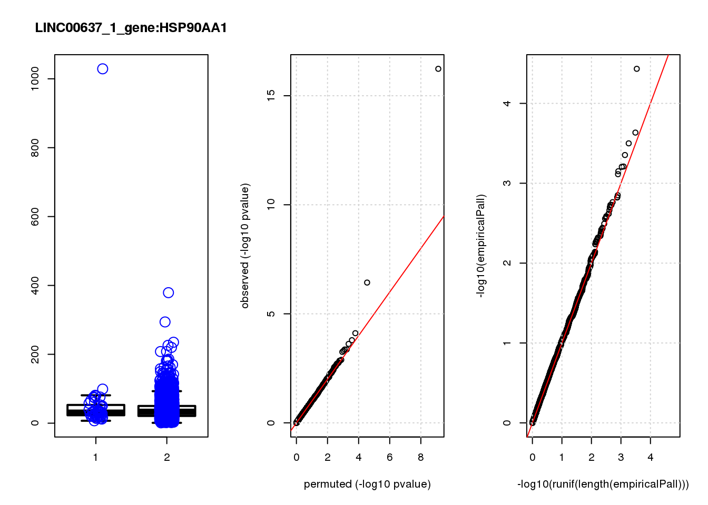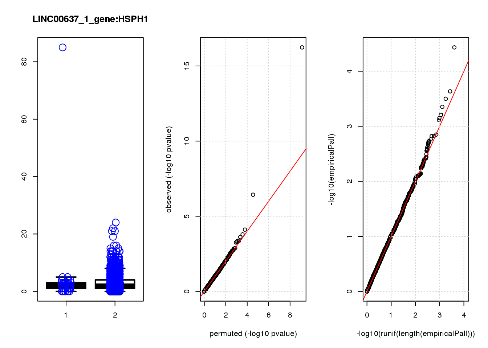
[1] "LINC00637_2_gene_edgeR-qlf_Neg2.Rd"
logFC logCPM F PValue FDR empiricalP empiricalP.FDR #in_real
TP53I3 1.00 6.8 17 4.5e-05 0.23 0.00022 0.67 1
STAG2 -1.50 6.5 15 9.9e-05 0.23 0.00030 0.67 2
SRFBP1 -1.40 6.5 15 1.1e-04 0.23 0.00032 0.67 3
TUBA1C -2.10 6.8 14 2.0e-04 0.32 0.00049 0.77 4
COASY -1.20 6.7 13 3.3e-04 0.42 0.00069 0.82 5
KCTD9 -1.40 6.4 13 4.0e-04 0.42 0.00080 0.82 6
UHMK1 -1.30 6.5 12 5.1e-04 0.46 0.00092 0.82 7
YWHAB -0.43 8.7 12 6.9e-04 0.52 0.00110 0.82 8
PIR -1.40 6.6 11 7.4e-04 0.52 0.00120 0.82 9
PLP1 -1.50 6.4 10 1.6e-03 0.92 0.00200 0.98 10
1e-04 NA NA NA NA NA NA NA 2
1e-05 NA NA NA NA NA NA NA 0
1e-06 NA NA NA NA NA NA NA 0
1e-07 NA NA NA NA NA NA NA 0
1e-08 NA NA NA NA NA NA NA 0
1e-09 NA NA NA NA NA NA NA 0
1e-10 NA NA NA NA NA NA NA 0
#in_perm EmpiricalFDR
TP53I3 1.40 1.40
STAG2 1.90 0.95
SRFBP1 2.00 0.67
TUBA1C 3.10 0.77
COASY 4.40 0.87
KCTD9 5.00 0.84
UHMK1 5.80 0.83
YWHAB 6.90 0.86
PIR 7.40 0.82
PLP1 13.00 1.30
1e-04 1.90 0.97
1e-05 0.90 Inf
1e-06 0.57 Inf
1e-07 0.40 Inf
1e-08 0.33 Inf
1e-09 0.27 Inf
1e-10 0.10 Inf
[1] "LINC00637_3_gene_edgeR-qlf_Neg2.Rd"
logFC logCPM F PValue FDR empiricalP empiricalP.FDR #in_real
GADD45G -3.1 7.5 25 6.6e-07 0.0042 5.3e-05 0.22 1
MIAT -1.9 7.0 19 1.2e-05 0.0270 1.1e-04 0.22 2
CDKN1C -2.1 6.9 19 1.3e-05 0.0270 1.1e-04 0.22 3
CDC25A -1.2 6.4 18 2.8e-05 0.0440 1.6e-04 0.22 4
ZNHIT6 0.8 6.5 17 3.5e-05 0.0440 1.7e-04 0.22 5
TPM2 1.0 7.2 15 9.4e-05 0.0990 2.9e-04 0.30 6
DLL3 -1.9 7.0 15 1.3e-04 0.1200 3.3e-04 0.30 7
SMOC1 -1.1 7.0 14 1.6e-04 0.1300 3.9e-04 0.31 8
DIO3 -1.2 7.1 13 3.0e-04 0.2100 6.1e-04 0.40 9
HES6 -1.1 9.0 13 3.7e-04 0.2200 6.9e-04 0.40 10
1e-04 NA NA NA NA NA NA NA 6
1e-05 NA NA NA NA NA NA NA 1
1e-06 NA NA NA NA NA NA NA 1
1e-07 NA NA NA NA NA NA NA 0
1e-08 NA NA NA NA NA NA NA 0
1e-09 NA NA NA NA NA NA NA 0
1e-10 NA NA NA NA NA NA NA 0
#in_perm EmpiricalFDR
GADD45G 0.330 0.33
MIAT 0.670 0.33
CDKN1C 0.670 0.22
CDC25A 1.000 0.25
ZNHIT6 1.100 0.22
TPM2 1.800 0.30
DLL3 2.100 0.30
SMOC1 2.500 0.31
DIO3 3.800 0.43
HES6 4.400 0.44
1e-04 1.900 0.31
1e-05 0.630 0.63
1e-06 0.330 0.33
1e-07 0.170 Inf
1e-08 0.067 Inf
1e-09 0.067 Inf
1e-10 0.067 Inf
[1] "LOC100507431_1_gene_edgeR-qlf_Neg2.Rd"
logFC logCPM F PValue FDR empiricalP empiricalP.FDR #in_real
GADD45G 2.40 7.5 28 1.4e-07 0.00062 5.8e-05 0.18 1
S100A16 1.70 6.6 27 2.0e-07 0.00062 5.8e-05 0.18 2
CCND2 1.50 7.0 18 1.8e-05 0.02800 1.6e-04 0.27 3
CDKN1C 1.90 6.8 18 1.8e-05 0.02800 1.7e-04 0.27 4
TPM2 1.70 7.2 16 7.4e-05 0.09300 3.2e-04 0.40 5
ANAPC10 -2.40 6.4 16 1.3e-04 0.13000 4.5e-04 0.47 6
SIGIRR -2.30 6.4 13 3.4e-04 0.26000 7.5e-04 0.57 7
LMCD1 1.30 6.6 13 3.6e-04 0.26000 7.9e-04 0.57 8
JOSD1 -2.20 6.4 14 3.8e-04 0.26000 8.1e-04 0.57 9
C4orf48 -0.94 7.9 12 4.8e-04 0.30000 9.1e-04 0.57 10
1e-04 NA NA NA NA NA NA NA 5
1e-05 NA NA NA NA NA NA NA 2
1e-06 NA NA NA NA NA NA NA 2
1e-07 NA NA NA NA NA NA NA 0
1e-08 NA NA NA NA NA NA NA 0
1e-09 NA NA NA NA NA NA NA 0
1e-10 NA NA NA NA NA NA NA 0
#in_perm EmpiricalFDR
GADD45G 0.37 0.37
S100A16 0.37 0.18
CCND2 1.00 0.33
CDKN1C 1.10 0.27
TPM2 2.00 0.40
ANAPC10 2.80 0.47
SIGIRR 4.70 0.68
LMCD1 5.00 0.63
JOSD1 5.10 0.57
C4orf48 5.70 0.57
1e-04 2.40 0.48
1e-05 0.90 0.45
1e-06 0.53 0.27
1e-07 0.37 Inf
1e-08 0.17 Inf
1e-09 0.13 Inf
1e-10 0.13 Inf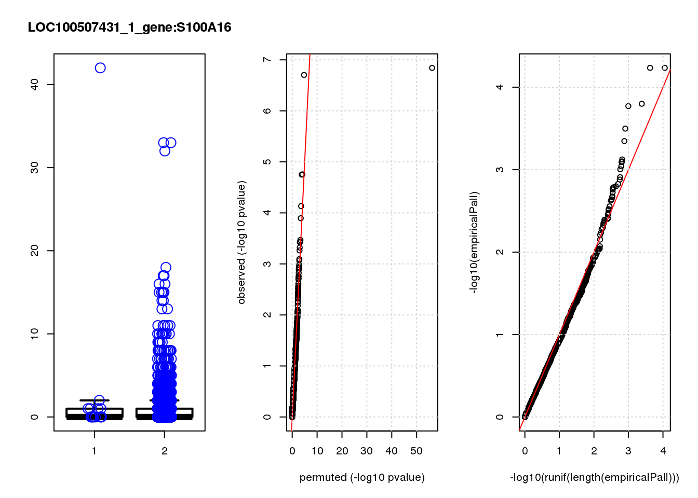
[1] "LOC100507431_2_gene_edgeR-qlf_Neg2.Rd"
logFC logCPM F PValue FDR empiricalP empiricalP.FDR #in_real
S100A16 1.50 6.6 32 1.6e-08 0.0001 4.2e-05 0.27 1
S100A13 1.10 6.9 22 2.5e-06 0.0078 1.3e-04 0.36 2
FNDC3B 1.10 6.4 20 1.0e-05 0.0210 1.7e-04 0.36 3
SLC36A4 -1.40 6.6 14 1.5e-04 0.2300 4.7e-04 0.54 4
GDAP1L1 -1.70 6.5 14 2.1e-04 0.2600 5.4e-04 0.54 5
IER5 0.98 6.4 13 3.6e-04 0.3800 7.5e-04 0.54 6
MZT2B -0.48 9.1 12 4.7e-04 0.4200 9.2e-04 0.54 7
RANGRF -1.10 6.9 12 5.8e-04 0.4200 1.0e-03 0.54 8
GLUL 0.63 8.0 11 7.1e-04 0.4200 1.2e-03 0.54 9
POMT1 0.94 6.4 12 7.6e-04 0.4200 1.2e-03 0.54 10
1e-04 NA NA NA NA NA NA NA 3
1e-05 NA NA NA NA NA NA NA 2
1e-06 NA NA NA NA NA NA NA 1
1e-07 NA NA NA NA NA NA NA 1
1e-08 NA NA NA NA NA NA NA 0
1e-09 NA NA NA NA NA NA NA 0
1e-10 NA NA NA NA NA NA NA 0
#in_perm EmpiricalFDR
S100A16 0.27 0.27
S100A13 0.80 0.40
FNDC3B 1.10 0.36
SLC36A4 2.90 0.73
GDAP1L1 3.40 0.68
IER5 4.70 0.79
MZT2B 5.80 0.83
RANGRF 6.50 0.81
GLUL 7.30 0.81
POMT1 7.60 0.76
1e-04 2.50 0.82
1e-05 1.10 0.53
1e-06 0.67 0.67
1e-07 0.40 0.40
1e-08 0.23 Inf
1e-09 0.23 Inf
1e-10 0.20 Inf
[1] "LOC100507431_3_gene_edgeR-qlf_Neg2.Rd"
logFC logCPM F PValue FDR empiricalP empiricalP.FDR #in_real
HERPUD1 0.95 7.1 21 4.1e-06 0.014 9.5e-05 0.32 1
DDIT4 0.98 7.9 21 4.5e-06 0.014 1.0e-04 0.32 2
ATF5 0.99 6.9 18 2.5e-05 0.052 1.8e-04 0.38 3
TRIB3 1.00 7.1 15 1.3e-04 0.210 3.9e-04 0.58 4
WARS 0.66 7.3 13 3.3e-04 0.380 6.2e-04 0.58 5
CEBPB 0.87 6.8 12 4.1e-04 0.380 6.8e-04 0.58 6
OSGIN1 0.94 6.6 12 4.4e-04 0.380 7.0e-04 0.58 7
KCTD9 0.74 6.4 12 4.8e-04 0.380 7.3e-04 0.58 8
PSAT1 0.54 8.3 11 9.0e-04 0.570 1.2e-03 0.73 9
TCEA1 0.40 8.0 11 1.2e-03 0.570 1.6e-03 0.73 10
1e-04 NA NA NA NA NA NA NA 3
1e-05 NA NA NA NA NA NA NA 2
1e-06 NA NA NA NA NA NA NA 0
1e-07 NA NA NA NA NA NA NA 0
1e-08 NA NA NA NA NA NA NA 0
1e-09 NA NA NA NA NA NA NA 0
1e-10 NA NA NA NA NA NA NA 0
#in_perm EmpiricalFDR
HERPUD1 0.600 0.60
DDIT4 0.630 0.32
ATF5 1.100 0.38
TRIB3 2.400 0.61
WARS 3.900 0.79
CEBPB 4.300 0.72
OSGIN1 4.400 0.63
KCTD9 4.600 0.58
PSAT1 7.700 0.85
TCEA1 10.000 1.00
1e-04 2.100 0.69
1e-05 0.770 0.38
1e-06 0.470 Inf
1e-07 0.230 Inf
1e-08 0.170 Inf
1e-09 0.033 Inf
1e-10 0.000 NaN
[1] "LOC105376975_1_gene_edgeR-qlf_Neg2.Rd"
logFC logCPM F PValue FDR empiricalP empiricalP.FDR #in_real
NEFM 1.60 7.5 32 1.7e-08 0.00011 1.6e-05 0.05 1
STMN2 2.00 7.1 29 9.5e-08 0.00030 1.6e-05 0.05 2
SCML1 0.97 6.5 16 5.2e-05 0.11000 1.4e-04 0.30 3
FNDC3A -1.30 6.6 15 1.0e-04 0.15000 2.3e-04 0.30 4
PSMB7 -0.45 9.1 15 1.2e-04 0.15000 2.4e-04 0.30 5
CTNNA1 -0.81 7.2 13 2.4e-04 0.24000 4.4e-04 0.31 6
UQCRFS1 -0.49 8.4 13 2.6e-04 0.24000 4.5e-04 0.31 7
HMG20A -1.40 6.4 14 3.1e-04 0.24000 5.2e-04 0.31 8
RSL1D1 -0.47 8.9 13 3.8e-04 0.26000 6.0e-04 0.31 9
MRPS30 -0.90 7.2 12 4.1e-04 0.26000 6.5e-04 0.31 10
1e-04 NA NA NA NA NA NA NA 3
1e-05 NA NA NA NA NA NA NA 2
1e-06 NA NA NA NA NA NA NA 2
1e-07 NA NA NA NA NA NA NA 2
1e-08 NA NA NA NA NA NA NA 0
1e-09 NA NA NA NA NA NA NA 0
1e-10 NA NA NA NA NA NA NA 0
#in_perm EmpiricalFDR
NEFM 0.100 0.10
STMN2 0.100 0.05
SCML1 0.900 0.30
FNDC3A 1.500 0.37
PSMB7 1.500 0.30
CTNNA1 2.800 0.46
UQCRFS1 2.800 0.40
HMG20A 3.300 0.41
RSL1D1 3.800 0.42
MRPS30 4.100 0.41
1e-04 1.400 0.46
1e-05 0.500 0.25
1e-06 0.200 0.10
1e-07 0.100 0.05
1e-08 0.100 Inf
1e-09 0.100 Inf
1e-10 0.033 Inf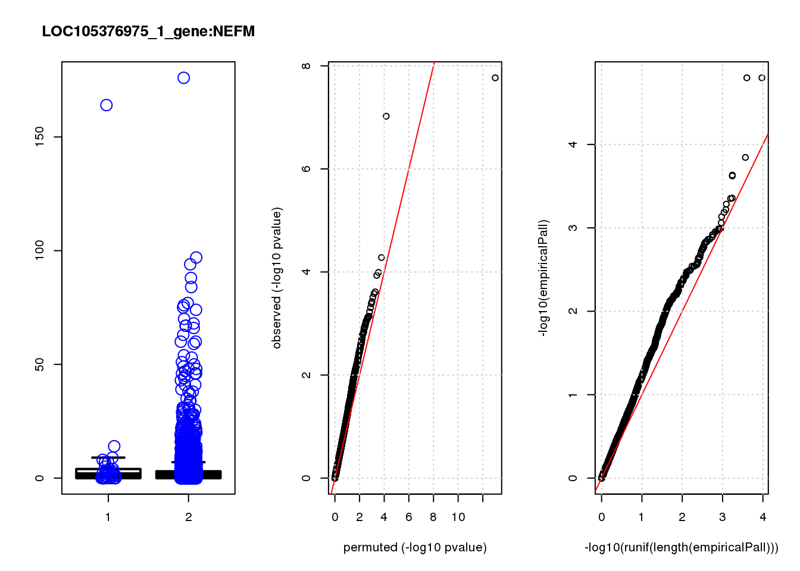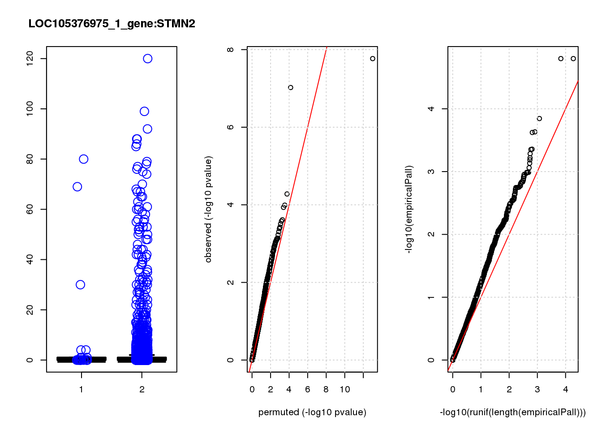
[1] "LOC105376975_2_gene_edgeR-qlf_Neg2.Rd"
logFC logCPM F PValue FDR empiricalP empiricalP.FDR #in_real
SLC7A11 -1.70 6.6 19 1.4e-05 0.046 0.00014 0.33 1
PLP1 1.10 6.4 19 1.5e-05 0.046 0.00015 0.33 2
NQO1 -1.60 7.4 17 4.1e-05 0.086 0.00021 0.33 3
NAT9 -0.99 6.8 16 5.7e-05 0.089 0.00022 0.33 4
AGPS -1.20 6.4 16 9.5e-05 0.120 0.00026 0.33 5
ATF5 -1.40 6.9 14 1.5e-04 0.160 0.00036 0.38 6
MRPS34 0.39 8.4 14 1.9e-04 0.170 0.00043 0.39 7
CEBPB -1.40 6.8 13 3.5e-04 0.250 0.00069 0.49 8
FHL1 0.59 7.1 13 3.6e-04 0.250 0.00070 0.49 9
WARS -0.84 7.3 12 6.5e-04 0.370 0.00110 0.55 10
1e-04 NA NA NA NA NA NA NA 5
1e-05 NA NA NA NA NA NA NA 0
1e-06 NA NA NA NA NA NA NA 0
1e-07 NA NA NA NA NA NA NA 0
1e-08 NA NA NA NA NA NA NA 0
1e-09 NA NA NA NA NA NA NA 0
1e-10 NA NA NA NA NA NA NA 0
#in_perm EmpiricalFDR
SLC7A11 0.90 0.90
PLP1 0.93 0.47
NQO1 1.30 0.44
NAT9 1.40 0.34
AGPS 1.70 0.33
ATF5 2.30 0.38
MRPS34 2.70 0.39
CEBPB 4.40 0.55
FHL1 4.40 0.49
WARS 6.70 0.67
1e-04 1.70 0.35
1e-05 0.80 Inf
1e-06 0.47 Inf
1e-07 0.37 Inf
1e-08 0.20 Inf
1e-09 0.17 Inf
1e-10 0.13 Inf
[1] "LOC105376975_3_gene_edgeR-qlf_Neg2.Rd"
logFC logCPM F PValue FDR empiricalP empiricalP.FDR
RP11-46C20.1 2.4 6.4 23.0 1.9e-06 0.012 9.5e-05 0.60
ACBD3 1.6 6.6 13.0 3.1e-04 0.680 6.4e-04 0.87
FNBP4 -3.4 6.8 12.0 4.2e-04 0.680 7.5e-04 0.87
PLGRKT -3.4 6.7 11.0 7.1e-04 0.680 1.0e-03 0.87
KIF5C -2.5 7.2 10.0 1.3e-03 0.680 1.7e-03 0.87
RIF1 -3.3 6.7 10.0 1.3e-03 0.680 1.7e-03 0.87
PPP2R1B -3.0 6.6 9.9 1.7e-03 0.680 2.0e-03 0.87
RQCD1 -3.1 6.6 9.8 1.8e-03 0.680 2.1e-03 0.87
OSBPL1A -3.1 6.6 9.7 1.8e-03 0.680 2.1e-03 0.87
HES4 -2.3 7.6 9.5 2.1e-03 0.680 2.4e-03 0.87
1e-04 NA NA NA NA NA NA NA
1e-05 NA NA NA NA NA NA NA
1e-06 NA NA NA NA NA NA NA
1e-07 NA NA NA NA NA NA NA
1e-08 NA NA NA NA NA NA NA
1e-09 NA NA NA NA NA NA NA
1e-10 NA NA NA NA NA NA NA
#in_real #in_perm EmpiricalFDR
RP11-46C20.1 1 0.60 0.6
ACBD3 2 4.00 2.0
FNBP4 3 4.70 1.6
PLGRKT 4 6.60 1.6
KIF5C 5 10.00 2.1
RIF1 6 10.00 1.7
PPP2R1B 7 12.00 1.8
RQCD1 8 13.00 1.6
OSBPL1A 9 13.00 1.5
HES4 10 15.00 1.5
1e-04 1 2.20 2.2
1e-05 1 0.90 0.9
1e-06 0 0.50 Inf
1e-07 0 0.37 Inf
1e-08 0 0.30 Inf
1e-09 0 0.20 Inf
1e-10 0 0.17 Inf
[1] "miR137_1_gene_edgeR-qlf_Neg2.Rd"
logFC logCPM F PValue FDR empiricalP empiricalP.FDR #in_real
YWHAZ -0.48 8.3 13 0.00030 0.91 0.00064 0.92 1
ABHD5 -1.20 6.4 13 0.00055 0.91 0.00100 0.92 2
DPH2 -0.86 6.8 11 0.00073 0.91 0.00120 0.92 3
CORO1C -0.91 6.7 11 0.00110 0.91 0.00160 0.92 4
APMAP -0.58 7.3 11 0.00110 0.91 0.00170 0.92 5
GADD45G -1.90 7.5 11 0.00110 0.91 0.00170 0.92 6
PTBP1 -0.44 8.0 10 0.00160 0.91 0.00220 0.92 7
VKORC1L1 -0.96 6.4 10 0.00160 0.91 0.00220 0.92 8
ATM -1.00 6.4 10 0.00160 0.91 0.00240 0.92 9
CLP1 -1.10 6.4 11 0.00170 0.91 0.00250 0.92 10
1e-04 NA NA NA NA NA NA NA 0
1e-05 NA NA NA NA NA NA NA 0
1e-06 NA NA NA NA NA NA NA 0
1e-07 NA NA NA NA NA NA NA 0
1e-08 NA NA NA NA NA NA NA 0
1e-09 NA NA NA NA NA NA NA 0
1e-10 NA NA NA NA NA NA NA 0
#in_perm EmpiricalFDR
YWHAZ 4.100 4.1
ABHD5 6.500 3.2
DPH2 7.900 2.6
CORO1C 10.000 2.6
APMAP 11.000 2.1
GADD45G 11.000 1.8
PTBP1 14.000 2.0
VKORC1L1 14.000 1.8
ATM 15.000 1.7
CLP1 16.000 1.6
1e-04 2.100 Inf
1e-05 0.800 Inf
1e-06 0.300 Inf
1e-07 0.200 Inf
1e-08 0.100 Inf
1e-09 0.067 Inf
1e-10 0.067 Inf
[1] "miR137_2_gene_edgeR-qlf_Neg2.Rd"
logFC logCPM F PValue FDR empiricalP empiricalP.FDR #in_real
SLC4A1AP -1.60 6.6 17 0.00003 0.19 0.00024 0.91 1
RCAN1 0.99 6.5 14 0.00020 0.44 0.00061 0.91 2
HAUS6 -1.30 6.5 13 0.00027 0.44 0.00072 0.91 3
TOMM5 0.85 6.6 13 0.00028 0.44 0.00072 0.91 4
KHDRBS3 -1.40 6.4 12 0.00048 0.61 0.00098 0.91 5
PRKAB1 -1.10 6.7 12 0.00063 0.67 0.00130 0.91 6
CDC23 -1.10 6.7 11 0.00087 0.70 0.00150 0.91 7
AGK -1.30 6.4 12 0.00091 0.70 0.00150 0.91 8
TRIM36 -1.30 6.4 11 0.00100 0.70 0.00160 0.91 9
TUBD1 0.84 6.4 11 0.00110 0.70 0.00180 0.91 10
1e-04 NA NA NA NA NA NA NA 1
1e-05 NA NA NA NA NA NA NA 0
1e-06 NA NA NA NA NA NA NA 0
1e-07 NA NA NA NA NA NA NA 0
1e-08 NA NA NA NA NA NA NA 0
1e-09 NA NA NA NA NA NA NA 0
1e-10 NA NA NA NA NA NA NA 0
#in_perm EmpiricalFDR
SLC4A1AP 1.50 1.5
RCAN1 3.90 1.9
HAUS6 4.50 1.5
TOMM5 4.60 1.1
KHDRBS3 6.20 1.2
PRKAB1 8.00 1.3
CDC23 9.50 1.4
AGK 9.70 1.2
TRIM36 10.00 1.1
TUBD1 11.00 1.1
1e-04 2.60 2.6
1e-05 0.93 Inf
1e-06 0.50 Inf
1e-07 0.30 Inf
1e-08 0.23 Inf
1e-09 0.20 Inf
1e-10 0.17 Inf
[1] "miR137_3_gene_edgeR-qlf_Neg2.Rd"
logFC logCPM F PValue FDR empiricalP empiricalP.FDR #in_real
ADAM15 0.78 6.4 15 0.00011 0.46 0.00033 0.98 1
TUBB2A 0.52 8.8 14 0.00023 0.46 0.00054 0.98 2
NDUFB11 -0.28 9.1 13 0.00028 0.46 0.00061 0.98 3
S100A16 0.78 6.6 13 0.00029 0.46 0.00062 0.98 4
SOD2 -0.95 6.4 13 0.00046 0.54 0.00084 0.99 5
DST 0.67 6.6 12 0.00052 0.54 0.00095 0.99 6
PHC1 -0.90 6.4 12 0.00069 0.63 0.00120 0.99 7
ABLIM1 -0.87 6.4 11 0.00110 0.85 0.00160 0.99 8
TTC37 -0.82 6.4 10 0.00150 0.85 0.00200 0.99 9
PDLIM7 0.40 8.4 10 0.00150 0.85 0.00200 0.99 10
1e-04 NA NA NA NA NA NA NA 0
1e-05 NA NA NA NA NA NA NA 0
1e-06 NA NA NA NA NA NA NA 0
1e-07 NA NA NA NA NA NA NA 0
1e-08 NA NA NA NA NA NA NA 0
1e-09 NA NA NA NA NA NA NA 0
1e-10 NA NA NA NA NA NA NA 0
#in_perm EmpiricalFDR
ADAM15 2.100 2.10
TUBB2A 3.400 1.70
NDUFB11 3.900 1.30
S100A16 3.900 0.98
SOD2 5.300 1.10
DST 6.000 0.99
PHC1 7.500 1.10
ABLIM1 10.000 1.30
TTC37 13.000 1.40
PDLIM7 13.000 1.30
1e-04 1.900 Inf
1e-05 0.930 Inf
1e-06 0.470 Inf
1e-07 0.270 Inf
1e-08 0.200 Inf
1e-09 0.100 Inf
1e-10 0.067 Inf
[1] "NAB2_1_gene_edgeR-qlf_Neg2.Rd"
logFC logCPM F PValue FDR empiricalP empiricalP.FDR
DDX10 1.30 6.5 30 3.7e-08 0.00023 2.6e-05 0.17
ZBTB20 1.10 6.5 18 2.0e-05 0.06400 1.5e-04 0.47
CUEDC1 -1.40 6.5 15 1.0e-04 0.16000 3.0e-04 0.48
WNT7B -1.70 6.5 15 1.0e-04 0.16000 3.0e-04 0.48
PRKAB1 -1.20 6.7 14 1.9e-04 0.24000 4.1e-04 0.52
EIF2B2 -0.93 6.9 13 3.7e-04 0.39000 6.0e-04 0.61
TMEM248 -1.20 6.5 12 4.5e-04 0.40000 6.8e-04 0.61
RP11-143E21.7 0.79 6.8 12 5.4e-04 0.42000 7.8e-04 0.62
EEF2KMT -0.99 6.8 12 6.2e-04 0.44000 8.8e-04 0.62
WDR18 -0.68 7.4 11 7.7e-04 0.48000 1.0e-03 0.65
1e-04 NA NA NA NA NA NA NA
1e-05 NA NA NA NA NA NA NA
1e-06 NA NA NA NA NA NA NA
1e-07 NA NA NA NA NA NA NA
1e-08 NA NA NA NA NA NA NA
1e-09 NA NA NA NA NA NA NA
1e-10 NA NA NA NA NA NA NA
#in_real #in_perm EmpiricalFDR
DDX10 1 0.170 0.17
ZBTB20 2 0.930 0.47
CUEDC1 3 1.900 0.62
WNT7B 4 1.900 0.48
PRKAB1 5 2.600 0.52
EIF2B2 6 3.800 0.63
TMEM248 7 4.300 0.61
RP11-143E21.7 8 4.900 0.62
EEF2KMT 9 5.600 0.62
WDR18 10 6.500 0.65
1e-04 2 1.800 0.92
1e-05 1 0.570 0.57
1e-06 1 0.400 0.40
1e-07 1 0.200 0.20
1e-08 0 0.130 Inf
1e-09 0 0.067 Inf
1e-10 0 0.033 Inf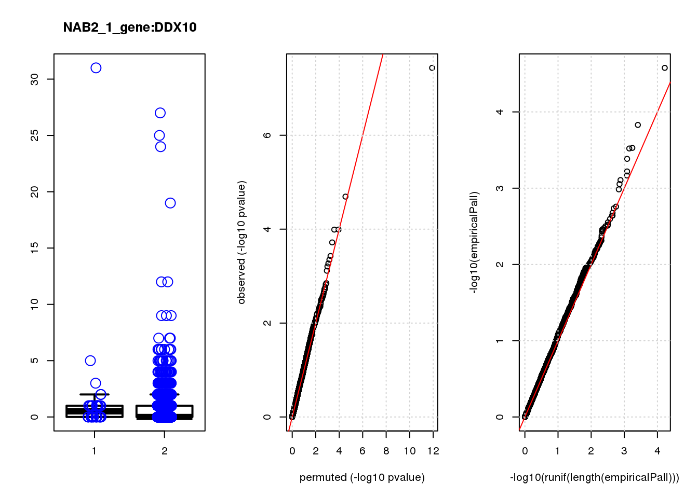
[1] "NAB2_2_gene_edgeR-qlf_Neg2.Rd"
logFC logCPM F PValue FDR empiricalP empiricalP.FDR
CLU 1.80 7.4 68 2.1e-16 1.3e-12 5.3e-06 0.033
STMN2 2.20 7.1 26 4.0e-07 1.2e-03 3.7e-05 0.120
NQO1 1.40 7.4 21 4.1e-06 8.7e-03 9.5e-05 0.170
FTH1 0.96 12.0 20 6.6e-06 1.0e-02 1.1e-04 0.170
RP11-14N7.2 1.10 7.3 18 2.0e-05 2.6e-02 1.7e-04 0.170
GAP43 1.20 8.2 17 3.6e-05 3.0e-02 2.1e-04 0.170
CTD-2006C1.2 1.00 6.8 17 3.7e-05 3.0e-02 2.1e-04 0.170
IFI27L1 1.00 6.6 17 3.8e-05 3.0e-02 2.2e-04 0.170
SQSTM1 1.20 8.0 17 4.9e-05 3.4e-02 2.4e-04 0.170
TUBB2B 0.58 11.0 15 1.0e-04 6.4e-02 3.3e-04 0.210
1e-04 NA NA NA NA NA NA NA
1e-05 NA NA NA NA NA NA NA
1e-06 NA NA NA NA NA NA NA
1e-07 NA NA NA NA NA NA NA
1e-08 NA NA NA NA NA NA NA
1e-09 NA NA NA NA NA NA NA
1e-10 NA NA NA NA NA NA NA
#in_real #in_perm EmpiricalFDR
CLU 1 0.033 0.033
STMN2 2 0.230 0.120
NQO1 3 0.600 0.200
FTH1 4 0.670 0.170
RP11-14N7.2 5 1.100 0.210
GAP43 6 1.300 0.220
CTD-2006C1.2 7 1.300 0.190
IFI27L1 8 1.400 0.170
SQSTM1 9 1.500 0.170
TUBB2B 10 2.100 0.210
1e-04 9 2.100 0.230
1e-05 4 0.770 0.190
1e-06 2 0.270 0.130
1e-07 1 0.200 0.200
1e-08 1 0.130 0.130
1e-09 1 0.067 0.067
1e-10 1 0.067 0.067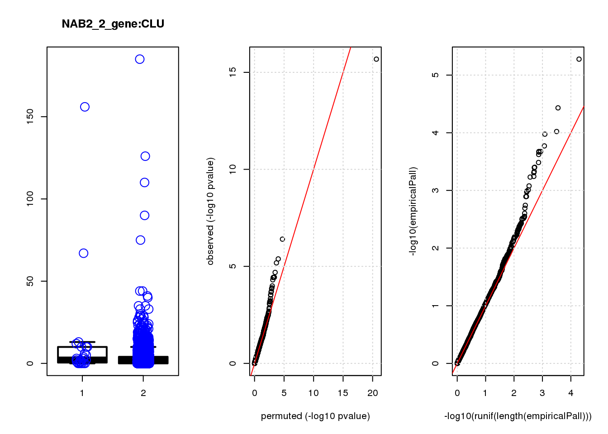 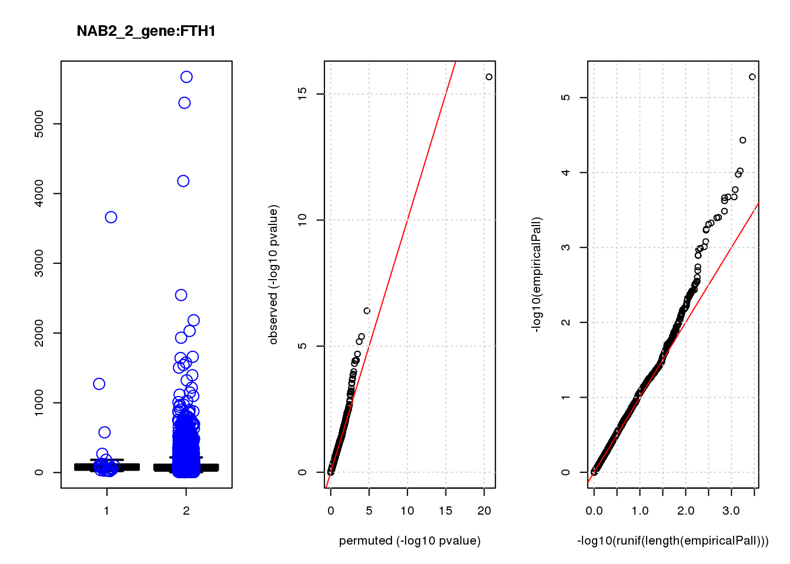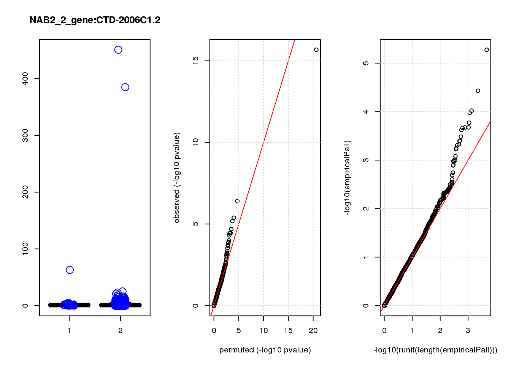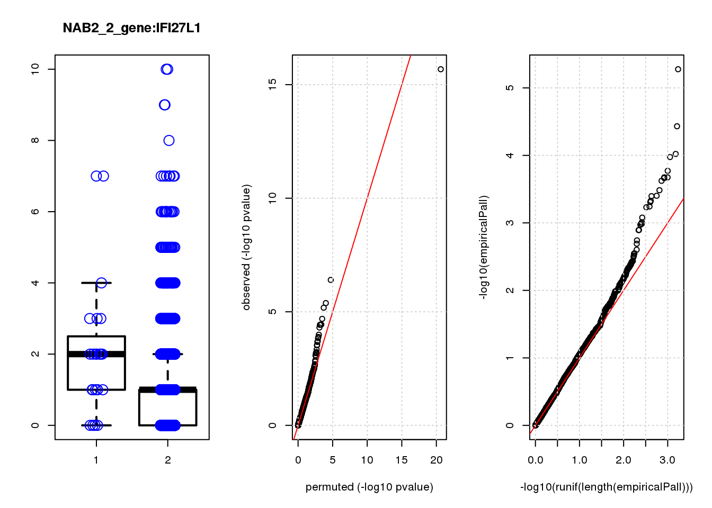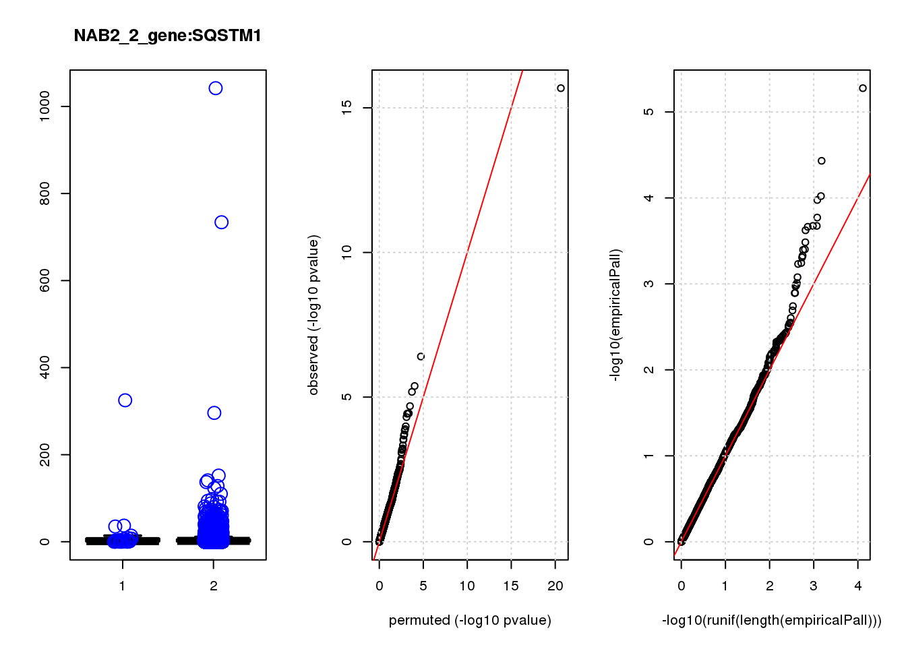
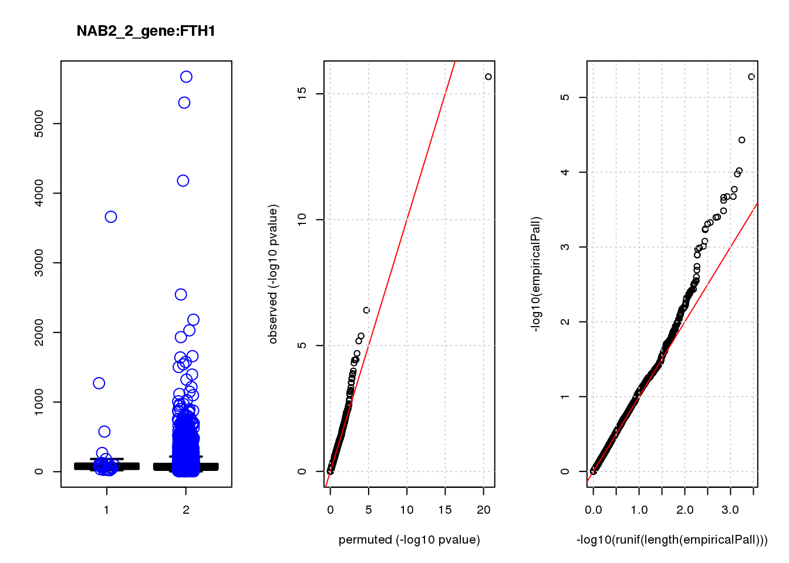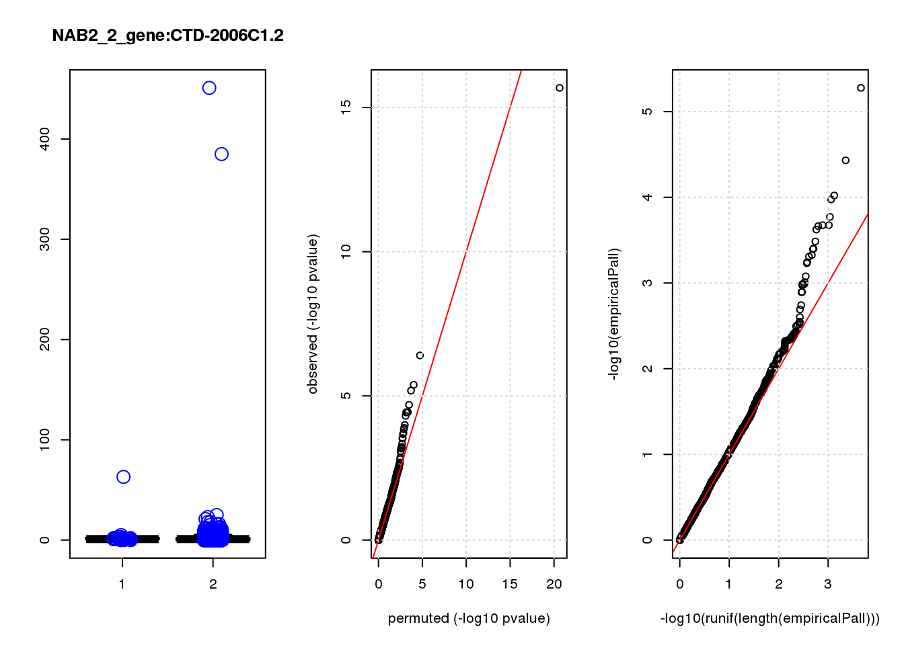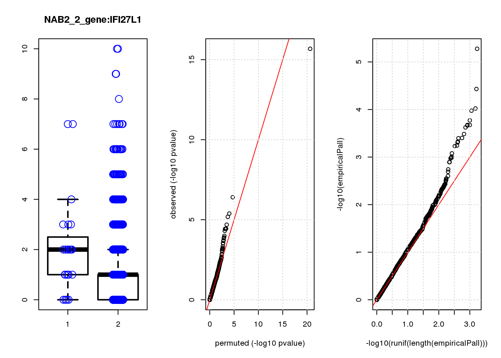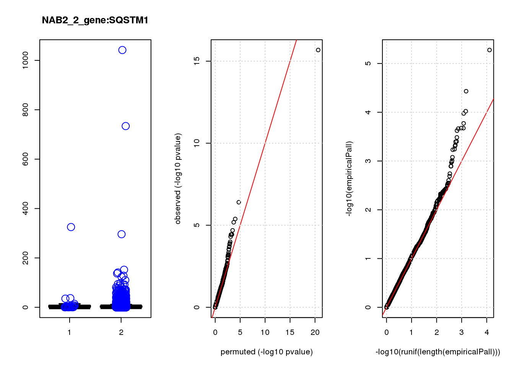
[1] "NAB2_3_gene_edgeR-qlf_Neg2.Rd"
logFC logCPM F PValue FDR empiricalP empiricalP.FDR #in_real
IRF2BP1 -1.70 6.4 15 0.00029 0.68 0.00074 0.95 1
PPP1R14C 1.20 6.7 13 0.00032 0.68 0.00077 0.95 2
GTF3C4 -1.50 6.5 12 0.00050 0.68 0.00100 0.95 3
ZNF121 0.96 6.4 12 0.00063 0.68 0.00120 0.95 4
TMCO3 -1.50 6.4 12 0.00066 0.68 0.00120 0.95 5
TP53 -1.00 7.0 11 0.00070 0.68 0.00130 0.95 6
EPHA4 1.00 6.4 11 0.00090 0.68 0.00150 0.95 7
CBFB -1.40 6.4 11 0.00110 0.68 0.00170 0.95 8
STRA13 -0.65 8.1 11 0.00110 0.68 0.00170 0.95 9
GLUL 0.64 7.9 11 0.00120 0.68 0.00180 0.95 10
1e-04 NA NA NA NA NA NA NA 0
1e-05 NA NA NA NA NA NA NA 0
1e-06 NA NA NA NA NA NA NA 0
1e-07 NA NA NA NA NA NA NA 0
1e-08 NA NA NA NA NA NA NA 0
1e-09 NA NA NA NA NA NA NA 0
1e-10 NA NA NA NA NA NA NA 0
#in_perm EmpiricalFDR
IRF2BP1 4.60 4.6
PPP1R14C 4.90 2.4
GTF3C4 6.40 2.1
ZNF121 7.50 1.9
TMCO3 7.80 1.6
TP53 8.20 1.4
EPHA4 9.60 1.4
CBFB 11.00 1.3
STRA13 11.00 1.2
GLUL 11.00 1.1
1e-04 2.40 Inf
1e-05 0.97 Inf
1e-06 0.60 Inf
1e-07 0.33 Inf
1e-08 0.27 Inf
1e-09 0.20 Inf
1e-10 0.10 Inf
[1] "NGEF_1_gene_edgeR-qlf_Neg2.Rd"
logFC logCPM F PValue FDR empiricalP empiricalP.FDR #in_real
SKP1 -0.77 8.9 16 6.8e-05 0.43 0.00014 0.68 1
HSD17B10 -0.96 7.9 12 4.5e-04 0.60 0.00062 0.68 2
AKAP8L -2.70 6.5 12 6.7e-04 0.60 0.00089 0.68 3
MRPL49 -1.50 7.3 11 9.1e-04 0.60 0.00130 0.68 4
PHLDA3 -2.00 7.8 11 9.2e-04 0.60 0.00130 0.68 5
PIDD1 -2.60 6.5 11 9.5e-04 0.60 0.00140 0.68 6
PARD6A -2.40 6.4 11 1.1e-03 0.60 0.00150 0.68 7
TMEM167A -1.10 7.6 11 1.1e-03 0.60 0.00160 0.68 8
POMP -0.62 9.3 10 1.2e-03 0.60 0.00170 0.68 9
C14orf2 -0.54 9.2 10 1.2e-03 0.60 0.00170 0.68 10
1e-04 NA NA NA NA NA NA NA 1
1e-05 NA NA NA NA NA NA NA 0
1e-06 NA NA NA NA NA NA NA 0
1e-07 NA NA NA NA NA NA NA 0
1e-08 NA NA NA NA NA NA NA 0
1e-09 NA NA NA NA NA NA NA 0
1e-10 NA NA NA NA NA NA NA 0
#in_perm EmpiricalFDR
SKP1 0.90 0.9
HSD17B10 3.90 2.0
AKAP8L 5.60 1.9
MRPL49 8.40 2.1
PHLDA3 8.50 1.7
PIDD1 8.60 1.4
PARD6A 9.30 1.3
TMEM167A 9.90 1.2
POMP 10.00 1.2
C14orf2 10.00 1.0
1e-04 1.10 1.1
1e-05 0.47 Inf
1e-06 0.30 Inf
1e-07 0.17 Inf
1e-08 0.13 Inf
1e-09 0.13 Inf
1e-10 0.13 Inf
[1] "NGEF_2_gene_edgeR-qlf_Neg2.Rd"
logFC logCPM F PValue FDR empiricalP empiricalP.FDR #in_real
C2orf69 2.5 6.5 15.0 0.00012 0.73 0.00020 0.94 1
CDCA2 2.5 6.4 12.0 0.00060 0.81 0.00044 0.94 2
EMG1 1.8 7.6 11.0 0.00110 0.81 0.00067 0.94 3
MSANTD2 2.3 6.4 9.9 0.00160 0.81 0.00097 0.94 4
TMCO1 -2.9 7.7 9.6 0.00200 0.81 0.00110 0.94 5
TROAP 2.3 6.6 9.5 0.00200 0.81 0.00110 0.94 6
GLOD4 1.5 7.3 9.4 0.00220 0.81 0.00120 0.94 7
SRD5A3 2.2 6.4 9.3 0.00220 0.81 0.00120 0.94 8
MIS18BP1 2.3 6.5 8.9 0.00280 0.81 0.00150 0.94 9
KDELR1 -2.3 8.2 8.8 0.00300 0.81 0.00150 0.94 10
1e-04 NA NA NA NA NA NA NA 0
1e-05 NA NA NA NA NA NA NA 0
1e-06 NA NA NA NA NA NA NA 0
1e-07 NA NA NA NA NA NA NA 0
1e-08 NA NA NA NA NA NA NA 0
1e-09 NA NA NA NA NA NA NA 0
1e-10 NA NA NA NA NA NA NA 0
#in_perm EmpiricalFDR
C2orf69 1.30 1.30
CDCA2 2.80 1.40
EMG1 4.20 1.40
MSANTD2 6.10 1.50
TMCO1 6.90 1.40
TROAP 7.10 1.20
GLOD4 7.50 1.10
SRD5A3 7.70 0.96
MIS18BP1 9.10 1.00
KDELR1 9.40 0.94
1e-04 1.20 Inf
1e-05 0.57 Inf
1e-06 0.47 Inf
1e-07 0.33 Inf
1e-08 0.20 Inf
1e-09 0.13 Inf
1e-10 0.10 Inf
[1] "PBRM1_1_gene_edgeR-qlf_Neg2.Rd"
logFC logCPM F PValue FDR empiricalP empiricalP.FDR
CDC25B 2.5 6.9 20.0 8.2e-06 0.051 0.00015 0.55
RP11-339B21.12 2.4 6.7 18.0 2.1e-05 0.068 0.00017 0.55
NDC80 2.2 6.6 14.0 2.2e-04 0.380 0.00046 0.61
DLL1 2.6 6.8 13.0 2.9e-04 0.380 0.00048 0.61
YWHAB -1.5 8.7 13.0 3.6e-04 0.380 0.00058 0.61
PLK1 2.3 7.4 13.0 3.7e-04 0.380 0.00058 0.61
CHEK2 2.1 6.4 12.0 6.9e-04 0.620 0.00087 0.74
JUN 1.7 7.8 11.0 7.9e-04 0.620 0.00094 0.74
ELAVL1 -1.5 8.0 10.0 1.2e-03 0.730 0.00140 0.83
PTTG1 1.8 8.4 9.6 1.9e-03 0.730 0.00180 0.83
1e-04 NA NA NA NA NA NA NA
1e-05 NA NA NA NA NA NA NA
1e-06 NA NA NA NA NA NA NA
1e-07 NA NA NA NA NA NA NA
1e-08 NA NA NA NA NA NA NA
1e-09 NA NA NA NA NA NA NA
1e-10 NA NA NA NA NA NA NA
#in_real #in_perm EmpiricalFDR
CDC25B 1 0.97 0.97
RP11-339B21.12 2 1.10 0.55
NDC80 3 2.90 0.96
DLL1 4 3.00 0.76
YWHAB 5 3.70 0.73
PLK1 6 3.70 0.61
CHEK2 7 5.50 0.78
JUN 8 5.90 0.74
ELAVL1 9 8.50 0.94
PTTG1 10 11.00 1.10
1e-04 2 2.00 1.00
1e-05 1 1.00 1.00
1e-06 0 0.63 Inf
1e-07 0 0.37 Inf
1e-08 0 0.30 Inf
1e-09 0 0.30 Inf
1e-10 0 0.30 Inf
[1] "PBRM1_2_gene_edgeR-qlf_Neg2.Rd"
logFC logCPM F PValue FDR empiricalP empiricalP.FDR
RP4-758J18.2 -2.4 6.6 14 0.00017 0.6 0.00034 0.77
CD9 1.5 6.5 14 0.00021 0.6 0.00043 0.77
TFPT -2.1 6.7 12 0.00046 0.6 0.00078 0.77
NRDE2 1.3 6.4 12 0.00051 0.6 0.00081 0.77
AZI2 -1.8 6.8 11 0.00074 0.6 0.00110 0.77
IFITM3 1.4 8.6 11 0.00094 0.6 0.00140 0.77
INTU 1.2 6.7 11 0.00099 0.6 0.00140 0.77
TMEM14A 1.1 6.8 11 0.00110 0.6 0.00150 0.77
F2R -2.1 6.5 11 0.00110 0.6 0.00160 0.77
SAP130 -2.2 6.4 12 0.00120 0.6 0.00170 0.77
1e-04 NA NA NA NA NA NA NA
1e-05 NA NA NA NA NA NA NA
1e-06 NA NA NA NA NA NA NA
1e-07 NA NA NA NA NA NA NA
1e-08 NA NA NA NA NA NA NA
1e-09 NA NA NA NA NA NA NA
1e-10 NA NA NA NA NA NA NA
#in_real #in_perm EmpiricalFDR
RP4-758J18.2 1 2.200 2.2
CD9 2 2.700 1.3
TFPT 3 4.900 1.6
NRDE2 4 5.100 1.3
AZI2 5 7.000 1.4
IFITM3 6 8.500 1.4
INTU 7 9.000 1.3
TMEM14A 8 9.700 1.2
F2R 9 9.800 1.1
SAP130 10 11.000 1.1
1e-04 0 1.500 Inf
1e-05 0 0.700 Inf
1e-06 0 0.330 Inf
1e-07 0 0.230 Inf
1e-08 0 0.130 Inf
1e-09 0 0.067 Inf
1e-10 0 0.067 Inf
[1] "PBRM1_3_gene_edgeR-qlf_Neg2.Rd"
logFC logCPM F PValue FDR empiricalP empiricalP.FDR
TPM2 3.5 7.2 33 8.6e-09 5.4e-05 1.1e-05 0.067
SPARC 1.6 8.5 20 8.4e-06 2.6e-02 1.1e-04 0.340
HEBP1 2.0 6.7 17 4.9e-05 1.0e-01 2.0e-04 0.340
HDAC2 -2.0 8.6 16 6.4e-05 1.0e-01 2.2e-04 0.340
PNP 2.3 6.4 15 9.9e-05 1.2e-01 3.0e-04 0.370
CCND2 2.3 6.9 14 1.6e-04 1.6e-01 3.8e-04 0.390
SESN3 2.3 6.4 13 2.5e-04 2.2e-01 4.7e-04 0.410
LRRC47 -4.4 7.2 13 3.7e-04 2.9e-01 6.0e-04 0.410
CMBL 2.1 6.7 12 5.6e-04 3.3e-01 7.8e-04 0.410
HIST3H2A 2.0 6.9 12 5.8e-04 3.3e-01 7.8e-04 0.410
1e-04 NA NA NA NA NA NA NA
1e-05 NA NA NA NA NA NA NA
1e-06 NA NA NA NA NA NA NA
1e-07 NA NA NA NA NA NA NA
1e-08 NA NA NA NA NA NA NA
1e-09 NA NA NA NA NA NA NA
1e-10 NA NA NA NA NA NA NA
#in_real #in_perm EmpiricalFDR
TPM2 1 0.067 0.067
SPARC 2 0.700 0.350
HEBP1 3 1.200 0.410
HDAC2 4 1.400 0.340
PNP 5 1.900 0.370
CCND2 6 2.400 0.390
SESN3 7 3.000 0.420
LRRC47 8 3.800 0.470
CMBL 9 4.900 0.540
HIST3H2A 10 4.900 0.490
1e-04 5 1.900 0.370
1e-05 2 0.700 0.350
1e-06 1 0.470 0.470
1e-07 1 0.300 0.300
1e-08 1 0.067 0.067
1e-09 0 0.067 Inf
1e-10 0 0.067 Inf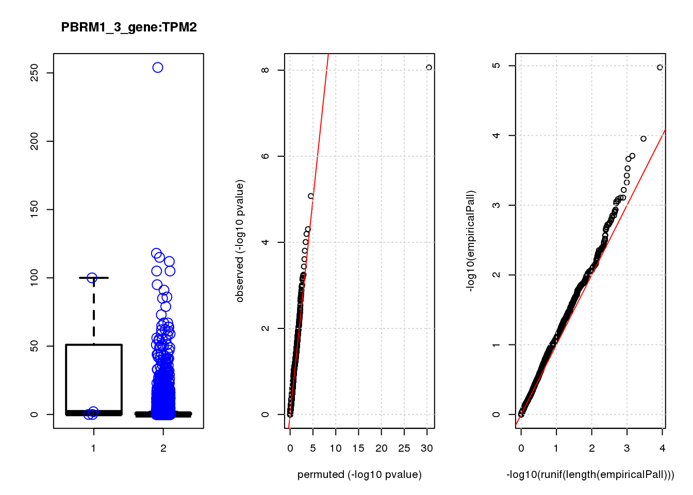
[1] "PCDHA123_1_gene_edgeR-qlf_Neg2.Rd"
logFC logCPM F PValue FDR empiricalP empiricalP.FDR #in_real
PFDN4 0.41 8.2 15.0 0.00014 0.86 0.00048 0.93 1
NUP58 -0.94 6.5 13.0 0.00031 0.92 0.00073 0.93 2
AFMID 0.69 6.4 12.0 0.00060 0.92 0.00110 0.93 3
SIAH1 -0.82 6.6 12.0 0.00062 0.92 0.00110 0.93 4
FANCA -0.92 6.5 11.0 0.00073 0.92 0.00120 0.93 5
ZCCHC7 -0.89 6.4 11.0 0.00088 0.92 0.00140 0.93 6
VGF 0.78 6.7 11.0 0.00120 0.95 0.00180 0.93 7
MAT2A -0.57 7.2 10.0 0.00120 0.95 0.00180 0.93 8
YPEL1 -0.88 6.4 10.0 0.00160 0.95 0.00210 0.93 9
MAGOH -0.41 7.6 9.6 0.00200 0.95 0.00260 0.93 10
1e-04 NA NA NA NA NA NA NA 0
1e-05 NA NA NA NA NA NA NA 0
1e-06 NA NA NA NA NA NA NA 0
1e-07 NA NA NA NA NA NA NA 0
1e-08 NA NA NA NA NA NA NA 0
1e-09 NA NA NA NA NA NA NA 0
1e-10 NA NA NA NA NA NA NA 0
#in_perm EmpiricalFDR
PFDN4 3.00 3.0
NUP58 4.60 2.3
AFMID 6.90 2.3
SIAH1 7.00 1.7
FANCA 7.70 1.5
ZCCHC7 8.90 1.5
VGF 11.00 1.6
MAT2A 11.00 1.4
YPEL1 13.00 1.5
MAGOH 17.00 1.7
1e-04 2.80 Inf
1e-05 1.00 Inf
1e-06 0.50 Inf
1e-07 0.30 Inf
1e-08 0.23 Inf
1e-09 0.17 Inf
1e-10 0.17 Inf
[1] "PCDHA123_2_gene_edgeR-qlf_Neg2.Rd"
logFC logCPM F PValue FDR empiricalP empiricalP.FDR #in_real
SNAPC1 0.92 6.5 20 9.5e-06 0.039 0.00022 0.78 1
CTGF 0.82 8.2 19 1.2e-05 0.039 0.00025 0.78 2
CYR61 0.65 7.7 15 1.2e-04 0.250 0.00064 0.99 3
CAPN10 0.63 6.4 12 7.5e-04 0.890 0.00170 0.99 4
SKI -0.82 6.4 12 9.4e-04 0.890 0.00190 0.99 5
NIFK 0.35 7.8 11 9.5e-04 0.890 0.00190 0.99 6
PNMA2 -0.76 6.5 10 1.2e-03 0.890 0.00220 0.99 7
HIC2 -0.72 6.6 10 1.3e-03 0.890 0.00220 0.99 8
FOXJ1 -0.86 6.4 10 1.3e-03 0.890 0.00220 0.99 9
IFNAR2 -0.79 6.4 10 1.7e-03 0.920 0.00270 0.99 10
1e-04 NA NA NA NA NA NA NA 2
1e-05 NA NA NA NA NA NA NA 1
1e-06 NA NA NA NA NA NA NA 0
1e-07 NA NA NA NA NA NA NA 0
1e-08 NA NA NA NA NA NA NA 0
1e-09 NA NA NA NA NA NA NA 0
1e-10 NA NA NA NA NA NA NA 0
#in_perm EmpiricalFDR
SNAPC1 1.40 1.40
CTGF 1.60 0.78
CYR61 4.10 1.40
CAPN10 11.00 2.60
SKI 12.00 2.40
NIFK 12.00 2.00
PNMA2 14.00 2.00
HIC2 14.00 1.70
FOXJ1 14.00 1.60
IFNAR2 17.00 1.70
1e-04 3.70 1.80
1e-05 1.40 1.40
1e-06 0.93 Inf
1e-07 0.57 Inf
1e-08 0.47 Inf
1e-09 0.30 Inf
1e-10 0.27 Inf
[1] "PCDHA123_3_gene_edgeR-qlf_Neg2.Rd"
logFC logCPM F PValue FDR empiricalP empiricalP.FDR #in_real
SOX4 -0.84 8.6 14 0.00015 0.72 0.00058 1 1
PTPN11 0.64 6.5 12 0.00044 0.72 0.00110 1 2
SERPINH1 0.45 7.6 12 0.00065 0.72 0.00150 1 3
SMIM8 0.60 6.5 11 0.00073 0.72 0.00160 1 4
CDKN1C -1.30 6.9 11 0.00095 0.72 0.00180 1 5
HIC2 -0.74 6.6 11 0.00100 0.72 0.00190 1 6
NRDC -0.60 6.9 11 0.00100 0.72 0.00190 1 7
DCBLD2 -0.78 6.6 11 0.00110 0.72 0.00200 1 8
STMN2 -1.50 7.2 11 0.00110 0.72 0.00200 1 9
TMEM30A -0.79 6.5 11 0.00110 0.72 0.00210 1 10
1e-04 NA NA NA NA NA NA NA 0
1e-05 NA NA NA NA NA NA NA 0
1e-06 NA NA NA NA NA NA NA 0
1e-07 NA NA NA NA NA NA NA 0
1e-08 NA NA NA NA NA NA NA 0
1e-09 NA NA NA NA NA NA NA 0
1e-10 NA NA NA NA NA NA NA 0
#in_perm EmpiricalFDR
SOX4 3.70 3.7
PTPN11 6.70 3.4
SERPINH1 9.20 3.1
SMIM8 9.80 2.5
CDKN1C 12.00 2.3
HIC2 12.00 2.0
NRDC 12.00 1.7
DCBLD2 12.00 1.5
STMN2 13.00 1.4
TMEM30A 13.00 1.3
1e-04 2.70 Inf
1e-05 0.87 Inf
1e-06 0.40 Inf
1e-07 0.27 Inf
1e-08 0.17 Inf
1e-09 0.13 Inf
1e-10 0.10 Inf
[1] "pos_SNAP91_2_gene_edgeR-qlf_Neg2.Rd"
logFC logCPM F PValue FDR empiricalP empiricalP.FDR #in_real
TDG -4.5 7.3 11.0 0.00071 0.77 0.0012 0.96 1
LLPH -4.3 7.2 10.0 0.00130 0.77 0.0017 0.96 2
NHLRC3 2.1 6.5 10.0 0.00130 0.77 0.0018 0.96 3
USP16 -4.2 7.1 9.2 0.00240 0.77 0.0025 0.96 4
FOXB1 2.0 6.7 9.0 0.00280 0.77 0.0028 0.96 5
CCAR1 -2.8 7.5 8.8 0.00300 0.77 0.0029 0.96 6
GUF1 2.0 6.4 8.7 0.00330 0.77 0.0032 0.96 7
PPRC1 2.0 6.4 8.3 0.00390 0.77 0.0036 0.96 8
MCM5 1.9 6.9 8.2 0.00430 0.77 0.0039 0.96 9
EDC3 2.0 6.4 8.0 0.00470 0.77 0.0043 0.96 10
1e-04 NA NA NA NA NA NA NA 0
1e-05 NA NA NA NA NA NA NA 0
1e-06 NA NA NA NA NA NA NA 0
1e-07 NA NA NA NA NA NA NA 0
1e-08 NA NA NA NA NA NA NA 0
1e-09 NA NA NA NA NA NA NA 0
1e-10 NA NA NA NA NA NA NA 0
#in_perm EmpiricalFDR
TDG 7.60 7.6
LLPH 11.00 5.4
NHLRC3 11.00 3.7
USP16 16.00 4.0
FOXB1 17.00 3.5
CCAR1 18.00 3.1
GUF1 20.00 2.8
PPRC1 23.00 2.9
MCM5 25.00 2.7
EDC3 27.00 2.7
1e-04 3.40 Inf
1e-05 2.10 Inf
1e-06 1.30 Inf
1e-07 0.73 Inf
1e-08 0.57 Inf
1e-09 0.47 Inf
1e-10 0.40 Inf
[1] "pos_SNAP91_3_gene_edgeR-qlf_Neg2.Rd"
logFC logCPM F PValue FDR empiricalP empiricalP.FDR #in_real
SLC25A17 -1.60 6.5 15.0 0.00013 0.45 0.00039 1 1
ADI1 0.82 7.1 14.0 0.00018 0.45 0.00050 1 2
PHYKPL -1.60 6.4 14.0 0.00021 0.45 0.00053 1 3
COMMD10 -1.30 6.6 12.0 0.00070 1.00 0.00110 1 4
LONP1 -1.10 7.0 11.0 0.00084 1.00 0.00120 1 5
MAU2 -1.50 6.4 12.0 0.00096 1.00 0.00130 1 6
LONP2 -1.40 6.4 11.0 0.00110 1.00 0.00150 1 7
SERP1 -0.51 8.2 10.0 0.00140 1.00 0.00180 1 8
ARMC9 -1.40 6.3 11.0 0.00190 1.00 0.00230 1 9
MFN2 -1.20 6.5 9.4 0.00210 1.00 0.00250 1 10
1e-04 NA NA NA NA NA NA NA 0
1e-05 NA NA NA NA NA NA NA 0
1e-06 NA NA NA NA NA NA NA 0
1e-07 NA NA NA NA NA NA NA 0
1e-08 NA NA NA NA NA NA NA 0
1e-09 NA NA NA NA NA NA NA 0
1e-10 NA NA NA NA NA NA NA 0
#in_perm EmpiricalFDR
SLC25A17 2.50 2.5
ADI1 3.20 1.6
PHYKPL 3.30 1.1
COMMD10 6.70 1.7
LONP1 7.30 1.5
MAU2 8.30 1.4
LONP2 9.50 1.4
SERP1 11.00 1.4
ARMC9 15.00 1.6
MFN2 16.00 1.6
1e-04 2.30 Inf
1e-05 1.20 Inf
1e-06 0.77 Inf
1e-07 0.63 Inf
1e-08 0.47 Inf
1e-09 0.33 Inf
1e-10 0.33 Inf
[1] "PPP1R16B_1_gene_edgeR-qlf_Neg2.Rd"
logFC logCPM F PValue FDR empiricalP empiricalP.FDR #in_real
NEFM 1.20 7.5 20.0 8.6e-06 0.054 0.00011 0.57 1
CAV1 1.00 7.2 16.0 6.9e-05 0.180 0.00024 0.57 2
SRPK2 0.58 7.2 15.0 8.8e-05 0.180 0.00027 0.57 3
POLR3A -1.10 6.4 13.0 4.0e-04 0.640 0.00070 1.00 4
YIF1B -0.83 6.8 12.0 5.4e-04 0.680 0.00086 1.00 5
CLUAP1 -0.97 6.5 12.0 6.7e-04 0.710 0.00100 1.00 6
RHOB -0.96 6.6 10.0 1.3e-03 1.000 0.00170 1.00 7
SENP5 -0.90 6.4 9.2 2.4e-03 1.000 0.00290 1.00 8
PNKP 0.60 6.6 9.0 2.8e-03 1.000 0.00310 1.00 9
KLHDC4 0.67 6.4 9.2 2.9e-03 1.000 0.00320 1.00 10
1e-04 NA NA NA NA NA NA NA 3
1e-05 NA NA NA NA NA NA NA 1
1e-06 NA NA NA NA NA NA NA 0
1e-07 NA NA NA NA NA NA NA 0
1e-08 NA NA NA NA NA NA NA 0
1e-09 NA NA NA NA NA NA NA 0
1e-10 NA NA NA NA NA NA NA 0
#in_perm EmpiricalFDR
NEFM 0.670 0.67
CAV1 1.500 0.75
SRPK2 1.700 0.57
POLR3A 4.400 1.10
YIF1B 5.400 1.10
CLUAP1 6.600 1.10
RHOB 11.000 1.50
SENP5 18.000 2.30
PNKP 19.000 2.20
KLHDC4 20.000 2.00
1e-04 1.900 0.63
1e-05 0.670 0.67
1e-06 0.330 Inf
1e-07 0.170 Inf
1e-08 0.067 Inf
1e-09 0.033 Inf
1e-10 0.033 Inf
[1] "PPP1R16B_2_gene_edgeR-qlf_Neg2.Rd"
logFC logCPM F PValue FDR empiricalP empiricalP.FDR
DDX10 1.20 6.5 24.0 1.1e-06 0.007 6.3e-05 0.40
GADD45G 1.60 7.5 19.0 1.3e-05 0.041 1.5e-04 0.47
PMP22 -1.70 6.4 12.0 4.6e-04 0.970 9.8e-04 1.00
TAOK1 -1.10 6.6 11.0 7.5e-04 1.000 1.3e-03 1.00
CTD-2006C1.2 -1.10 6.8 10.0 1.6e-03 1.000 2.3e-03 1.00
MRPL36 -0.63 7.4 9.8 1.7e-03 1.000 2.5e-03 1.00
SHCBP1 0.80 6.5 9.3 2.3e-03 1.000 2.9e-03 1.00
WBSCR17 -1.10 6.5 9.3 2.4e-03 1.000 3.1e-03 1.00
FABP7 0.92 7.1 9.2 2.4e-03 1.000 3.1e-03 1.00
DDX51 -1.10 6.4 9.0 2.7e-03 1.000 3.3e-03 1.00
1e-04 NA NA NA NA NA NA NA
1e-05 NA NA NA NA NA NA NA
1e-06 NA NA NA NA NA NA NA
1e-07 NA NA NA NA NA NA NA
1e-08 NA NA NA NA NA NA NA
1e-09 NA NA NA NA NA NA NA
1e-10 NA NA NA NA NA NA NA
#in_real #in_perm EmpiricalFDR
DDX10 1 0.40 0.40
GADD45G 2 0.93 0.47
PMP22 3 6.20 2.10
TAOK1 4 8.30 2.10
CTD-2006C1.2 5 15.00 2.90
MRPL36 6 16.00 2.60
SHCBP1 7 18.00 2.60
WBSCR17 8 20.00 2.40
FABP7 9 20.00 2.20
DDX51 10 21.00 2.10
1e-04 2 2.30 1.20
1e-05 1 0.83 0.83
1e-06 0 0.37 Inf
1e-07 0 0.27 Inf
1e-08 0 0.23 Inf
1e-09 0 0.13 Inf
1e-10 0 0.10 Inf
[1] "PPP1R16B_3_gene_edgeR-qlf_Neg2.Rd"
logFC logCPM F PValue FDR empiricalP empiricalP.FDR #in_real
STMN2 1.80 7.1 23 1.4e-06 0.0087 6.3e-05 0.40 1
PROM1 -1.60 6.4 16 6.5e-05 0.2000 1.6e-04 0.52 2
LIX1 -1.70 6.5 15 1.3e-04 0.2800 2.8e-04 0.59 3
VGF -1.80 6.7 14 2.4e-04 0.3700 4.2e-04 0.62 4
GPC2 0.97 6.5 13 2.9e-04 0.3700 4.9e-04 0.62 5
NUTF2 -0.65 7.5 12 4.3e-04 0.4500 6.1e-04 0.64 6
VAMP7 -1.20 6.5 12 6.6e-04 0.5400 8.4e-04 0.67 7
ERCC1 -0.59 7.5 11 7.7e-04 0.5400 9.6e-04 0.67 8
ID1 -1.70 6.8 11 7.8e-04 0.5400 9.7e-04 0.67 9
DPYSL2 -0.82 7.2 11 9.0e-04 0.5600 1.1e-03 0.67 10
1e-04 NA NA NA NA NA NA NA 2
1e-05 NA NA NA NA NA NA NA 1
1e-06 NA NA NA NA NA NA NA 0
1e-07 NA NA NA NA NA NA NA 0
1e-08 NA NA NA NA NA NA NA 0
1e-09 NA NA NA NA NA NA NA 0
1e-10 NA NA NA NA NA NA NA 0
#in_perm EmpiricalFDR
STMN2 0.40 0.40
PROM1 1.00 0.52
LIX1 1.80 0.59
VGF 2.60 0.66
GPC2 3.10 0.62
NUTF2 3.80 0.64
VAMP7 5.30 0.76
ERCC1 6.10 0.76
ID1 6.10 0.68
DPYSL2 6.90 0.69
1e-04 1.30 0.63
1e-05 0.60 0.60
1e-06 0.33 Inf
1e-07 0.30 Inf
1e-08 0.13 Inf
1e-09 0.10 Inf
1e-10 0.10 Inf
[1] "RERE_1_gene_edgeR-qlf_Neg2.Rd"
logFC logCPM F PValue FDR empiricalP empiricalP.FDR #in_real
TSC22D4 -1.50 6.4 20 7.9e-06 0.05 6.9e-05 0.43 1
EIF1AD -1.20 6.4 13 3.6e-04 0.51 4.7e-04 0.48 2
C6orf203 -1.00 6.6 13 3.8e-04 0.51 4.9e-04 0.48 3
RIOK3 -1.10 6.5 12 4.1e-04 0.51 5.1e-04 0.48 4
FSTL1 -1.10 6.6 12 4.6e-04 0.51 5.3e-04 0.48 5
PSMB6 -0.37 8.9 12 5.7e-04 0.51 6.3e-04 0.48 6
EXOC1 -1.10 6.4 11 8.4e-04 0.51 9.1e-04 0.48 7
RSPRY1 -0.80 6.8 11 8.4e-04 0.51 9.1e-04 0.48 8
HUWE1 -0.86 6.7 11 8.8e-04 0.51 9.6e-04 0.48 9
WDR83OS -0.34 8.7 11 1.0e-03 0.51 1.0e-03 0.48 10
1e-04 NA NA NA NA NA NA NA 1
1e-05 NA NA NA NA NA NA NA 1
1e-06 NA NA NA NA NA NA NA 0
1e-07 NA NA NA NA NA NA NA 0
1e-08 NA NA NA NA NA NA NA 0
1e-09 NA NA NA NA NA NA NA 0
1e-10 NA NA NA NA NA NA NA 0
#in_perm EmpiricalFDR
TSC22D4 0.430 0.43
EIF1AD 3.000 1.50
C6orf203 3.100 1.00
RIOK3 3.200 0.80
FSTL1 3.400 0.67
PSMB6 4.000 0.66
EXOC1 5.700 0.82
RSPRY1 5.700 0.72
HUWE1 6.000 0.67
WDR83OS 6.600 0.66
1e-04 1.400 1.40
1e-05 0.430 0.43
1e-06 0.270 Inf
1e-07 0.170 Inf
1e-08 0.130 Inf
1e-09 0.067 Inf
1e-10 0.033 Inf
[1] "RERE_2_gene_edgeR-qlf_Neg2.Rd"
logFC logCPM F PValue FDR empiricalP empiricalP.FDR #in_real
TAGLN3 1.30 7.1 25 6.8e-07 0.0043 2.1e-05 0.13 1
FLNA -0.80 7.7 17 3.7e-05 0.1200 1.1e-04 0.33 2
USMG5 -0.45 8.7 16 6.8e-05 0.1400 1.7e-04 0.37 3
KDELR2 -0.54 8.0 15 1.2e-04 0.1800 2.7e-04 0.43 4
GADD45G 1.20 7.5 11 7.2e-04 0.5900 1.1e-03 0.73 5
IRS1 -1.10 6.6 11 9.7e-04 0.5900 1.3e-03 0.73 6
SEMA5B -0.94 6.7 11 9.8e-04 0.5900 1.4e-03 0.73 7
KLHL9 -0.99 6.5 11 1.2e-03 0.5900 1.6e-03 0.73 8
DOK5 -1.00 7.0 10 1.2e-03 0.5900 1.7e-03 0.73 9
DLL3 1.10 7.0 10 1.3e-03 0.5900 1.7e-03 0.73 10
1e-04 NA NA NA NA NA NA NA 3
1e-05 NA NA NA NA NA NA NA 1
1e-06 NA NA NA NA NA NA NA 1
1e-07 NA NA NA NA NA NA NA 0
1e-08 NA NA NA NA NA NA NA 0
1e-09 NA NA NA NA NA NA NA 0
1e-10 NA NA NA NA NA NA NA 0
#in_perm EmpiricalFDR
TAGLN3 0.130 0.13
FLNA 0.670 0.33
USMG5 1.100 0.37
KDELR2 1.700 0.43
GADD45G 6.700 1.30
IRS1 8.500 1.40
SEMA5B 8.800 1.30
KLHL9 10.000 1.30
DOK5 11.000 1.20
DLL3 11.000 1.10
1e-04 1.600 0.53
1e-05 0.400 0.40
1e-06 0.130 0.13
1e-07 0.130 Inf
1e-08 0.067 Inf
1e-09 0.033 Inf
1e-10 0.033 Inf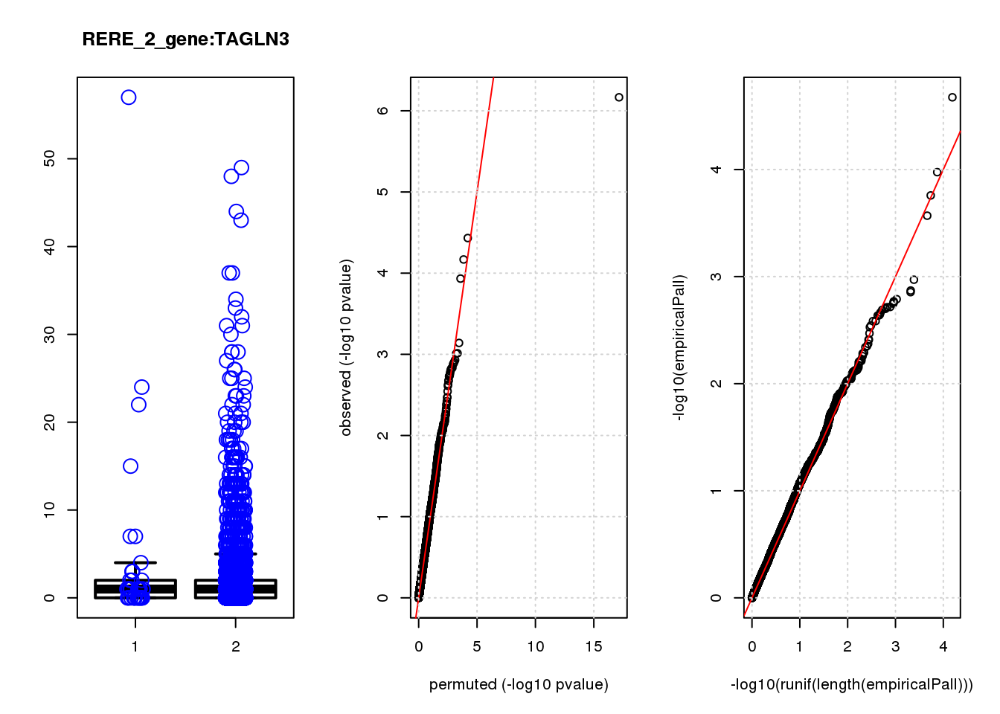
[1] "RERE_3_gene_edgeR-qlf_Neg2.Rd"
logFC logCPM F PValue FDR empiricalP empiricalP.FDR
MAFF -2.5 6.4 20.0 7.3e-06 0.046 0.00015 0.78
AC093323.3 -1.8 6.6 18.0 2.8e-05 0.089 0.00025 0.78
TOB1 -1.7 6.4 13.0 3.9e-04 0.620 0.00082 1.00
GLIPR1 1.1 6.6 13.0 3.9e-04 0.620 0.00082 1.00
BRCA1 1.0 6.6 11.0 7.2e-04 0.900 0.00120 1.00
AMPD2 -1.4 6.4 10.0 1.7e-03 1.000 0.00220 1.00
METTL8 -1.4 6.4 9.6 2.0e-03 1.000 0.00270 1.00
TJAP1 -1.3 6.5 9.4 2.1e-03 1.000 0.00290 1.00
SOX12 -1.3 6.5 9.3 2.3e-03 1.000 0.00310 1.00
PLP1 1.1 6.4 9.3 2.4e-03 1.000 0.00310 1.00
1e-04 NA NA NA NA NA NA NA
1e-05 NA NA NA NA NA NA NA
1e-06 NA NA NA NA NA NA NA
1e-07 NA NA NA NA NA NA NA
1e-08 NA NA NA NA NA NA NA
1e-09 NA NA NA NA NA NA NA
1e-10 NA NA NA NA NA NA NA
#in_real #in_perm EmpiricalFDR
MAFF 1 0.97 0.97
AC093323.3 2 1.60 0.78
TOB1 3 5.20 1.70
GLIPR1 4 5.20 1.30
BRCA1 5 7.50 1.50
AMPD2 6 14.00 2.40
METTL8 7 17.00 2.40
TJAP1 8 18.00 2.30
SOX12 9 19.00 2.20
PLP1 10 20.00 2.00
1e-04 2 2.50 1.30
1e-05 1 1.00 1.00
1e-06 0 0.47 Inf
1e-07 0 0.33 Inf
1e-08 0 0.23 Inf
1e-09 0 0.17 Inf
1e-10 0 0.17 Inf
[1] "SETD1A_1st_exon_1_gene_edgeR-qlf_Neg2.Rd"
logFC logCPM F PValue FDR empiricalP empiricalP.FDR #in_real
QSER1 -2.4 6.4 22 4.8e-06 0.031 8.5e-05 0.49 1
CUX1 -1.9 6.5 15 8.9e-05 0.220 2.9e-04 0.49 2
AGPAT2 -2.0 6.5 15 1.1e-04 0.220 3.0e-04 0.49 3
ZNF33A -1.9 6.4 15 1.4e-04 0.220 3.3e-04 0.49 4
EMP3 -2.6 6.6 14 1.8e-04 0.230 3.9e-04 0.49 5
LRIF1 -1.4 6.8 11 7.4e-04 0.780 1.1e-03 0.96 6
DLL3 -3.1 7.0 10 1.2e-03 0.810 1.6e-03 0.96 7
TACC1 -1.6 6.4 10 1.3e-03 0.810 1.7e-03 0.96 8
TBC1D16 -1.5 6.5 10 1.4e-03 0.810 1.8e-03 0.96 9
TRIM26 -1.6 6.3 11 1.4e-03 0.810 1.8e-03 0.96 10
1e-04 NA NA NA NA NA NA NA 2
1e-05 NA NA NA NA NA NA NA 1
1e-06 NA NA NA NA NA NA NA 0
1e-07 NA NA NA NA NA NA NA 0
1e-08 NA NA NA NA NA NA NA 0
1e-09 NA NA NA NA NA NA NA 0
1e-10 NA NA NA NA NA NA NA 0
#in_perm EmpiricalFDR
QSER1 0.53 0.53
CUX1 1.80 0.92
AGPAT2 1.90 0.63
ZNF33A 2.10 0.52
EMP3 2.40 0.49
LRIF1 6.80 1.10
DLL3 10.00 1.50
TACC1 10.00 1.30
TBC1D16 11.00 1.20
TRIM26 11.00 1.10
1e-04 1.90 0.95
1e-05 0.73 0.73
1e-06 0.37 Inf
1e-07 0.17 Inf
1e-08 0.17 Inf
1e-09 0.13 Inf
1e-10 0.13 Inf
[1] "SETD1A_1st_exon_2_gene_edgeR-qlf_Neg2.Rd"
logFC logCPM F PValue FDR empiricalP empiricalP.FDR
SERPINE2 1.30 6.5 31 3.1e-08 0.00018 7.9e-05 0.16
CALD1 1.00 7.9 29 7.0e-08 0.00018 9.5e-05 0.16
EMP3 1.40 6.6 29 8.8e-08 0.00018 1.0e-04 0.16
TNIP1 1.10 6.5 25 7.2e-07 0.00110 1.2e-04 0.16
MYL9 1.30 7.5 23 2.1e-06 0.00260 1.7e-04 0.16
CD59 0.91 6.9 19 1.2e-05 0.01300 2.1e-04 0.16
ZBTB10 1.10 6.3 19 1.8e-05 0.01400 2.2e-04 0.16
OPTN 1.10 6.4 18 1.9e-05 0.01400 2.2e-04 0.16
CSRP1 1.10 7.0 18 2.1e-05 0.01400 2.3e-04 0.16
TPM2 1.30 7.2 17 3.1e-05 0.02000 2.5e-04 0.16
1e-04 NA NA NA NA NA NA NA
1e-05 NA NA NA NA NA NA NA
1e-06 NA NA NA NA NA NA NA
1e-07 NA NA NA NA NA NA NA
1e-08 NA NA NA NA NA NA NA
1e-09 NA NA NA NA NA NA NA
1e-10 NA NA NA NA NA NA NA
#in_real #in_perm EmpiricalFDR
SERPINE2 1 0.50 0.50
CALD1 2 0.60 0.30
EMP3 3 0.63 0.21
TNIP1 4 0.77 0.19
MYL9 5 1.10 0.21
CD59 6 1.30 0.22
ZBTB10 7 1.40 0.20
OPTN 8 1.40 0.17
CSRP1 9 1.40 0.16
TPM2 10 1.60 0.16
1e-04 13 2.60 0.20
1e-05 5 1.30 0.26
1e-06 4 0.90 0.22
1e-07 3 0.63 0.21
1e-08 0 0.37 Inf
1e-09 0 0.27 Inf
1e-10 0 0.23 Inf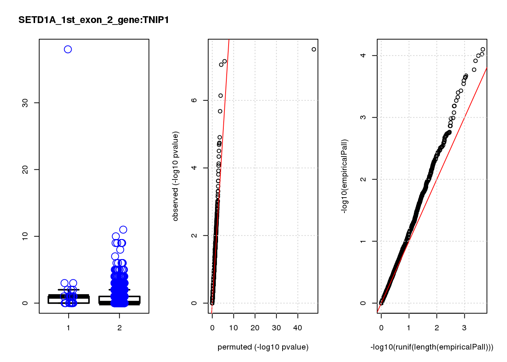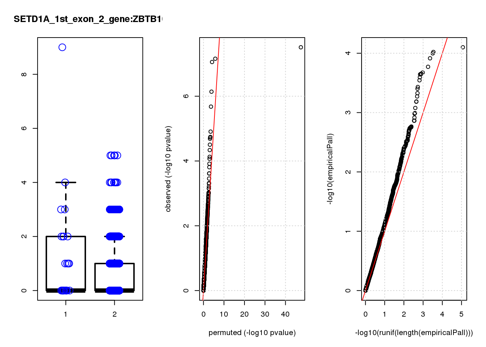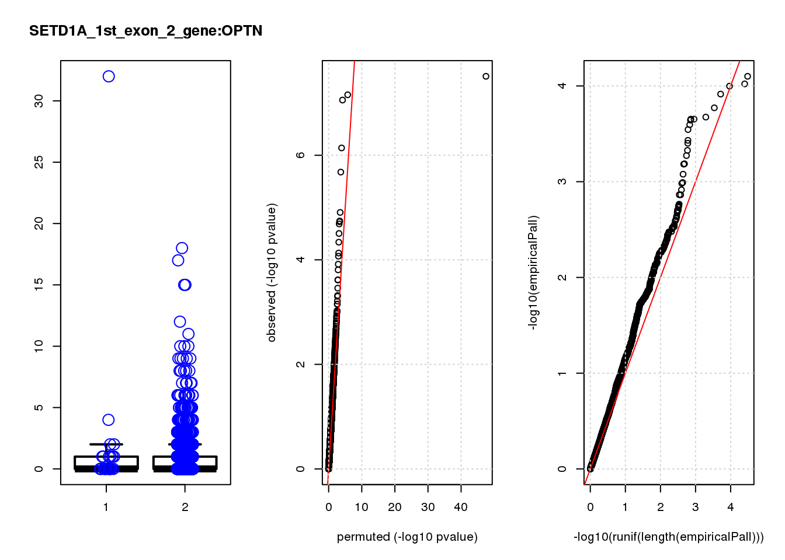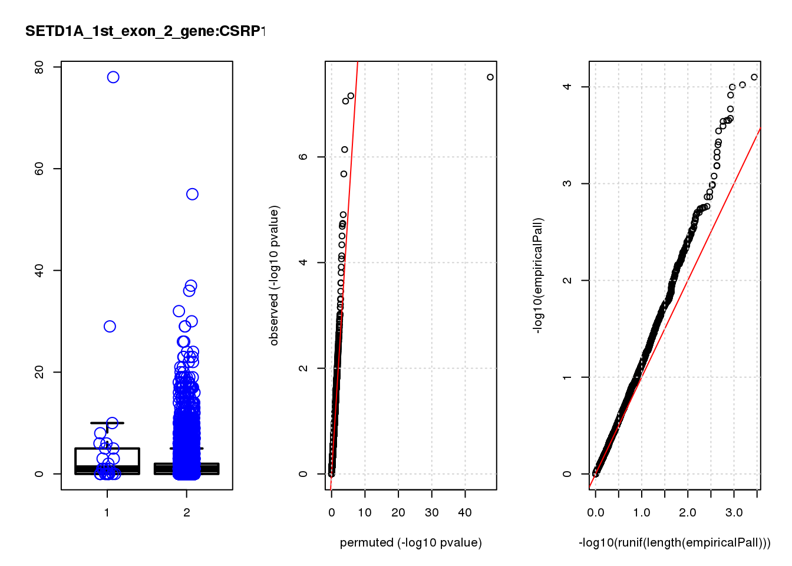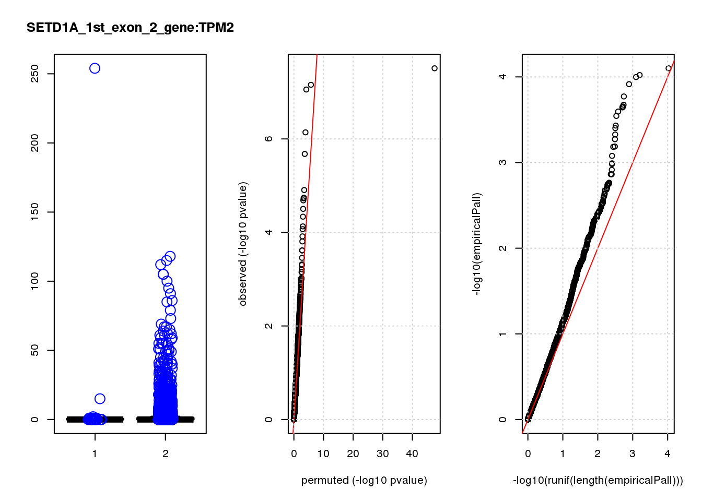
[1] "SETD1A_1st_exon_3_gene_edgeR-qlf_Neg2.Rd"
logFC logCPM F PValue FDR empiricalP empiricalP.FDR #in_real
UBB -4.2 9.6 24 1.2e-06 0.0078 0.00009 0.57 1
BEX2 2.4 6.6 14 1.9e-04 0.6000 0.00048 0.74 2
COX11 -4.2 7.2 11 7.4e-04 0.6900 0.00094 0.74 3
MSTO1 2.1 6.4 11 7.8e-04 0.6900 0.00096 0.74 4
CREB3 -4.2 7.1 11 9.0e-04 0.6900 0.00110 0.74 5
CST3 -2.2 8.2 11 1.1e-03 0.6900 0.00120 0.74 6
PPP1R12A -4.1 7.1 11 1.1e-03 0.6900 0.00130 0.74 7
NPDC1 -4.3 7.2 11 1.1e-03 0.6900 0.00130 0.74 8
BFAR -4.0 7.0 11 1.2e-03 0.6900 0.00130 0.74 9
FXYD6 -3.4 7.8 11 1.2e-03 0.6900 0.00140 0.74 10
1e-04 NA NA NA NA NA NA NA 1
1e-05 NA NA NA NA NA NA NA 1
1e-06 NA NA NA NA NA NA NA 0
1e-07 NA NA NA NA NA NA NA 0
1e-08 NA NA NA NA NA NA NA 0
1e-09 NA NA NA NA NA NA NA 0
1e-10 NA NA NA NA NA NA NA 0
#in_perm EmpiricalFDR
UBB 0.57 0.57
BEX2 3.00 1.50
COX11 5.90 2.00
MSTO1 6.10 1.50
CREB3 7.00 1.40
CST3 7.70 1.30
PPP1R12A 8.00 1.10
NPDC1 8.30 1.00
BFAR 8.50 0.94
FXYD6 8.60 0.86
1e-04 2.30 2.30
1e-05 1.10 1.10
1e-06 0.53 Inf
1e-07 0.33 Inf
1e-08 0.23 Inf
1e-09 0.17 Inf
1e-10 0.10 Inf
[1] "STAT6_1_gene_edgeR-qlf_Neg2.Rd"
logFC logCPM F PValue FDR empiricalP empiricalP.FDR #in_real
EIF2D -1.10 6.8 11.0 0.00073 1 0.0010 1 1
IREB2 -1.30 6.6 10.0 0.00130 1 0.0017 1 2
DHODH 0.88 6.4 9.8 0.00170 1 0.0021 1 3
CAAP1 0.86 6.4 9.2 0.00240 1 0.0028 1 4
KMT2E -0.83 7.2 9.0 0.00270 1 0.0031 1 5
ZNF91 -1.30 6.4 9.2 0.00270 1 0.0032 1 6
KIFC3 -1.40 6.4 8.9 0.00290 1 0.0034 1 7
CCDC138 0.84 6.4 8.8 0.00310 1 0.0036 1 8
UTP20 -1.20 6.4 8.8 0.00320 1 0.0038 1 9
ABCD3 -1.20 6.4 8.7 0.00330 1 0.0038 1 10
1e-04 NA NA NA NA NA NA NA 0
1e-05 NA NA NA NA NA NA NA 0
1e-06 NA NA NA NA NA NA NA 0
1e-07 NA NA NA NA NA NA NA 0
1e-08 NA NA NA NA NA NA NA 0
1e-09 NA NA NA NA NA NA NA 0
1e-10 NA NA NA NA NA NA NA 0
#in_perm EmpiricalFDR
EIF2D 6.300 6.3
IREB2 11.000 5.3
DHODH 13.000 4.4
CAAP1 18.000 4.4
KMT2E 20.000 3.9
ZNF91 20.000 3.3
KIFC3 21.000 3.0
CCDC138 23.000 2.8
UTP20 24.000 2.6
ABCD3 24.000 2.4
1e-04 1.500 Inf
1e-05 0.270 Inf
1e-06 0.100 Inf
1e-07 0.033 Inf
1e-08 0.033 Inf
1e-09 0.000 NaN
1e-10 0.000 NaN
[1] "STAT6_2_gene_edgeR-qlf_Neg2.Rd"
logFC logCPM F PValue FDR empiricalP empiricalP.FDR #in_real
TP53I3 0.99 6.8 17 3.8e-05 0.20 0.00023 0.63 1
ZNF561 -1.40 6.4 16 6.5e-05 0.20 0.00031 0.63 2
NUDT14 0.72 6.9 13 2.5e-04 0.52 0.00061 0.63 3
MOAP1 0.83 6.5 13 3.5e-04 0.53 0.00074 0.63 4
TP53TG1 0.84 6.7 12 4.8e-04 0.53 0.00091 0.63 5
IQGAP1 -1.20 6.4 12 5.9e-04 0.53 0.00110 0.63 6
ERCC1 -0.56 7.5 12 6.5e-04 0.53 0.00110 0.63 7
PLTP 0.66 7.1 11 7.1e-04 0.53 0.00120 0.63 8
NSUN2 -1.10 6.4 11 9.9e-04 0.53 0.00150 0.63 9
PDE7A -1.10 6.4 11 1.1e-03 0.53 0.00160 0.63 10
1e-04 NA NA NA NA NA NA NA 2
1e-05 NA NA NA NA NA NA NA 0
1e-06 NA NA NA NA NA NA NA 0
1e-07 NA NA NA NA NA NA NA 0
1e-08 NA NA NA NA NA NA NA 0
1e-09 NA NA NA NA NA NA NA 0
1e-10 NA NA NA NA NA NA NA 0
#in_perm EmpiricalFDR
TP53I3 1.50 1.50
ZNF561 1.90 0.97
NUDT14 3.80 1.30
MOAP1 4.60 1.20
TP53TG1 5.70 1.10
IQGAP1 6.70 1.10
ERCC1 6.90 0.99
PLTP 7.30 0.91
NSUN2 9.40 1.00
PDE7A 10.00 1.00
1e-04 2.50 1.30
1e-05 1.10 Inf
1e-06 0.63 Inf
1e-07 0.43 Inf
1e-08 0.37 Inf
1e-09 0.27 Inf
1e-10 0.17 Inf
[1] "STAT6_3_gene_edgeR-qlf_Neg2.Rd"
logFC logCPM F PValue FDR empiricalP empiricalP.FDR
GADD45G 1.60 7.5 28 1.2e-07 0.00076 1.1e-05 0.067
PLK1 -1.50 7.4 18 2.0e-05 0.06200 1.4e-04 0.430
CCNB1 -1.10 7.5 14 1.9e-04 0.36000 4.1e-04 0.440
ALPL 0.71 6.8 14 2.3e-04 0.36000 4.2e-04 0.440
OLMALINC -1.00 6.4 13 3.5e-04 0.37000 5.7e-04 0.440
UBE2S -0.71 8.9 13 4.1e-04 0.37000 6.7e-04 0.440
UBE2C -1.20 8.3 12 4.1e-04 0.37000 6.8e-04 0.440
TACC3 -1.00 6.8 12 4.9e-04 0.37000 7.5e-04 0.440
PTTG1 -0.87 8.4 12 5.7e-04 0.37000 8.3e-04 0.440
TUBA1C -1.30 6.8 12 6.3e-04 0.37000 9.3e-04 0.440
1e-04 NA NA NA NA NA NA NA
1e-05 NA NA NA NA NA NA NA
1e-06 NA NA NA NA NA NA NA
1e-07 NA NA NA NA NA NA NA
1e-08 NA NA NA NA NA NA NA
1e-09 NA NA NA NA NA NA NA
1e-10 NA NA NA NA NA NA NA
#in_real #in_perm EmpiricalFDR
GADD45G 1 0.067 0.067
PLK1 2 0.870 0.430
CCNB1 3 2.600 0.850
ALPL 4 2.700 0.670
OLMALINC 5 3.600 0.720
UBE2S 6 4.200 0.700
UBE2C 7 4.300 0.610
TACC3 8 4.700 0.590
PTTG1 9 5.200 0.580
TUBA1C 10 5.900 0.590
1e-04 2 1.700 0.850
1e-05 1 0.530 0.530
1e-06 1 0.130 0.130
1e-07 0 0.067 Inf
1e-08 0 0.067 Inf
1e-09 0 0.033 Inf
1e-10 0 0.033 Inf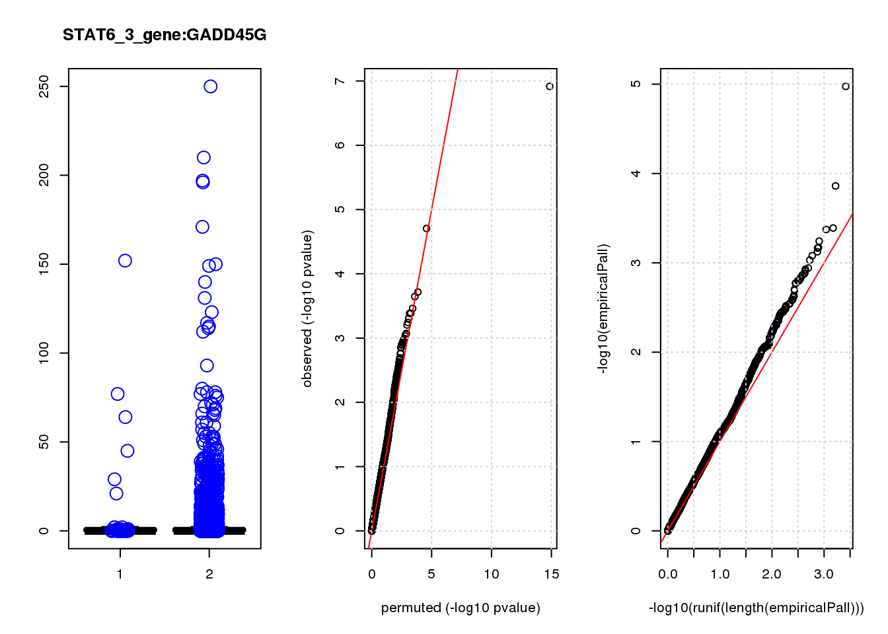
[1] "TCF4-ITF2_1_gene_edgeR-qlf_Neg2.Rd"
logFC logCPM F PValue FDR empiricalP empiricalP.FDR #in_real
TSPAN15 -1.50 6.6 19 1.5e-05 0.09 0.00017 0.35 1
SLC35B3 -1.40 6.4 19 2.9e-05 0.09 0.00023 0.35 2
RPL27A -0.31 12.0 16 6.9e-05 0.12 0.00032 0.35 3
TAGLN -1.20 9.3 15 8.6e-05 0.12 0.00033 0.35 4
RPL37A -0.26 12.0 15 9.9e-05 0.12 0.00034 0.35 5
TMEM170A -0.84 6.9 14 1.9e-04 0.19 0.00049 0.35 6
GPI -0.77 7.0 14 2.3e-04 0.19 0.00057 0.35 7
RPL30 -0.25 12.0 14 2.4e-04 0.19 0.00059 0.35 8
RPL36AL -0.31 9.4 13 3.6e-04 0.21 0.00074 0.35 9
RPL38 -0.25 10.0 13 4.0e-04 0.21 0.00080 0.35 10
1e-04 NA NA NA NA NA NA NA 5
1e-05 NA NA NA NA NA NA NA 0
1e-06 NA NA NA NA NA NA NA 0
1e-07 NA NA NA NA NA NA NA 0
1e-08 NA NA NA NA NA NA NA 0
1e-09 NA NA NA NA NA NA NA 0
1e-10 NA NA NA NA NA NA NA 0
#in_perm EmpiricalFDR
TSPAN15 1.10 1.10
SLC35B3 1.40 0.72
RPL27A 2.00 0.67
TAGLN 2.10 0.52
RPL37A 2.20 0.43
TMEM170A 3.10 0.51
GPI 3.60 0.51
RPL30 3.70 0.47
RPL36AL 4.70 0.52
RPL38 5.00 0.50
1e-04 2.20 0.44
1e-05 0.97 Inf
1e-06 0.37 Inf
1e-07 0.20 Inf
1e-08 0.17 Inf
1e-09 0.13 Inf
1e-10 0.10 Inf
[1] "TCF4-ITF2_2_gene_edgeR-qlf_Neg2.Rd"
logFC logCPM F PValue FDR empiricalP empiricalP.FDR #in_real
TMEM136 -1.10 6.4 13 0.00032 0.71 0.00058 1 1
ZKSCAN1 -0.78 7.1 13 0.00036 0.71 0.00061 1 2
FOS 0.84 6.7 12 0.00057 0.71 0.00087 1 3
GADD45G -2.00 7.5 12 0.00068 0.71 0.00100 1 4
THAP4 -0.93 6.6 11 0.00071 0.71 0.00110 1 5
PHLDA1 -1.30 7.0 11 0.00077 0.71 0.00110 1 6
STMN2 -2.10 7.1 11 0.00079 0.71 0.00110 1 7
NEFM -1.30 7.5 11 0.00099 0.78 0.00140 1 8
CBLL1 -0.95 6.4 10 0.00150 0.97 0.00190 1 9
HMBOX1 -0.90 6.5 10 0.00150 0.97 0.00200 1 10
1e-04 NA NA NA NA NA NA NA 0
1e-05 NA NA NA NA NA NA NA 0
1e-06 NA NA NA NA NA NA NA 0
1e-07 NA NA NA NA NA NA NA 0
1e-08 NA NA NA NA NA NA NA 0
1e-09 NA NA NA NA NA NA NA 0
1e-10 NA NA NA NA NA NA NA 0
#in_perm EmpiricalFDR
TMEM136 3.600 3.6
ZKSCAN1 3.900 1.9
FOS 5.500 1.8
GADD45G 6.400 1.6
THAP4 6.600 1.3
PHLDA1 7.000 1.2
STMN2 7.100 1.0
NEFM 9.100 1.1
CBLL1 12.000 1.4
HMBOX1 12.000 1.2
1e-04 1.700 Inf
1e-05 0.730 Inf
1e-06 0.300 Inf
1e-07 0.130 Inf
1e-08 0.067 Inf
1e-09 0.067 Inf
1e-10 0.067 Inf
[1] "TCF4-ITF2_3_gene_edgeR-qlf_Neg2.Rd"
logFC logCPM F PValue FDR empiricalP empiricalP.FDR #in_real
SNAPC1 2.80 6.5 64 1.4e-15 9.0e-12 5.3e-06 0.033 1
RNF25 -2.90 6.6 14 1.8e-04 4.8e-01 3.8e-04 0.580 2
LMO4 -2.10 7.0 12 4.3e-04 4.8e-01 7.1e-04 0.580 3
CLN8 -2.70 6.5 12 4.8e-04 4.8e-01 7.7e-04 0.580 4
CHMP4A -2.60 6.5 12 4.8e-04 4.8e-01 7.7e-04 0.580 5
PCBP1 -0.73 8.5 12 6.5e-04 4.8e-01 9.6e-04 0.580 6
MRPS28 -2.30 6.7 11 7.8e-04 4.8e-01 1.1e-03 0.580 7
COA5 -2.00 6.8 11 8.0e-04 4.8e-01 1.1e-03 0.580 8
USP9X -2.30 6.7 11 8.4e-04 4.8e-01 1.1e-03 0.580 9
PTRH1 -2.40 6.4 11 9.2e-04 4.8e-01 1.3e-03 0.580 10
1e-04 NA NA NA NA NA NA NA 1
1e-05 NA NA NA NA NA NA NA 1
1e-06 NA NA NA NA NA NA NA 1
1e-07 NA NA NA NA NA NA NA 1
1e-08 NA NA NA NA NA NA NA 1
1e-09 NA NA NA NA NA NA NA 1
1e-10 NA NA NA NA NA NA NA 1
#in_perm EmpiricalFDR
SNAPC1 0.033 0.033
RNF25 2.400 1.200
LMO4 4.500 1.500
CLN8 4.800 1.200
CHMP4A 4.900 0.970
PCBP1 6.000 1.000
MRPS28 6.700 0.960
COA5 6.900 0.860
USP9X 7.100 0.790
PTRH1 7.900 0.790
1e-04 1.700 1.700
1e-05 0.730 0.730
1e-06 0.430 0.430
1e-07 0.330 0.330
1e-08 0.170 0.170
1e-09 0.067 0.067
1e-10 0.067 0.067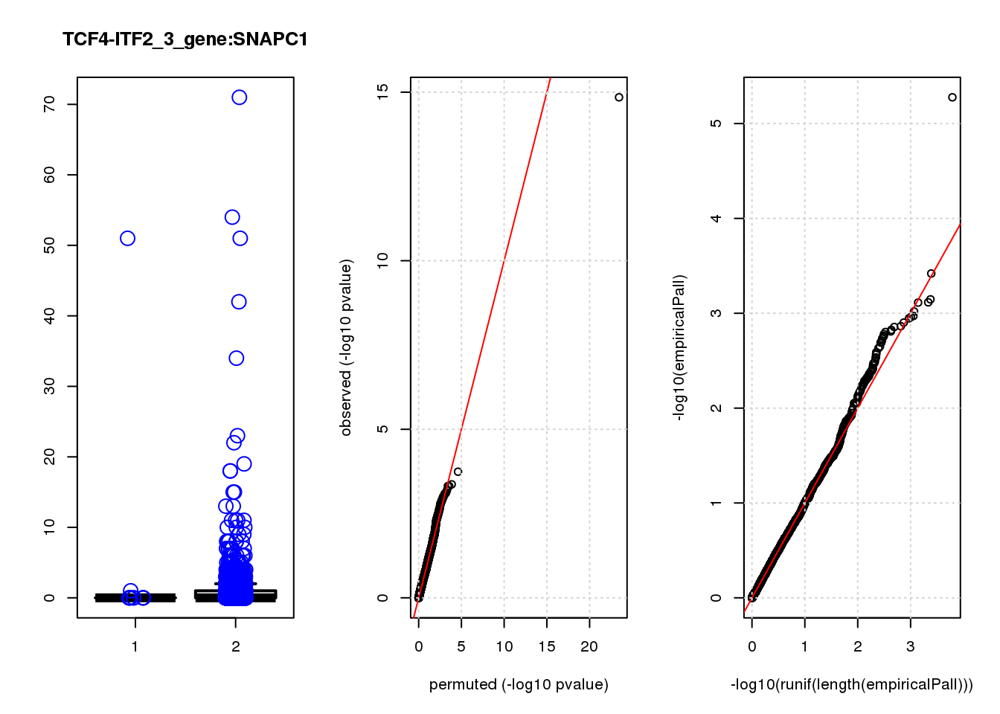
[1] "TRANK1_1_gene_edgeR-qlf_Neg2.Rd"
logFC logCPM F PValue FDR empiricalP empiricalP.FDR #in_real
SDF2L1 2.1 7.1 15.0 9.9e-05 0.62 0.00019 1 1
INIP 2.0 6.8 12.0 6.0e-04 0.84 0.00056 1 2
PYCR1 2.3 6.8 10.0 1.3e-03 0.84 0.00098 1 3
SEC11C 1.4 7.5 8.9 2.8e-03 0.84 0.00190 1 4
CKAP2L 2.2 6.4 8.8 3.0e-03 0.84 0.00200 1 5
MRPS34 -1.9 8.4 8.8 3.0e-03 0.84 0.00200 1 6
HSPB11 -4.5 7.3 8.3 3.9e-03 0.84 0.00260 1 7
STX2 1.9 6.4 8.1 4.4e-03 0.84 0.00300 1 8
GTPBP3 1.9 6.5 8.1 4.5e-03 0.84 0.00300 1 9
NDST1 2.0 6.4 8.1 4.5e-03 0.84 0.00300 1 10
1e-04 NA NA NA NA NA NA NA 1
1e-05 NA NA NA NA NA NA NA 0
1e-06 NA NA NA NA NA NA NA 0
1e-07 NA NA NA NA NA NA NA 0
1e-08 NA NA NA NA NA NA NA 0
1e-09 NA NA NA NA NA NA NA 0
1e-10 NA NA NA NA NA NA NA 0
#in_perm EmpiricalFDR
SDF2L1 1.200 1.2
INIP 3.500 1.7
PYCR1 6.200 2.1
SEC11C 12.000 3.0
CKAP2L 12.000 2.5
MRPS34 13.000 2.1
HSPB11 16.000 2.3
STX2 19.000 2.3
GTPBP3 19.000 2.1
NDST1 19.000 1.9
1e-04 1.200 1.2
1e-05 0.600 Inf
1e-06 0.270 Inf
1e-07 0.100 Inf
1e-08 0.100 Inf
1e-09 0.100 Inf
1e-10 0.033 Inf
[1] "TRANK1_2_gene_edgeR-qlf_Neg2.Rd"
logFC logCPM F PValue FDR empiricalP empiricalP.FDR #in_real
CDKN1C 1.50 6.9 13.0 0.00038 1 0.00092 1 1
LOXL1 -2.20 6.6 12.0 0.00052 1 0.00110 1 2
TMEM230 -0.66 8.0 12.0 0.00064 1 0.00130 1 3
UGP2 -1.10 7.1 11.0 0.00087 1 0.00160 1 4
BTBD7 -1.70 6.4 12.0 0.00110 1 0.00180 1 5
CXXC4 -1.70 6.4 10.0 0.00130 1 0.00200 1 6
GNAQ -1.40 6.6 10.0 0.00140 1 0.00220 1 7
PPM1D 1.00 6.5 10.0 0.00160 1 0.00230 1 8
FAM133B 0.65 7.3 9.5 0.00210 1 0.00280 1 9
SNRNP200 -1.00 7.0 9.2 0.00240 1 0.00320 1 10
1e-04 NA NA NA NA NA NA NA 0
1e-05 NA NA NA NA NA NA NA 0
1e-06 NA NA NA NA NA NA NA 0
1e-07 NA NA NA NA NA NA NA 0
1e-08 NA NA NA NA NA NA NA 0
1e-09 NA NA NA NA NA NA NA 0
1e-10 NA NA NA NA NA NA NA 0
#in_perm EmpiricalFDR
CDKN1C 5.80 5.8
LOXL1 7.10 3.5
TMEM230 8.10 2.7
UGP2 9.80 2.5
BTBD7 12.00 2.3
CXXC4 13.00 2.1
GNAQ 14.00 1.9
PPM1D 15.00 1.8
FAM133B 18.00 2.0
SNRNP200 20.00 2.0
1e-04 2.80 Inf
1e-05 1.20 Inf
1e-06 0.67 Inf
1e-07 0.60 Inf
1e-08 0.47 Inf
1e-09 0.27 Inf
1e-10 0.20 Inf
[1] "TRANK1_3_gene_edgeR-qlf_Neg2.Rd"
logFC logCPM F PValue FDR empiricalP empiricalP.FDR #in_real
ATF7IP2 -1.20 6.4 22 3.2e-06 0.02 5.8e-05 0.37 1
OPTN -1.10 6.4 14 2.3e-04 0.69 4.7e-04 0.99 2
CCT7 0.27 8.8 13 3.3e-04 0.69 5.8e-04 0.99 3
TPD52 0.68 6.4 12 5.6e-04 0.71 8.2e-04 0.99 4
DOLK 0.63 6.4 12 6.7e-04 0.71 1.0e-03 0.99 5
RPRD1A 0.51 6.8 12 6.8e-04 0.71 1.0e-03 0.99 6
UBE2E3 -0.32 8.9 10 1.5e-03 0.87 1.9e-03 0.99 7
TIMM21 0.53 6.7 10 1.5e-03 0.87 1.9e-03 0.99 8
WRAP73 0.58 6.4 10 1.6e-03 0.87 1.9e-03 0.99 9
RNF141 -0.71 6.5 10 1.6e-03 0.87 2.0e-03 0.99 10
1e-04 NA NA NA NA NA NA NA 1
1e-05 NA NA NA NA NA NA NA 1
1e-06 NA NA NA NA NA NA NA 0
1e-07 NA NA NA NA NA NA NA 0
1e-08 NA NA NA NA NA NA NA 0
1e-09 NA NA NA NA NA NA NA 0
1e-10 NA NA NA NA NA NA NA 0
#in_perm EmpiricalFDR
ATF7IP2 0.37 0.37
OPTN 3.00 1.50
CCT7 3.70 1.20
TPD52 5.20 1.30
DOLK 6.30 1.30
RPRD1A 6.30 1.10
UBE2E3 12.00 1.70
TIMM21 12.00 1.50
WRAP73 12.00 1.40
RNF141 12.00 1.20
1e-04 1.90 1.90
1e-05 0.70 0.70
1e-06 0.30 Inf
1e-07 0.13 Inf
1e-08 0.13 Inf
1e-09 0.13 Inf
1e-10 0.13 Inf
[1] "UBE2Q2P1_1_gene_edgeR-qlf_Neg2.Rd"
logFC logCPM F PValue FDR empiricalP empiricalP.FDR #in_real
JAG1 1.90 6.8 21 4.5e-06 0.028 0.00012 0.55 1
SERPINH1 1.10 7.6 18 2.2e-05 0.069 0.00017 0.55 2
RCN1 0.85 8.6 14 2.2e-04 0.340 0.00062 0.57 3
LDLR -2.60 6.5 13 2.7e-04 0.340 0.00066 0.57 4
LINC00461 -2.70 6.5 13 3.0e-04 0.340 0.00069 0.57 5
NRSN2 -2.40 6.4 13 3.7e-04 0.340 0.00074 0.57 6
FANCG -2.50 6.4 12 4.2e-04 0.340 0.00080 0.57 7
SGO1 -2.80 6.8 12 5.4e-04 0.340 0.00098 0.57 8
FAM171A1 -2.30 6.4 12 6.2e-04 0.340 0.00110 0.57 9
FZD7 -2.40 6.4 12 6.8e-04 0.340 0.00120 0.57 10
1e-04 NA NA NA NA NA NA NA 2
1e-05 NA NA NA NA NA NA NA 1
1e-06 NA NA NA NA NA NA NA 0
1e-07 NA NA NA NA NA NA NA 0
1e-08 NA NA NA NA NA NA NA 0
1e-09 NA NA NA NA NA NA NA 0
1e-10 NA NA NA NA NA NA NA 0
#in_perm EmpiricalFDR
JAG1 0.77 0.77
SERPINH1 1.10 0.55
RCN1 3.90 1.30
LDLR 4.10 1.00
LINC00461 4.30 0.87
NRSN2 4.60 0.77
FANCG 5.00 0.72
SGO1 6.20 0.78
FAM171A1 7.10 0.79
FZD7 7.80 0.78
1e-04 2.20 1.10
1e-05 0.87 0.87
1e-06 0.60 Inf
1e-07 0.50 Inf
1e-08 0.30 Inf
1e-09 0.17 Inf
1e-10 0.10 Inf
[1] "UBE2Q2P1_2_gene_edgeR-qlf_Neg2.Rd"
logFC logCPM F PValue FDR empiricalP empiricalP.FDR #in_real
TERF2IP 1.40 7.3 14 0.00023 0.58 0.00075 0.86 1
UFSP2 -2.60 6.8 13 0.00029 0.58 0.00084 0.86 2
PABPC1 -0.80 10.0 12 0.00044 0.58 0.00100 0.86 3
ATP5B 0.69 9.5 12 0.00048 0.58 0.00110 0.86 4
SFRP1 -4.10 7.1 12 0.00050 0.58 0.00110 0.86 5
TTLL12 -2.90 6.6 12 0.00055 0.58 0.00120 0.86 6
RNMTL1 -2.90 6.6 11 0.00089 0.58 0.00170 0.86 7
ALDH2 -3.40 6.7 11 0.00091 0.58 0.00170 0.86 8
OSTC -0.84 8.6 11 0.00092 0.58 0.00170 0.86 9
AFF4 1.40 6.5 11 0.00110 0.58 0.00200 0.86 10
1e-04 NA NA NA NA NA NA NA 0
1e-05 NA NA NA NA NA NA NA 0
1e-06 NA NA NA NA NA NA NA 0
1e-07 NA NA NA NA NA NA NA 0
1e-08 NA NA NA NA NA NA NA 0
1e-09 NA NA NA NA NA NA NA 0
1e-10 NA NA NA NA NA NA NA 0
#in_perm EmpiricalFDR
TERF2IP 4.70 4.7
UFSP2 5.30 2.6
PABPC1 6.50 2.2
ATP5B 7.00 1.7
SFRP1 7.10 1.4
TTLL12 7.60 1.3
RNMTL1 11.00 1.5
ALDH2 11.00 1.4
OSTC 11.00 1.2
AFF4 13.00 1.3
1e-04 3.40 Inf
1e-05 1.60 Inf
1e-06 0.97 Inf
1e-07 0.53 Inf
1e-08 0.40 Inf
1e-09 0.33 Inf
1e-10 0.20 Inf
[1] "UBE2Q2P1_3_gene_edgeR-qlf_Neg2.Rd"
logFC logCPM F PValue FDR empiricalP empiricalP.FDR
NAV1 1.4 6.6 14 0.00015 0.92 0.00029 1
NSUN2 -2.5 6.4 12 0.00080 1.00 0.00110 1
CAMLG -1.1 7.6 11 0.00087 1.00 0.00110 1
GNG12 -2.7 6.5 11 0.00093 1.00 0.00120 1
METTL8 -2.4 6.4 11 0.00094 1.00 0.00120 1
ARFIP1 -2.4 6.4 11 0.00100 1.00 0.00140 1
REEP2 -2.2 6.8 10 0.00150 1.00 0.00200 1
RP11-477B16.5 -2.3 6.4 10 0.00160 1.00 0.00200 1
ACACA -2.3 6.4 10 0.00170 1.00 0.00220 1
ZNHIT2 -2.3 6.4 10 0.00180 1.00 0.00230 1
1e-04 NA NA NA NA NA NA NA
1e-05 NA NA NA NA NA NA NA
1e-06 NA NA NA NA NA NA NA
1e-07 NA NA NA NA NA NA NA
1e-08 NA NA NA NA NA NA NA
1e-09 NA NA NA NA NA NA NA
1e-10 NA NA NA NA NA NA NA
#in_real #in_perm EmpiricalFDR
NAV1 1 1.80 1.8
NSUN2 2 6.70 3.4
CAMLG 3 7.20 2.4
GNG12 4 7.70 1.9
METTL8 5 7.70 1.5
ARFIP1 6 8.80 1.5
REEP2 7 12.00 1.8
RP11-477B16.5 8 13.00 1.6
ACACA 9 14.00 1.5
ZNHIT2 10 14.00 1.4
1e-04 0 1.50 Inf
1e-05 0 0.50 Inf
1e-06 0 0.23 Inf
1e-07 0 0.20 Inf
1e-08 0 0.17 Inf
1e-09 0 0.17 Inf
1e-10 0 0.10 Inf
[1] "VPS45_1_gene_edgeR-qlf_Neg2.Rd"
logFC logCPM F PValue FDR empiricalP empiricalP.FDR #in_real
A2M 2.4 6.6 50 1.4e-12 9.1e-09 2.6e-05 0.13 1
PTN 2.0 7.8 36 2.7e-09 8.6e-06 5.3e-05 0.13 2
IFITM3 2.0 8.6 30 4.0e-08 8.4e-05 6.3e-05 0.13 3
CLU 1.7 7.4 28 1.3e-07 2.0e-04 9.0e-05 0.13 4
CTSC 1.7 6.6 26 3.1e-07 3.9e-04 1.0e-04 0.13 5
GPM6B 1.0 8.4 23 1.5e-06 1.6e-03 1.2e-04 0.13 6
CD47 1.4 7.0 20 7.2e-06 6.5e-03 1.9e-04 0.13 7
SULF2 1.6 6.5 19 1.3e-05 1.0e-02 2.1e-04 0.13 8
WLS 1.4 7.0 18 2.0e-05 1.4e-02 2.3e-04 0.13 9
BAALC 1.7 6.7 18 2.3e-05 1.4e-02 2.3e-04 0.13 10
1e-04 NA NA NA NA NA NA NA 11
1e-05 NA NA NA NA NA NA NA 7
1e-06 NA NA NA NA NA NA NA 5
1e-07 NA NA NA NA NA NA NA 3
1e-08 NA NA NA NA NA NA NA 2
1e-09 NA NA NA NA NA NA NA 1
1e-10 NA NA NA NA NA NA NA 1
#in_perm EmpiricalFDR
A2M 0.17 0.17
PTN 0.33 0.17
IFITM3 0.40 0.13
CLU 0.57 0.14
CTSC 0.63 0.13
GPM6B 0.77 0.13
CD47 1.20 0.17
SULF2 1.30 0.17
WLS 1.40 0.16
BAALC 1.40 0.14
1e-04 2.60 0.24
1e-05 1.30 0.19
1e-06 0.73 0.15
1e-07 0.57 0.19
1e-08 0.33 0.17
1e-09 0.27 0.27
1e-10 0.27 0.27 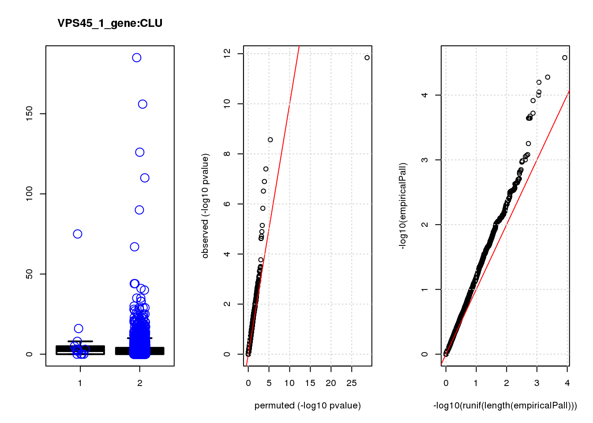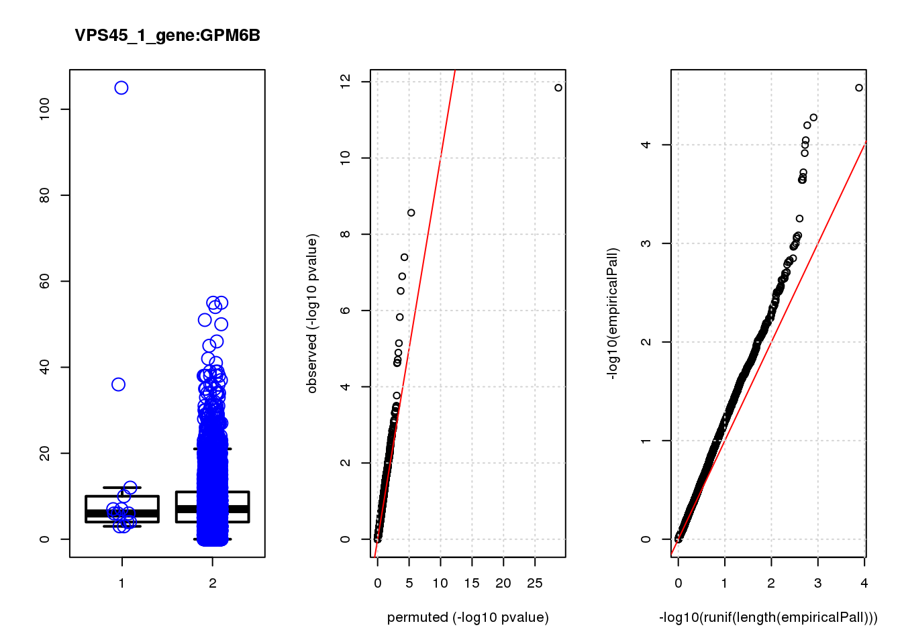
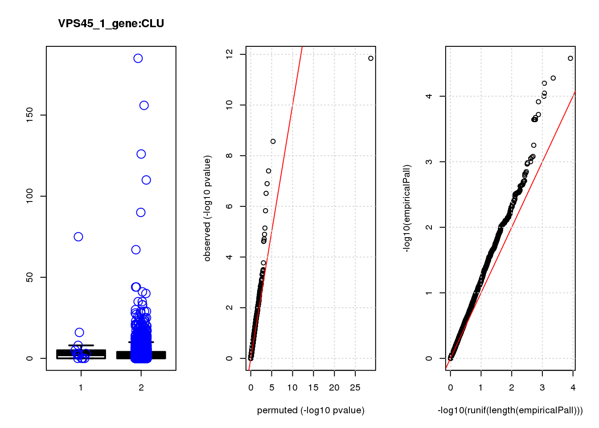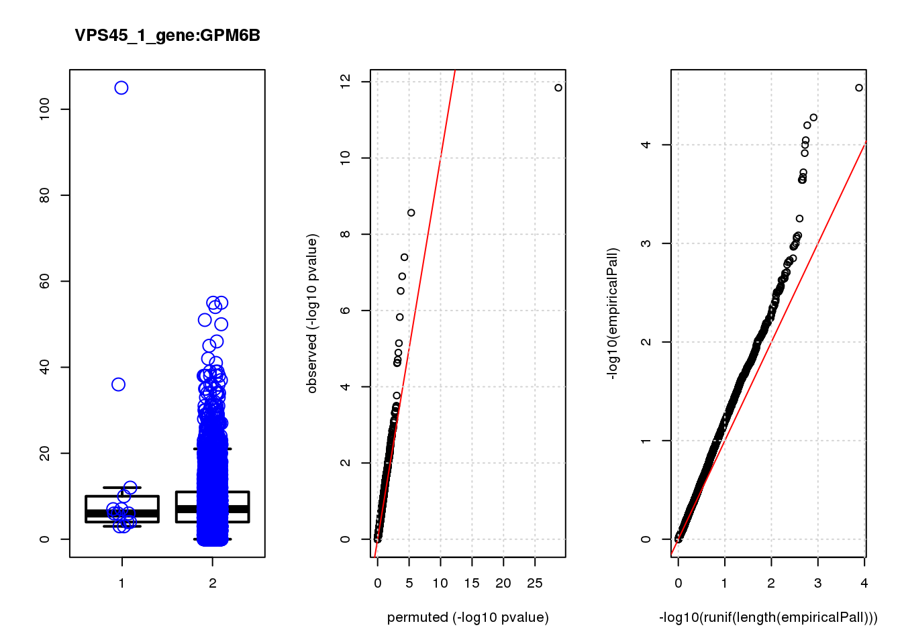
[1] "VPS45_2_gene_edgeR-qlf_Neg2.Rd"
logFC logCPM F PValue FDR empiricalP empiricalP.FDR #in_real
DLL3 1.30 7.0 28 1.4e-07 0.00087 4.2e-05 0.20 1
SYT1 0.98 6.4 25 6.7e-07 0.00210 6.3e-05 0.20 2
STMN2 1.30 7.1 22 3.6e-06 0.00750 9.5e-05 0.20 3
SUMO3 -0.44 8.0 16 6.6e-05 0.10000 2.7e-04 0.40 4
DLL1 0.94 6.9 15 1.0e-04 0.13000 3.2e-04 0.40 5
MLLT11 0.42 8.6 13 3.5e-04 0.32000 6.0e-04 0.54 6
NEFM 0.77 7.5 13 3.6e-04 0.32000 6.1e-04 0.54 7
CYC1 -0.30 8.7 12 4.1e-04 0.33000 6.9e-04 0.54 8
ISCU -0.42 7.8 11 7.9e-04 0.40000 1.1e-03 0.58 9
ANKRD11 -0.45 7.5 11 8.3e-04 0.40000 1.2e-03 0.58 10
1e-04 NA NA NA NA NA NA NA 5
1e-05 NA NA NA NA NA NA NA 3
1e-06 NA NA NA NA NA NA NA 2
1e-07 NA NA NA NA NA NA NA 0
1e-08 NA NA NA NA NA NA NA 0
1e-09 NA NA NA NA NA NA NA 0
1e-10 NA NA NA NA NA NA NA 0
#in_perm EmpiricalFDR
DLL3 0.27 0.27
SYT1 0.40 0.20
STMN2 0.60 0.20
SUMO3 1.70 0.42
DLL1 2.00 0.40
MLLT11 3.80 0.63
NEFM 3.80 0.55
CYC1 4.30 0.54
ISCU 7.20 0.80
ANKRD11 7.70 0.77
1e-04 2.00 0.40
1e-05 0.77 0.26
1e-06 0.40 0.20
1e-07 0.27 Inf
1e-08 0.27 Inf
1e-09 0.23 Inf
1e-10 0.17 Inf
[1] "VPS45_3_gene_edgeR-qlf_Neg2.Rd"
logFC logCPM F PValue FDR empiricalP empiricalP.FDR #in_real
PCGF2 -3.8 6.9 21 4.0e-06 0.025 0.00013 0.56 1
NKAIN4 2.0 6.8 18 2.1e-05 0.068 0.00020 0.56 2
ARG2 1.7 6.5 16 5.6e-05 0.120 0.00029 0.56 3
JUNB 1.8 6.5 15 1.4e-04 0.210 0.00038 0.56 4
CHTF8 -1.8 7.2 12 4.7e-04 0.360 0.00086 0.56 5
NELFE -1.3 7.7 12 5.0e-04 0.360 0.00088 0.56 6
UCK2 -3.0 6.6 12 5.8e-04 0.360 0.00096 0.56 7
NADK -2.9 6.6 12 5.9e-04 0.360 0.00100 0.56 8
GPR108 -2.9 6.6 11 7.4e-04 0.360 0.00120 0.56 9
TXNRD1 1.5 7.1 11 7.4e-04 0.360 0.00120 0.56 10
1e-04 NA NA NA NA NA NA NA 3
1e-05 NA NA NA NA NA NA NA 1
1e-06 NA NA NA NA NA NA NA 0
1e-07 NA NA NA NA NA NA NA 0
1e-08 NA NA NA NA NA NA NA 0
1e-09 NA NA NA NA NA NA NA 0
1e-10 NA NA NA NA NA NA NA 0
#in_perm EmpiricalFDR
PCGF2 0.800 0.80
NKAIN4 1.200 0.62
ARG2 1.800 0.60
JUNB 2.400 0.59
CHTF8 5.400 1.10
NELFE 5.500 0.92
UCK2 6.000 0.86
NADK 6.300 0.79
GPR108 7.600 0.84
TXNRD1 7.600 0.76
1e-04 2.100 0.70
1e-05 0.930 0.93
1e-06 0.500 Inf
1e-07 0.230 Inf
1e-08 0.170 Inf
1e-09 0.067 Inf
1e-10 0.067 Inf
sessionInfo()R version 3.5.1 (2018-07-02)
Platform: x86_64-pc-linux-gnu (64-bit)
Running under: Scientific Linux 7.4 (Nitrogen)
Matrix products: default
BLAS/LAPACK: /software/openblas-0.2.19-el7-x86_64/lib/libopenblas_haswellp-r0.2.19.so
locale:
[1] LC_CTYPE=en_US.UTF-8 LC_NUMERIC=C
[3] LC_TIME=en_US.UTF-8 LC_COLLATE=en_US.UTF-8
[5] LC_MONETARY=en_US.UTF-8 LC_MESSAGES=en_US.UTF-8
[7] LC_PAPER=en_US.UTF-8 LC_NAME=C
[9] LC_ADDRESS=C LC_TELEPHONE=C
[11] LC_MEASUREMENT=en_US.UTF-8 LC_IDENTIFICATION=C
attached base packages:
[1] stats graphics grDevices utils datasets methods base
other attached packages:
[1] edgeR_3.24.3 limma_3.38.2 lattice_0.20-38 Matrix_1.2-15
loaded via a namespace (and not attached):
[1] locfit_1.5-9.1 workflowr_1.2.0 Rcpp_1.0.0 digest_0.6.18
[5] rprojroot_1.3-2 grid_3.5.1 backports_1.1.2 git2r_0.23.0
[9] magrittr_1.5 evaluate_0.12 stringi_1.3.1 fs_1.2.6
[13] rmarkdown_1.10 tools_3.5.1 stringr_1.4.0 glue_1.3.0
[17] yaml_2.2.0 compiler_3.5.1 htmltools_0.3.6 knitr_1.20